Capítulo 2 Análisis exploratorio de datos
Este capítulo contiene el EDA completo en R. Las secciones desde la preparación de los datos hasta el resumen estadístico general responden al objetivo específico 1 (conocer los datos), la sección 2.12 al objetivo específico 2 (la variable objetivo del modelo) y el capítulo 3 al objetivo específico 3 (implicaciones para el modelo); ver los objetivos en la sección 1.4. Cada resultado va seguido de su interpretación (recuadros verdes). Los recuadros naranjas de precaución señalan problemas de calidad de datos que cambian la lectura de un resultado.
2.1 Preparación y calidad de los datos
Objetivo específico 1 · calidad de los datos.
## [1] 29683 28Interpretación. El archivo original tiene 29.683 filas y 28 columnas. Cada fila es el resumen anual de una variable, en una estación y para un tiempo de exposición, no una medición individual.
## spc_tbl_ [29,683 × 28] (S3: spec_tbl_df/tbl_df/tbl/data.frame)
## $ ID Estacion : num [1:29683] 9020 9020 9020 9020 9020 9020 9020 9020 9020 9020 ...
## $ Autoridad Ambiental : chr [1:29683] "AMVA" "AMVA" "AMVA" "AMVA" ...
## $ Estación : chr [1:29683] "I.E. COL. COLOMBIA" "I.E. COL. COLOMBIA" "I.E. COL. COLOMBIA" "I.E. COL. COLOMBIA" ...
## $ Latitud : num [1:29683] 6.38 6.38 6.38 6.38 6.38 ...
## $ Longitud : num [1:29683] -75.4 -75.4 -75.4 -75.4 -75.4 ...
## $ Variable : chr [1:29683] "DViento" "DViento" "PLiquida" "P" ...
## $ Unidades : chr [1:29683] "deg" "deg" "mm" "mmHg" ...
## $ Tiempo de exposición (horas) : num [1:29683] 1 24 1 1 24 24 1 24 1 24 ...
## $ Año : num [1:29683] 2011 2011 2011 2011 2011 ...
## $ Promedio : num [1:29683] 257 257 4 646 646 ...
## $ Suma : num [1:29683] 321638 14984 294 2917014 121435 ...
## $ No. de datos : num [1:29683] 1411 59 74 4516 188 ...
## $ Representatividad Temporal : num [1:29683] 16 16 1 52 52 69 16 16 8 8 ...
## $ Excedencias limite actual : num [1:29683] 0 0 0 0 0 0 0 0 0 0 ...
## $ Porcentaje excedencias limite actual: num [1:29683] 0 0 0 0 0 0 0 0 0 0 ...
## $ Mediana : num [1:29683] 244.2 257.9 2.8 646.1 645.9 ...
## $ Percentil 98 : num [1:29683] 350.8 304.2 12.8 648.1 647.2 ...
## $ Máximo : num [1:29683] 360 337 23 650 648 ...
## $ Fechas/horas del máximo : chr [1:29683] "29/11/2011 1:00" "16/11/2011 0:00" "20/12/2011 2:00" "12/09/2011 10:00" ...
## $ Mínimo : num [1:29683] 1.3 99.7 1.5 641.6 644 ...
## $ Fechas/horas del mínimo : chr [1:29683] "29/11/2011 7:00" "8/11/2011 0:00" "07/11/2011 23:00:00 - 08/11/2011 05:00:00 - 13/11/2011 21:00:00 - 14/11/2011 20:00:00 - 18/11/2011 22:00:00 - 1"| __truncated__ "27/10/2011 17:00" ...
## $ Días de excedencias : num [1:29683] 0 0 0 0 0 0 0 0 0 0 ...
## $ Código del Departamento : num [1:29683] 5 5 5 5 5 5 5 5 5 5 ...
## $ Nombre del Departamento : chr [1:29683] "ANTIOQUIA" "ANTIOQUIA" "ANTIOQUIA" "ANTIOQUIA" ...
## $ Código del Municipio : num [1:29683] 5308 5308 5308 5308 5308 ...
## $ Nombre del Municipio : chr [1:29683] "GIRARDOTA" "GIRARDOTA" "GIRARDOTA" "GIRARDOTA" ...
## $ Tipo de Estación : chr [1:29683] "Fija" "Fija" "Fija" "Fija" ...
## $ Ubicacion : chr [1:29683] "POINT (-75.443986 6.378517)" "POINT (-75.443986 6.378517)" "POINT (-75.443986 6.378517)" "POINT (-75.443986 6.378517)" ...
## - attr(*, "spec")=
## .. cols(
## .. `ID Estacion` = col_number(),
## .. `Autoridad Ambiental` = col_character(),
## .. Estación = col_character(),
## .. Latitud = col_double(),
## .. Longitud = col_double(),
## .. Variable = col_character(),
## .. Unidades = col_character(),
## .. `Tiempo de exposición (horas)` = col_double(),
## .. Año = col_number(),
## .. Promedio = col_number(),
## .. Suma = col_number(),
## .. `No. de datos` = col_number(),
## .. `Representatividad Temporal` = col_double(),
## .. `Excedencias limite actual` = col_double(),
## .. `Porcentaje excedencias limite actual` = col_double(),
## .. Mediana = col_number(),
## .. `Percentil 98` = col_number(),
## .. Máximo = col_number(),
## .. `Fechas/horas del máximo` = col_character(),
## .. Mínimo = col_double(),
## .. `Fechas/horas del mínimo` = col_character(),
## .. `Días de excedencias` = col_double(),
## .. `Código del Departamento` = col_double(),
## .. `Nombre del Departamento` = col_character(),
## .. `Código del Municipio` = col_double(),
## .. `Nombre del Municipio` = col_character(),
## .. `Tipo de Estación` = col_character(),
## .. Ubicacion = col_character()
## .. )
## - attr(*, "problems")=<externalptr>Interpretación. read_csv() reconoce correctamente como numéricas las columnas que traen comas de miles (por ejemplo Año, Promedio y Suma), así que en R no fue necesario convertirlas a mano.
## [1] "ID Estacion"
## [2] "Autoridad Ambiental"
## [3] "Estación"
## [4] "Latitud"
## [5] "Longitud"
## [6] "Variable"
## [7] "Unidades"
## [8] "Tiempo de exposición (horas)"
## [9] "Año"
## [10] "Promedio"
## [11] "Suma"
## [12] "No. de datos"
## [13] "Representatividad Temporal"
## [14] "Excedencias limite actual"
## [15] "Porcentaje excedencias limite actual"
## [16] "Mediana"
## [17] "Percentil 98"
## [18] "Máximo"
## [19] "Fechas/horas del máximo"
## [20] "Mínimo"
## [21] "Fechas/horas del mínimo"
## [22] "Días de excedencias"
## [23] "Código del Departamento"
## [24] "Nombre del Departamento"
## [25] "Código del Municipio"
## [26] "Nombre del Municipio"
## [27] "Tipo de Estación"
## [28] "Ubicacion"## ID Estacion Autoridad Ambiental
## 0 0
## Estación Latitud
## 0 0
## Longitud Variable
## 0 0
## Unidades Tiempo de exposición (horas)
## 0 0
## Año Promedio
## 0 0
## Suma No. de datos
## 0 0
## Representatividad Temporal Excedencias limite actual
## 148 0
## Porcentaje excedencias limite actual Mediana
## 0 0
## Percentil 98 Máximo
## 0 0
## Fechas/horas del máximo Mínimo
## 0 32
## Fechas/horas del mínimo Días de excedencias
## 0 0
## Código del Departamento Nombre del Departamento
## 0 0
## Código del Municipio Nombre del Municipio
## 4 0
## Tipo de Estación Ubicacion
## 1 0# Porcentaje de valores faltantes por variable
porcentaje_na <- colSums(is.na(df)) / nrow(df) * 100
porcentaje_na## ID Estacion Autoridad Ambiental
## 0.000000000 0.000000000
## Estación Latitud
## 0.000000000 0.000000000
## Longitud Variable
## 0.000000000 0.000000000
## Unidades Tiempo de exposición (horas)
## 0.000000000 0.000000000
## Año Promedio
## 0.000000000 0.000000000
## Suma No. de datos
## 0.000000000 0.000000000
## Representatividad Temporal Excedencias limite actual
## 0.498601893 0.000000000
## Porcentaje excedencias limite actual Mediana
## 0.000000000 0.000000000
## Percentil 98 Máximo
## 0.000000000 0.000000000
## Fechas/horas del máximo Mínimo
## 0.000000000 0.107805815
## Fechas/horas del mínimo Días de excedencias
## 0.000000000 0.000000000
## Código del Departamento Nombre del Departamento
## 0.000000000 0.000000000
## Código del Municipio Nombre del Municipio
## 0.013475727 0.000000000
## Tipo de Estación Ubicacion
## 0.003368932 0.000000000Interpretación. Solo tres columnas tienen faltantes y ninguna supera el 0,5 %: Representatividad Temporal, Código del Municipio y Tipo de Estación. Las columnas que usa el análisis (Variable, Año, Promedio) están completas, así que no hace falta imputar ni eliminar filas por faltantes.
## [1] 13937# Comparar registros originales y registros únicos
df_unicos <- distinct(df)
cat("Filas originales:", nrow(df), "\n")## Filas originales: 29683## Filas únicas: 15746## Duplicados: 13937# Porcentaje de duplicados
porcentaje_duplicados <- sum(duplicated(df)) / nrow(df) * 100
cat("Porcentaje de filas duplicadas:", round(porcentaje_duplicados, 2), "%")## Porcentaje de filas duplicadas: 46.95 %Interpretación. Casi la mitad del archivo (46,95 %) son filas idénticas a otra. Una proporción así indica que el consolidado se armó juntando reportes que se solaparon, no que se repitieran mediciones reales. Si no se eliminaran, cada estación duplicada pesaría el doble en promedios y conteos. Por eso el resto del análisis trabaja con las filas únicas.
## [1] 15746 28## [1] 0## tibble [15,746 × 28] (S3: tbl_df/tbl/data.frame)
## $ ID Estacion : num [1:15746] 9020 9020 9020 9020 9020 9020 9020 9020 9020 9020 ...
## $ Autoridad Ambiental : chr [1:15746] "AMVA" "AMVA" "AMVA" "AMVA" ...
## $ Estación : chr [1:15746] "I.E. COL. COLOMBIA" "I.E. COL. COLOMBIA" "I.E. COL. COLOMBIA" "I.E. COL. COLOMBIA" ...
## $ Latitud : num [1:15746] 6.38 6.38 6.38 6.38 6.38 ...
## $ Longitud : num [1:15746] -75.4 -75.4 -75.4 -75.4 -75.4 ...
## $ Variable : chr [1:15746] "DViento" "DViento" "PLiquida" "P" ...
## $ Unidades : chr [1:15746] "deg" "deg" "mm" "mmHg" ...
## $ Tiempo de exposición (horas) : num [1:15746] 1 24 1 1 24 24 1 24 1 24 ...
## $ Año : num [1:15746] 2011 2011 2011 2011 2011 ...
## $ Promedio : num [1:15746] 257 257 4 646 646 ...
## $ Suma : num [1:15746] 321638 14984 294 2917014 121435 ...
## $ No. de datos : num [1:15746] 1411 59 74 4516 188 ...
## $ Representatividad Temporal : num [1:15746] 16 16 1 52 52 69 16 16 8 8 ...
## $ Excedencias limite actual : num [1:15746] 0 0 0 0 0 0 0 0 0 0 ...
## $ Porcentaje excedencias limite actual: num [1:15746] 0 0 0 0 0 0 0 0 0 0 ...
## $ Mediana : num [1:15746] 244.2 257.9 2.8 646.1 645.9 ...
## $ Percentil 98 : num [1:15746] 350.8 304.2 12.8 648.1 647.2 ...
## $ Máximo : num [1:15746] 360 337 23 650 648 ...
## $ Fechas/horas del máximo : chr [1:15746] "29/11/2011 1:00" "16/11/2011 0:00" "20/12/2011 2:00" "12/09/2011 10:00" ...
## $ Mínimo : num [1:15746] 1.3 99.7 1.5 641.6 644 ...
## $ Fechas/horas del mínimo : chr [1:15746] "29/11/2011 7:00" "8/11/2011 0:00" "07/11/2011 23:00:00 - 08/11/2011 05:00:00 - 13/11/2011 21:00:00 - 14/11/2011 20:00:00 - 18/11/2011 22:00:00 - 1"| __truncated__ "27/10/2011 17:00" ...
## $ Días de excedencias : num [1:15746] 0 0 0 0 0 0 0 0 0 0 ...
## $ Código del Departamento : num [1:15746] 5 5 5 5 5 5 5 5 5 5 ...
## $ Nombre del Departamento : chr [1:15746] "ANTIOQUIA" "ANTIOQUIA" "ANTIOQUIA" "ANTIOQUIA" ...
## $ Código del Municipio : num [1:15746] 5308 5308 5308 5308 5308 ...
## $ Nombre del Municipio : chr [1:15746] "GIRARDOTA" "GIRARDOTA" "GIRARDOTA" "GIRARDOTA" ...
## $ Tipo de Estación : chr [1:15746] "Fija" "Fija" "Fija" "Fija" ...
## $ Ubicacion : chr [1:15746] "POINT (-75.443986 6.378517)" "POINT (-75.443986 6.378517)" "POINT (-75.443986 6.378517)" "POINT (-75.443986 6.378517)" ...Interpretación. Después de eliminar duplicados quedan 15.746 registros únicos, que son la base de todo el análisis.
2.2 Exploración general del dataset
Objetivo específico 1 · cobertura del monitoreo.
##
## CO DViento HAire HAire10 HAire2 NO NO2 O3
## 719 1099 75 361 693 291 644 827
## P PLiquida PM10 PM2.5 PST RGlobal RUVb SO2
## 673 927 2985 1984 241 600 66 1066
## TAire TAire10 TAire2 VViento
## 73 334 834 1254## [1] 20Interpretación. Hay 20 variables, que se agrupan en contaminantes (PM10, PM2.5, PST, NO, NO₂, O₃, SO₂, CO) y meteorológicas (temperatura, humedad, viento, presión, precipitación y radiación). La temperatura y la humedad aparecen en tres versiones (sin altura, a 2 m y a 10 m), que son variables distintas y no deben mezclarse.
2.2.1 Distribución de registros por estación
## [1] 654##
## C. ALTO RENDIMIENTO
## 281
## KENNEDY
## 281
## TUNAL
## 265
## LAS FERIAS
## 256
## GUAYMARAL
## 250
## PUENTE ARANDA
## 247
## CARVAJAL - SEVILLANA
## 245
## SAN CRISTÓBAL
## 224
## SUBA
## 214
## POLITÉCNICO JIC
## 212
## I.E. CONCEJO MUNICIPAL
## 194
## USAQUÉN
## 186
## U. SAN BUENAVENTURA
## 184
## CASA JUSTICIA
## 172
## FONTIBÓN
## 168
## LA FLORA
## 165
## COMPARTIR
## 163
## ERA OBRERO
## 163
## U. NAL - NÚCLEO EL VOLADOR
## 161
## CORPORACIÓN LASALLISTA
## 157
## PANCE
## 149
## CIUDADELA
## 145
## MINAMBIENTE
## 142
## TRÁFICO CENTRO
## 142
## TRES AVE MARÍAS
## 141
## I.E. COL. COLOMBIA
## 140
## TAYRONA
## 137
## POLICÍA
## 136
## UNIMAG
## 135
## SENA
## 134
## NOBSA-NAZARETH
## 132
## PARQUE LAS AGUAS
## 131
## FLORIDA
## 130
## S.O.S ABURRÁ NORTE
## 118
## TANQUES LA YE
## 118
## U. MEDELLÍN
## 118
## EL RECREO
## 117
## BOMBEROS
## 114
## CATUMARE
## 108
## CAÑAVERALEJO
## 107
## COFREM
## 105
## MOVIL KOICA
## 103
## UNIVERSIDAD DEL VALLE
## 102
## TRÁFICO SUR
## 101
## CENTRO
## 97
## PALMIRA
## 93
## ESTACIÓN YUMBO
## 90
## CIUDAD BOLIVAR
## 82
## EL JAZMÍN
## 82
## USME
## 82
## SAN ANTONIO
## 81
## LA JAGUA CENTRO
## 79
## ALTAVISTA
## 78
## BOLIVIA
## 78
## TANQUES EPM
## 77
## ACOPI
## 76
## CIÉNAGA KOIKA
## 72
## MÓVIL 7MA
## 70
## CABECERA
## 67
## POLITÉCNICO JIC (S)
## 66
## COLINA
## 65
## LA ERMITA
## 65
## MÓVIL FONTIBÓN
## 65
## NORTE
## 65
## ALCALDÍA
## 64
## PARQUE REC. DEL NORTE
## 62
## BASE AÉREA
## 61
## FISCALÍA SECTOR CARIBE
## 61
## LA LOMA 2
## 61
## MÓVIL JUAN JOSÉ RONDÓN
## 60
## EMAFEZ
## 58
## BRICEÑO
## 57
## CASACARÁ
## 57
## LOS SAUCES
## 57
## HOSPITAL
## 56
## CIÉNAGA
## 55
## ESTACIÓN CHIRIGUANÁ
## 53
## MOCHUELO
## 53
## PLANTA TIBITOC
## 52
## VIVERO LA FLORIDA
## 51
## COLEGIO RAQUIRA
## 50
## HOSPITAL DEL NORTE
## 50
## BARRANCAS_CG
## 49
## HATONUEVO
## 49
## LA ESMERALDA
## 49
## SAB-CENTRO ADTVO.
## 49
## TANQUE MIRAFLORES
## 49
## CENTRO CULTURAL
## 48
## CLUB UNION
## 48
## ESTACIÓN PAIPA
## 48
## CUESTECITAS
## 47
## UPTC
## 47
## CORTOLIMA
## 46
## I.E. RAFAEL J. MEJÍA
## 46
## CIUDADELA EDUCATIVA
## 45
## MANAS
## 45
## URBANO
## 45
## COGUA-PTAR I
## 44
## SANTA ELENA
## 44
## ESTACIÓN MÓVIL
## 43
## COLEGIO SOACHA
## 42
## ESTACIÓN JAMUNDÍ
## 42
## MÓVIL
## 41
## BOQUERÓN
## 40
## ESTACION_SECRETARIA
## 40
## GIR-TOT
## 40
## RIOHACHA - CORPOGUAJIRA
## 39
## ALC
## 38
## EIA
## 37
## SISBEN
## 37
## TRANSITORIA-NAVARRO
## 37
## CIUDADELA AMB-CDMB
## 36
## MED-UN FAC. MINAS
## 36
## CAÑAVERALES
## 35
## ESTACIÓN TULUÁ
## 35
## LAGOS I
## 35
## PATIO BONITO
## 35
## ENVIGADO-FUNDADORES
## 34
## ESTACIÓN TAUSA
## 34
## ITA-DITAIRES
## 34
## ITA-LGO
## 34
## PARQ
## 34
## URBANO COTA
## 34
## MED-UNE POBLADO
## 33
## BOSA
## 32
## FER
## 32
## IGLE
## 32
## LA LOMA CENTRO
## 32
## LAGOS DEL CACIQUE
## 32
## NAZARETH-JAC
## 32
## COLEGIO GAITAN
## 31
## SAN FRANCISCO
## 31
## SOACHA - COLISEO
## 31
## BASE NAVAL
## 30
## LA JAGUA VÍA
## 30
## MADRID - CEMODAE
## 30
## SANTA CRUZ DE GIRÓN
## 30
## EL HATILLO
## 29
## MOVIL-PALMIRA
## 29
## FONSECA
## 28
## FUNZA - COLEGIO
## 28
## LA AURORA
## 28
## MED-ALTA2
## 28
## ITA-COL. EL ROSARIO
## 27
## ITM ROBLEDO
## 27
## DLIA
## 26
## LAS AMÉRICAS
## 26
## PROVINCIAL AUTOMÁTICA
## 26
## RINCÓN HONDO
## 26
## URBANO NEMOCON
## 26
## URBANO RAQUIRA
## 26
## ALCALDÍA DE GUARNE
## 24
## CLUB UNIÓN
## 24
## ÉXITO SAN ANTONIO
## 24
## HOSPITAL MARINILLA
## 24
## JERUSALEN
## 24
## LA DANTA
## 24
## LICEO ISABEL LA CATÓLICA
## 24
## MOSQUERA-VILLA DEPORTIVA
## 24
## BALALAIKA
## 23
## CAJICA - UMNG
## 23
## Cartagena - ZF La Candelaria
## 23
## CENTRO CULTURAL DANIEL MANTILLA ORBEGOZO - PIEDECUESTA
## 23
## CASCAJAL
## 22
## COMANDO POLICÍA ATALAYA
## 22
## ECOLBA
## 22
## GOBERNACIÓN
## 22
## MED-UN FAC. MINAS (S)
## 22
## ZONA FRANCA LA CANDELARIA
## 22
## CARDIQUE
## 21
## CARDIQUE-RA-01
## 21
## CARDIQUE-RA-03
## 21
## CAUCASIA
## 20
## CENTRO TRADICIONAL
## 20
## COLEGIO GAITÁN
## 20
## COSTA VERDE
## 20
## CUL
## 20
## DON JACA
## 20
## JEPIRACHI AUTOMÁTICA
## 20
## TERMINAL
## 20
## UPB
## 20
## CAU-EXI
## 19
## FCA URB
## 19
## JUAN MINA
## 19
## MOVIL
## 19
## ACUALAGO
## 18
## CINERA
## 18
## COSTA HERMOSA
## 18
## HOT
## 18
## JUS
## 18
## PILAR
## 18
## PLA
## 18
## UNIMINUTO
## 18
## ZM07 PLAN BONITO
## 18
## ALCATRACES
## 17
## EDIFICIO EDGAR NEGRET
## 17
## ESTACIÓN BECERRIL
## 17
## PEREIRA-CARDER
## 17
## CALDAS
## 16
## CAM NORTE
## 16
## ECA CTGO
## 16
## LICORERA
## 16
## MUNICIPIO DE SANTANDER DE QUILICHAO
## 16
## NARE-SRRA
## 16
## NORMAL
## 16
## RÍO RISARALDA
## 16
## SANJ-CCUL
## 16
## CA. ENVIGADO EIA 2017
## 15
## CA. ITAGÜÍ 2017
## 15
## EPA CARTAGENA
## 15
## FSG URB
## 15
## MED-VILLAHERMOSA
## 15
## UNISINU
## 15
## CA. ENVIGADO EIA
## 14
## CORANTIOQUIA
## 14
## ENVIGADO-IUE
## 14
## ESCUELA JOAQUÍN A.
## 14
## GIR-SCLA
## 14
## GIRON
## 14
## HOSPITAL GUARNE
## 14
## HOSPITAL S.V. PAUL
## 14
## LA DOLORES
## 14
## LA GLORIA
## 14
## LA VICTORIA
## 14
## MADRID-PTAR I
## 14
## MILÁN
## 14
## MOSQUERA - DLIA
## 14
## PACHAROCA
## 14
## SEMINARIO
## 14
## STA. ROSA DE CABAL
## 14
## UBT URB
## 14
## AEROPUERTO
## 13
## CALOTO
## 13
## HOSPITAL STA. MARG.
## 13
## ITA-PLANTA TRATAMIENTO
## 13
## LA PALMITA
## 13
## PTAR I
## 13
## SANTANDER
## 13
## ALCALDÍA DE GUARNE 2022
## 12
## BIBLIOTECA FERNANDO B.
## 12
## CARDER
## 12
## CHIA - URBANO
## 12
## CONEJO
## 12
## CUC COL
## 12
## GIRARDOT - URBANO
## 12
## HOSPITAL MANUEL URIBE
## 12
## HOSPITAL MARINILLA 2022
## 12
## I.E. CIRO MENDIA
## 12
## I.E. JOSÉ FÉLIX
## 12
## I.E. PEDRO JUSTO B.
## 12
## LICEO FERNANDO VÉLEZ
## 12
## LOS REMEDIOS
## 12
## LZQ EST
## 12
## PAPAYAL_CG
## 12
## PTAR
## 12
## SOACHA - UDPG
## 12
## TOC URB
## 12
## TORRE SOCIAL
## 12
## VITELMA
## 12
## ALBANIA_CG
## 11
## ECA BUGA
## 11
## ESTACIÓN BUGA
## 11
## ITA-POGO
## 11
## JERUSALEN 2022
## 11
## LA DANTA 2022
## 11
## MIRANDA
## 11
## POLICÍA LOS GÓMEZ
## 11
## SOACHA-LADRILLERA SANTAFÉ
## 11
## SOLEDAD-POLICÍA HIPÓDROMO
## 11
## YOPAL-ITEY
## 11
## CA. BELLO
## 10
## CA. BURITICÁ
## 10
## CA. GIR-IGLE
## 10
## CA. GÓMEZ PLATA
## 10
## CA. LA PINTADA 2017
## 10
## CA. PUERTO BERRÍO
## 10
## CA. SABANETA
## 10
## CA. SOPETRAN
## 10
## CARDIQUE-RA-02
## 10
## EL RECREO*
## 10
## GCHTA COL
## 10
## GUACHENÉ
## 10
## MARIA GORETTI
## 10
## MED-AGFS-2022
## 10
## MOVIL UNIREFORMADA
## 10
## NAZARETH-JAC*
## 10
## PAIPA MOVIL KOICA
## 10
## PROVINCIAL_CG
## 10
## SSCA URB
## 10
## YON-URB
## 10
## ARAUCA-COL. SIMÓN BOLÍVAR
## 9
## BELLO CA
## 9
## CRQ
## 9
## EST-ESTACIÓN LA ESTRELLA
## 9
## GOBERNACION
## 9
## MOVIL KOICA*
## 9
## PESCAÍTO
## 9
## SANTA MARTA
## 9
## SOLEDAD-EDUMAS
## 9
## TANQUES EPM*
## 9
## BAG-URB
## 8
## CA. TÁMESIS 2015
## 8
## CA. YARUMAL 2018
## 8
## Cartagena - Policía
## 8
## ECA LA PAILA
## 8
## GÓMEZ PLATA CA
## 8
## MALTERÍA
## 8
## MED-AGFS
## 8
## MOCHUELO COL
## 8
## MOLINOS SANTA MARTA
## 8
## PUERTO BERRÍO CA
## 8
## SABANETA CA
## 8
## SAN ANTONIO*
## 8
## SOPO PJD
## 8
## TRES AVE MARÍAS*
## 8
## UCO
## 8
## UNIMAR
## 8
## VALLE DE SAN NICOLÁS
## 8
## VILLA DEPORTIVA
## 8
## VILLAHERMOSA
## 8
## ZIP URB
## 8
## ZM11 MINGUILLO
## 8
## ALMACÉN GENERAL DE EPM
## 7
## CA. AMAGÁ
## 7
## CA. AMAGÁ 2018
## 7
## CA. SAN CRISTÓBAL 2017
## 7
## CAL-PLAZA MERCADO
## 7
## CORHUILA
## 7
## ESCUELA JOAQUÍN A. (S)
## 7
## ESTACION LA DORADA
## 7
## ESTACIÓN LA NUBIA
## 7
## ESTACIÓN PALOGRANDE
## 7
## ESTACIÓN TULUÁ*
## 7
## JOLONURA
## 7
## LAS CASITAS
## 7
## PLAYITAS
## 7
## TANQUE MIRAFLORES (S)
## 7
## UNIV. TECNOLÓGICA DEL CHOCÓ
## 7
## AMA-GUA
## 6
## BATALLÓN
## 6
## BOMBEROS*
## 6
## BURITICÁ CA
## 6
## CA. AMAGÁ 2017
## 6
## CA. BELLO 2011
## 6
## CA. DONMATIAS 2018
## 6
## CA. EL BAGRE 2018
## 6
## CA. FREDONIA 2018
## 6
## CA. GIRARDOTA 2018 GIR-GRECO
## 6
## CA. SAN PEDRO MILAGROS
## 6
## CA. SEGOVIA
## 6
## CA. STA. FE DE ANTIOQUIA 2017
## 6
## CA. STA. ROSA OSOS 2018
## 6
## CA. TARSO 2018
## 6
## CAJICA - UMNG*
## 6
## CAM
## 6
## CENTRO EJECUTIVO
## 6
## CHINCHINA
## 6
## CLUB SANTA MARTA
## 6
## COMFENALCO
## 6
## EMAFEZ*
## 6
## ESTACIÓN MONTELIBANO
## 6
## ESTACIÓN PUERTO LIBERTADOR CVS
## 6
## ESTACIÓN SAN JOSÉ DE URÉ
## 6
## FISCALÍA SECTOR CARIBE*
## 6
## INVEMAR
## 6
## MALAMBO-SECRET. DE TRÁNSITO
## 6
## MED-AGUINAGA
## 6
## MED-UNIV. MEDELLÍN (S)
## 6
## PANAMERICANO
## 6
## PARQUE BIBLIOTECA TOMÁS CARRASQUILLA - LA QUINTANA
## 6
## PLANTA TIBITOC*
## 6
## POLICÍA DE CARRETERAS
## 6
## PTAR I*
## 6
## PUERTO TEJADA
## 6
## TRES RANCHOS
## 6
## VILLA RICA
## 6
## ALCALDIA
## 5
## ALTAVISTA*
## 5
## BRICEÑO*
## 5
## CA. ANDES 2017
## 5
## CA. ANGOSTURA 2017
## 5
## CA. ANZÁ 2017
## 5
## CA. BRICEÑO 2017
## 5
## CA. CÁCERES 2017
## 5
## CA. CAICEDO 2017
## 5
## CA. CALDAS CAL-SENA 2018
## 5
## CA. CAMPAMENTO 2017
## 5
## CA. CISNEROS 2017
## 5
## CA. CIUDAD BOLÍVAR
## 5
## CA. COPACABANA 2018
## 5
## CA. EL BAGRE
## 5
## CA. ENTRERRIOS 2013
## 5
## CA. FREDONIA
## 5
## CA. FREDONIA 2017
## 5
## CA. GUADALUPE 2017
## 5
## CA. JERICÓ 2018
## 5
## CA. LA SIERRA 2017
## 5
## CA. LIBORINA 2017
## 5
## CA. OLAYA 2017
## 5
## CA. OLAYA 2018
## 5
## CA. PUERTO BERRÍO 2018_1
## 5
## CA. PUERTO BERRÍO 2018_2
## 5
## CA. REMEDIOS 2017
## 5
## CA. S. AND. DE CUERQUIA 2015
## 5
## CA. S. ANT. DE PRADO 2017
## 5
## CA. S. J. DE LA MONTAÑA 2017
## 5
## CA. SABANALARGA 2017
## 5
## CA. SAN CRISTÓBAL 2018
## 5
## CA. SAN JERONIMO 2018
## 5
## CA. SOPETRAN 2018
## 5
## CA. TITIRIBI 2018
## 5
## CA. TOLEDO 2017
## 5
## CA. YALÍ 2017
## 5
## CA. ZARAGOZA
## 5
## CAJAMAG
## 5
## CAL-PLAZA MERCADO (S)
## 5
## CAR - EST. AUT. UTB
## 5
## CORDOBITA
## 5
## I.E. CONCEJO MUNICIPAL*
## 5
## MOCHUELO*
## 5
## PAPARE
## 5
## PLANTA TRATAMIENTO
## 5
## POLICÍA*
## 5
## RIONEGRO-IMUSA
## 5
## ZUANA
## 5
## ALCALDIA DE GUARNE 2024
## 4
## CA. BELMIRA 2017
## 4
## CA. LA ESTRELLA 2018
## 4
## CA. STA. BÁRBARA 2018
## 4
## CARDIQUE-RA-04
## 4
## CARDIQUE-RA-05
## 4
## CATÓLICA (UCM)
## 4
## COLEGIO RAQUIRA*
## 4
## COLEGIO SOACHA*
## 4
## CVS
## 4
## EL TABLAZO
## 4
## ENV-COLS
## 4
## ESCUELA
## 4
## EST-CENTRO ADTVO.
## 4
## ESTACIÓN CENTRO VERDE
## 4
## ESTACIÓN JAMUNDÍ*
## 4
## GUATAPÉ 2024
## 4
## I.E. JORGE ELIECER G.
## 4
## JERUSALÉN 2024
## 4
## LA DANTA 2024
## 4
## LA RAMADA
## 4
## LOS SAUCES*
## 4
## MAC-PARQ
## 4
## MOSQUERA - DLIA*
## 4
## NUEVO ESPINAL
## 4
## PUERTO COLOMBIA-ALCALDÍA
## 4
## PUERTO COLOMBIA-BOMBEROS
## 4
## PUNTO BLANCO
## 4
## SAB-I.E. JOSÉ FÉLIX
## 4
## SITIO NUEVO
## 4
## TRÁFICO SUR (S)
## 4
## URBANO NEMOCON*
## 4
## URBANO RAQUIRA*
## 4
## URBANO*
## 4
## ZONA FRANCA
## 4
## BASE AÉREA*
## 3
## BEL-SECRETARÍA DE SALUD
## 3
## BUENAVENTURA
## 3
## CA. AMAGA 2011
## 3
## CA. AMAGA 2013
## 3
## CA. AMALFI 2014
## 3
## CA. ANDES 2015
## 3
## CA. ANGELÓPOLIS 2015
## 3
## CA. BARBOSA 2011
## 3
## CA. BETANIA 2016
## 3
## CA. BETULIA 2015
## 3
## CA. BURITICÁ 2016
## 3
## CA. CARACOLÍ 2014
## 3
## CA. CAROLINA PRÍNCIPE 2014
## 3
## CA. CISNEROS 2014
## 3
## CA. CONDORDIA 2015
## 3
## CA. COPACABANA 2011
## 3
## CA. DONMATIAS 2013
## 3
## CA. EBÉJICO 2015
## 3
## CA. EL BAGRE 2012
## 3
## CA. ENTRERRIOS
## 3
## CA. GIRARDOTA 2018 GIR-IGLE
## 3
## CA. GÓMEZ PLATA 2014
## 3
## CA. HELICONIA 2015
## 3
## CA. HISPANIA 2016
## 3
## CA. ITUANGO 2016
## 3
## CA. JARDÍN 2016
## 3
## CA. LA ESTRELLA 2013
## 3
## CA. LIBORINA
## 3
## CA. MONTEBELLO 2015
## 3
## CA. NECHI 2013
## 3
## CA. NECHI 2013 - 2016
## 3
## CA. PUEBLORRICO 2015
## 3
## CA. PUERTO BERRÍO 2014
## 3
## CA. PUERTO NARE 2015
## 3
## CA. SAN JERONIMO 2011
## 3
## CA. SAN PEDRO MILAGROS 2013
## 3
## CA. SEGOVIA 2014
## 3
## CA. SEGOVIA 2018
## 3
## CA. SOPETRAN 2012
## 3
## CA. STA. FE DE ANTIOQUIA 2015
## 3
## CA. STA. ROSA OSOS 2013
## 3
## CA. TARAZÁ 2016
## 3
## CA. VALDIVIA 2013
## 3
## CA. VALDIVIA 2016
## 3
## CA. VALPARAÍSO 2015
## 3
## CA. VEGACHI 2018
## 3
## CA. YARUMAL 2013
## 3
## CA. YOLOMBÓ 2014
## 3
## CA. YONDÓ 2015
## 3
## CA. ZARAGOZA 2015
## 3
## CARBOGRANELES
## 3
## CASA JUSTICIA*
## 3
## CHANCLETA
## 3
## IDSN
## 3
## PARQUE BIBLIOTECA TOMÁS CARRASQUILLA - LA QUINTANA*
## 3
## PATILLA
## 3
## POLICÍA LOS GÓMEZ (S)
## 3
## SENA*
## 3
## TANQUES LA YE*
## 3
## TUNAL*
## 3
## UNIVERSIDAD CES
## 3
## VIVERO LA FLORIDA*
## 3
## ZM14 ESTADOS UNIDOS
## 3
## ACOPI*
## 2
## AND-PARQ
## 2
## AVENIDA 5 CALLE 17
## 2
## AVENIDA 5 CALLE 29
## 2
## BALSILLA
## 2
## BEL-SUB. EPM
## 2
## BERR-PARQ
## 2
## BIBLIOTECA FERNANDO B.*
## 2
## CA. ARMENIA 2015
## 2
## CA. BELEN AGUAS FRIAS 2011
## 2
## CA. ENTRERRIOS 2018
## 2
## CA. HISPANIA 2011
## 2
## CA. LA PINTADA 2015
## 2
## CA. LIBORINA 2018
## 2
## CA. MACEO 2014
## 2
## CA. SEGOVIA 2011
## 2
## CA. STA. ELENA 2011
## 2
## CA. VEGACHI 2013
## 2
## CA. ZARAGOZA 2011
## 2
## CAMPAÑA CHINCHINÁ
## 2
## CAMPANARIO
## 2
## CAR - CA1 ARJONA RURAL
## 2
## CAR - CA2 TURBACO
## 2
## CAR - CA3 TURBANA
## 2
## CAR - CA4 PASACABALLOS
## 2
## CASCAJAL*
## 2
## CIUDADELA EDUCATIVA*
## 2
## CORELCA
## 2
## CORNARE
## 2
## CORPORINOQUIA
## 2
## ESCUELA JOAQUÍN A.*
## 2
## ESTACIÓN NAZARETH
## 2
## ESTACIÓN PAIPA*
## 2
## ESTACIÓN YUMBO*
## 2
## ÉXITO SAN ANTONIO*
## 2
## HOSPITAL MANUEL URIBE*
## 2
## HOSPITAL MARINILLA 2024
## 2
## HOSPITAL REGIONAL DE LA ORINOQUIA
## 2
## HOSPITAL*
## 2
## HOTEL DESTINO
## 2
## I.E. CIRO MENDIA*
## 2
## I.E. JOSÉ FÉLIX*
## 2
## I.E. PEDRO JUSTO B.*
## 2
## I.E. RAFAEL J. MEJÍA*
## 2
## ITM ROBLEDO*
## 2
## JERUSALEN 2022*
## 2
## LA CEJA
## 2
## LA DANTA 2022*
## 2
## LA DOLORES*
## 2
## LA TABLAZA I.E JOSE ANTONIO GALAN
## 2
## LAVADERO
## 2
## LICEO FERNANDO VÉLEZ*
## 2
## MALAMBO-PIMSA
## 2
## MARMATO
## 2
## MEGA COLEGIO
## 2
## MUNICIPIO DE SANTANDER DE QUILICHAO*
## 2
## POLICÍA LOS GÓMEZ*
## 2
## POLICÍA VIRGEN Y TURÍSTICA
## 2
## PUERTO COLOMBIA
## 2
## ROCHE
## 2
## SANTA ELENA*
## 2
## STRO-TAMI
## 2
## TERMINAL DE TRANSPORTE
## 2
## TORNOROTO
## 2
## TORRE SOCIAL*
## 2
## U. SAN BUENAVENTURA*
## 2
## UPTC*
## 2
## VILLAHERMOSA*
## 2
## ZM18 MÓVIL 1 NORCARBÓN
## 2
## ALBANIA_CG*
## 1
## ALCALDÍA DE GUARNE 2022*
## 1
## ANSERMA
## 1
## BARRANCAS_CG*
## 1
## BEL-JEGA
## 1
## BELALCAZAR
## 1
## BOCANA
## 1
## BOQUERÓN*
## 1
## C. DE COMERCIO
## 1
## CA. AMAGÁ 2016
## 1
## CA. ANORÍ 2016
## 1
## CA. CALDAS 2016
## 1
## CA. CIUDAD BOLÍVAR 2014
## 1
## CA. REMEDIOS 2014
## 1
## CA. S. ANT. DE PRADO 2011
## 1
## CA. SALGAR 2014
## 1
## CA. STA. FE DE ANTIOQUIA 2010
## 1
## CA. TITIRIBI 2012
## 1
## CA. VENECIA 2016
## 1
## CASACARÁ*
## 1
## CLÍNICA TOLIMA
## 1
## CONEJO*
## 1
## COSTA HERMOSA*
## 1
## CUESTECITAS*
## 1
## ESCUELA JOAQUÍN A. (S)*
## 1
## ESTACIÓN BECERRIL*
## 1
## ESTACIÓN CHIRIGUANÁ*
## 1
## GOBERNACIÓN*
## 1
## HATONUEVO*
## 1
## HOSPITAL MARINILLA 2022*
## 1
## HOSPITAL STA. MARG.*
## 1
## I.E. JORGE ELIECER G.*
## 1
## ICBF
## 1
## KENNEDY*
## 1
## LA JAGUA CENTRO*
## 1
## LA JAGUA VÍA*
## 1
## LA LOMA 2*
## 1
## LA LOMA CENTRO*
## 1
## LA PALMITA*
## 1
## LA VICTORIA*
## 1
## LÍBANO
## 1
## LIBERTAD
## 1
## LICEO ISABEL LA CATÓLICA*
## 1
## LOS REMEDIOS*
## 1
## Malambo-Secret. de Tránsito
## 1
## MARIA GORETTI*
## 1
## MILÁN*
## 1
## PACHAROCA*
## 1
## PALESTINA
## 1
## PAPAYAL_CG*
## 1
## PARQUE LAS AGUAS*
## 1
## PAYANDÉ
## 1
## SAN JOSÉ
## 1
## SENA INDUSTRIAL
## 1
## Soledad-EDUMAS
## 1
## TANQUE MIRAFLORES (S)*
## 1
## TANQUE MIRAFLORES*
## 1
## UNIGUAJIRA
## 1
## UNIVERSIDAD DEL VALLE*
## 1
## VILLAMARÍA
## 1
## ZM17 EL PRADO
## 1# Número de registros por estación
registros_estacion <- df %>% count(Estación, sort = TRUE)
head(registros_estacion, 10)## # A tibble: 10 × 2
## Estación n
## <chr> <int>
## 1 C. ALTO RENDIMIENTO 281
## 2 KENNEDY 281
## 3 TUNAL 265
## 4 LAS FERIAS 256
## 5 GUAYMARAL 250
## 6 PUENTE ARANDA 247
## 7 CARVAJAL - SEVILLANA 245
## 8 SAN CRISTÓBAL 224
## 9 SUBA 214
## 10 POLITÉCNICO JIC 212# Distribución de registros por estación
top_estaciones <- registros_estacion %>% slice_max(n, n = 15) %>% mutate(Estación = reorder(Estación, n))
ggplot(top_estaciones, aes(x = Estación, y = n)) + geom_col() + geom_text(aes(label = n), hjust = -0.1, size = 3.5) + coord_flip() + labs(title = "15 estaciones con mayor número de registros", x = "Estación", y = "Número de registros") + theme_minimal() + expand_limits(y = max(top_estaciones$n) * 1.08)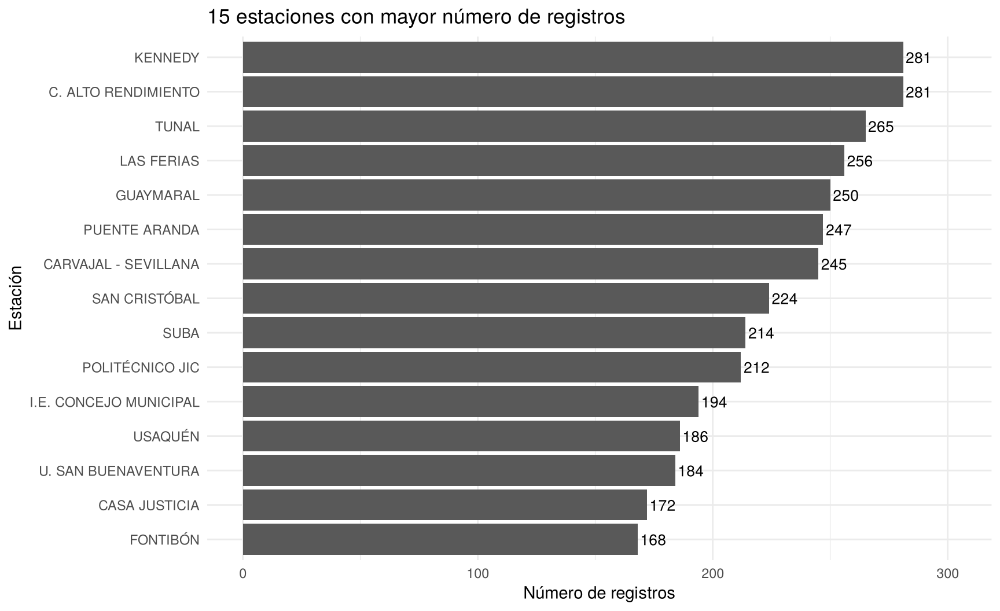
Interpretación. Las estaciones con más registros (Centro de Alto Rendimiento, Kennedy, Tunal, Las Ferias, Guaymaral, Puente Aranda) son todas de Bogotá. Son estaciones que miden muchas variables a la vez durante todo el periodo, por eso dominan el conteo.
2.2.2 Distribución de registros por variable ambiental
# Frecuencia de las variables ambientales
frecuencia_variables <- df %>% count(Variable, sort = TRUE)
frecuencia_variables## # A tibble: 20 × 2
## Variable n
## <chr> <int>
## 1 PM10 2985
## 2 PM2.5 1984
## 3 VViento 1254
## 4 DViento 1099
## 5 SO2 1066
## 6 PLiquida 927
## 7 TAire2 834
## 8 O3 827
## 9 CO 719
## 10 HAire2 693
## 11 P 673
## 12 NO2 644
## 13 RGlobal 600
## 14 HAire10 361
## 15 TAire10 334
## 16 NO 291
## 17 PST 241
## 18 HAire 75
## 19 TAire 73
## 20 RUVb 66# Distribución de registros por variable ambiental
ggplot(frecuencia_variables, aes(x = reorder(Variable, n), y = n)) + geom_col() + geom_text(aes(label = n), hjust = -0.1, size = 3.5) + coord_flip() + labs(title = "Número de registros por variable ambiental", x = "Variable ambiental", y = "Número de registros") + theme_minimal() + expand_limits(y = max(frecuencia_variables$n) * 1.08)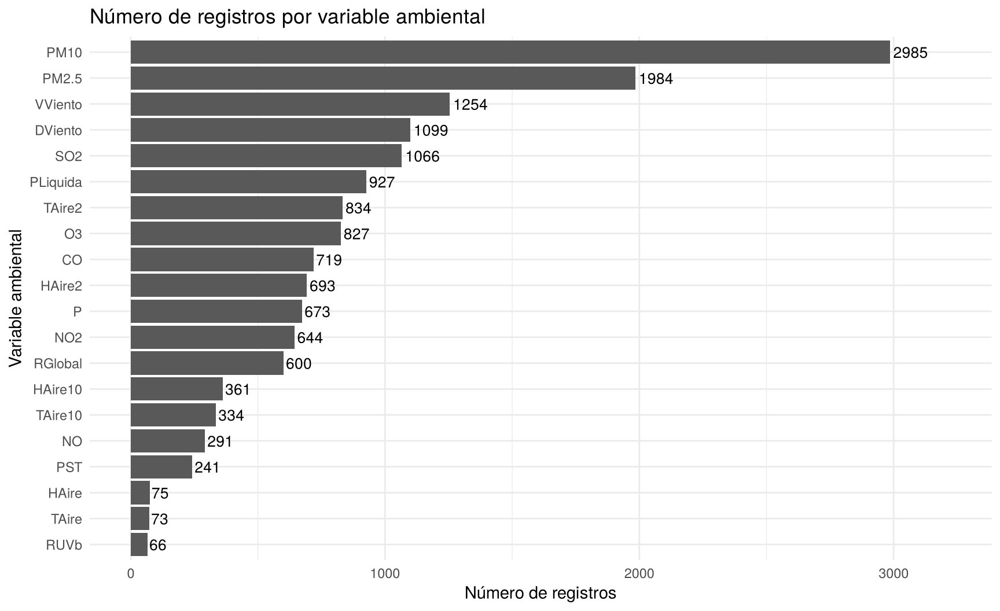
Interpretación. PM10 y PM2.5 suman 32 % de los registros: el material particulado es el contaminante más vigilado por su efecto en la salud. En el otro extremo, TAire, HAire y RUVb tienen menos de 80 registros cada uno, así que cualquier conclusión sobre ellos descansa en muy poca información.
2.3 Distribución temporal de los registros
# Distribución de registros por año
frecuencia_anios <- df %>%
count(Año, name = "n") %>%
arrange(Año)# Distribución de registros por año
ggplot(frecuencia_anios, aes(x = reorder(Año, n), y = n)) +
geom_col() +
geom_text(aes(label = n), hjust = -0.1, size = 3.5) +
coord_flip() +
labs(
title = "Número de registros por año",
x = "Año",
y = "Número de registros"
) +
theme_minimal() +
expand_limits(y = max(frecuencia_anios$n) * 1.08)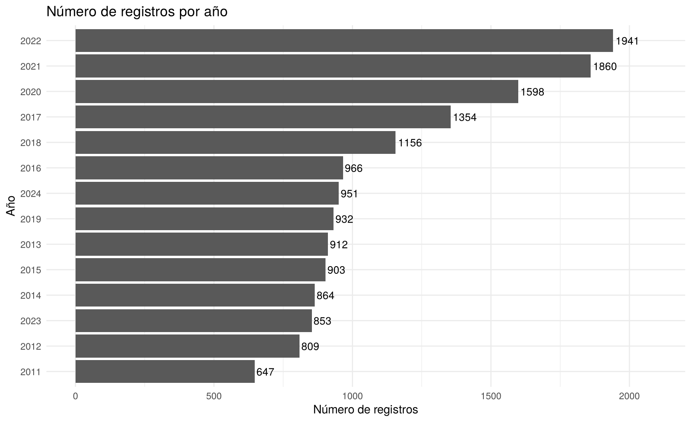
Interpretación. El gráfico ordena los años por número de registros. Los años con más datos son los recientes (2020–2022) y los de menos son los primeros (2011–2012): la red de monitoreo se triplicó en el periodo. La caída de 2023–2024 puede deberse a reportes incompletos o al cierre de estaciones; el dataset no permite distinguirlo.
Consecuencia para el análisis: cuando el promedio anual de una variable cambia, parte del cambio puede venir de que entraron o salieron estaciones, y no solo de cambios reales en el aire.
2.4 Estadística descriptiva y distribución de variables ambientales
# Estadística descriptiva de las variables ambientales
estadistica_variables <- df %>%
group_by(Variable) %>%
summarise(
n = n(),
Media = mean(Promedio, na.rm = TRUE),
Mediana = median(Promedio, na.rm = TRUE),
Desviacion_Estandar = sd(Promedio, na.rm = TRUE),
Minimo = min(Promedio, na.rm = TRUE),
Q1 = quantile(Promedio, 0.25, na.rm = TRUE),
Q3 = quantile(Promedio, 0.75, na.rm = TRUE),
Maximo = max(Promedio, na.rm = TRUE),
.groups = "drop"
)
estadistica_variables## # A tibble: 20 × 9
## Variable n Media Mediana Desviacion_Estandar Minimo Q1 Q3 Maximo
## <chr> <int> <dbl> <dbl> <dbl> <dbl> <dbl> <dbl> <dbl>
## 1 CO 719 812. 693. 487. 0.8 485. 957. 3295.
## 2 DViento 1099 167. 169. 99.3 0.4 83.6 248. 359.
## 3 HAire 75 66.1 71.8 16.0 33.1 62.0 76.4 92
## 4 HAire10 361 68.4 69.1 11.2 28 65 75.8 87.4
## 5 HAire2 693 70.5 71.3 11.3 18.1 66.6 78 90.5
## 6 NO 291 25.0 20.8 18.9 0.2 11.8 34.2 97.2
## 7 NO2 644 26.5 26 12.5 0.5 16.5 35.6 65.6
## 8 O3 827 26.2 25.7 9.17 2 19.8 31.8 65.8
## 9 P 673 702. 678. 117. 399. 630. 756. 1010.
## 10 PLiquida 927 9.77 1.4 122. 0.1 0.2 3.4 3237.
## 11 PM10 2985 37.1 34.6 15.3 4.6 27 44.8 162.
## 12 PM2.5 1984 16.8 15.7 6.89 2.7 12.5 19.8 68.6
## 13 PST 241 74.1 72 25.8 11.1 56.3 87.4 162.
## 14 RGlobal 600 186. 178. 53.9 48.3 157. 206. 431.
## 15 RUVb 66 112. 46.1 112. 0.6 1.9 206. 304.
## 16 SO2 1066 9.43 6 10.7 0.1 3.4 11 91.7
## 17 TAire 73 22.6 22.3 4.04 13.4 20.6 25 33.5
## 18 TAire10 334 22.1 22 3.37 12.4 20.6 24.1 32.4
## 19 TAire2 834 20.5 21.4 6.17 1 14.8 25.4 44
## 20 VViento 1254 1.37 1.2 0.791 0.1 0.9 1.7 10.2Interpretación. Las escalas son muy distintas (presión cerca de 700 mmHg, viento cerca de 1 m/s), así que cada variable solo se compara consigo misma.
En casi todos los contaminantes la media es mayor que la mediana (PM10: 37,1 frente a 34,6; SO₂: 9,4 frente a 6,0). Eso indica asimetría positiva: unas pocas estaciones con valores altos jalan el promedio hacia arriba.
PLiquida es el caso extremo: su media (9,8 mm) es muy superior a la mediana (1,4 mm) por unos pocos valores enormes (máximo 3.236,7 mm). Para esta variable la mediana es la medida de tendencia central adecuada.
2.4.1 Distribución de las variables ambientales
# Distribución de las variables ambientales 1-5
ggplot(df %>% filter(Variable %in% unique(Variable)[1:5]), aes(x = "", y = Promedio)) + geom_boxplot(width = 0.5) + facet_wrap(~Variable, ncol = 2, scales = "free_y") + labs(title = "Distribución de las variables ambientales", subtitle = "Variables ambientales 1-5", x = NULL, y = "Valor promedio") + theme_minimal() + theme(plot.title = element_text(face = "bold", size = 16), plot.subtitle = element_text(size = 11), strip.text = element_text(face = "bold", size = 12), axis.text.x = element_blank(), axis.ticks.x = element_blank(), panel.grid.major.x = element_blank())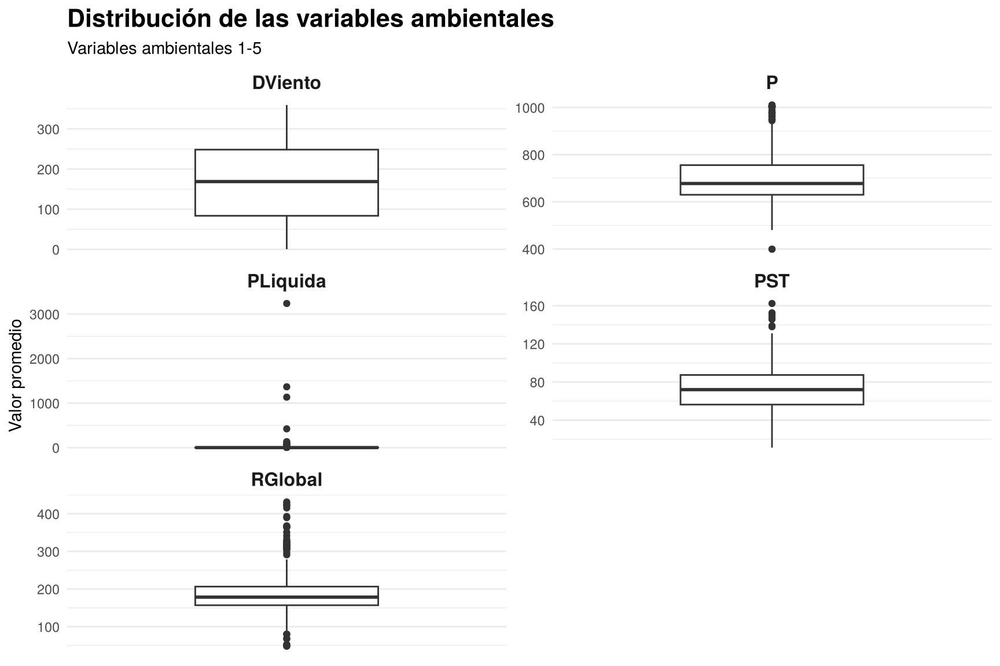
# Distribución de las variables ambientales 6-10
ggplot(df %>% filter(Variable %in% unique(Variable)[6:10]), aes(x = "", y = Promedio)) + geom_boxplot(width = 0.5) + facet_wrap(~Variable, ncol = 2, scales = "free_y") + labs(title = "Distribución de las variables ambientales", subtitle = "Variables ambientales 6-10", x = NULL, y = "Valor promedio") + theme_minimal() + theme(plot.title = element_text(face = "bold", size = 16), plot.subtitle = element_text(size = 11), strip.text = element_text(face = "bold", size = 12), axis.text.x = element_blank(), axis.ticks.x = element_blank(), panel.grid.major.x = element_blank())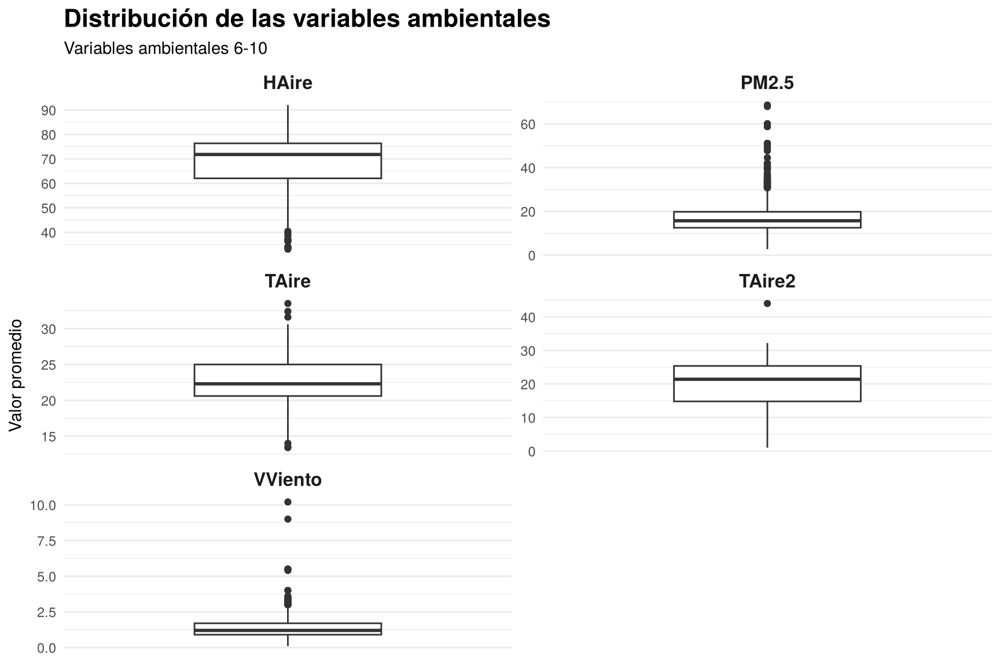
# Distribución de las variables ambientales 11-15
ggplot(df %>% filter(Variable %in% unique(Variable)[11:15]), aes(x = "", y = Promedio)) + geom_boxplot(width = 0.5) + facet_wrap(~Variable, ncol = 2, scales = "free_y") + labs(title = "Distribución de las variables ambientales", subtitle = "Variables ambientales 11-15", x = NULL, y = "Valor promedio") + theme_minimal() + theme(plot.title = element_text(face = "bold", size = 16), plot.subtitle = element_text(size = 11), strip.text = element_text(face = "bold", size = 12), axis.text.x = element_blank(), axis.ticks.x = element_blank(), panel.grid.major.x = element_blank())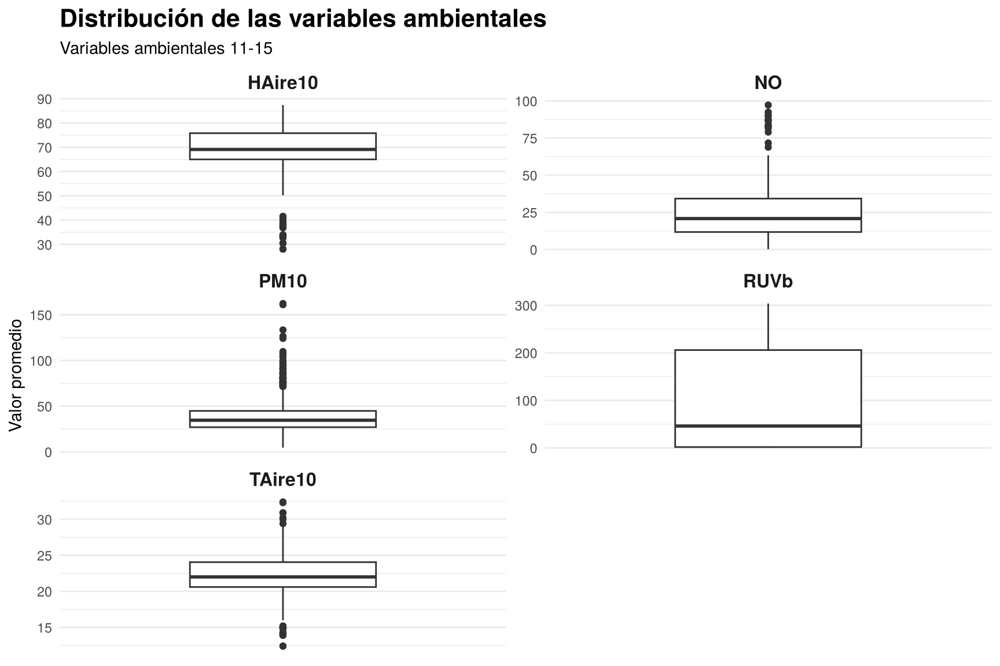
# Distribución de las variables ambientales 16-20
ggplot(df %>% filter(Variable %in% unique(Variable)[16:20]), aes(x = "", y = Promedio)) + geom_boxplot(width = 0.5) + facet_wrap(~Variable, ncol = 2, scales = "free_y") + labs(title = "Distribución de las variables ambientales", subtitle = "Variables ambientales 16-20", x = NULL, y = "Valor promedio") + theme_minimal() + theme(plot.title = element_text(face = "bold", size = 16), plot.subtitle = element_text(size = 11), strip.text = element_text(face = "bold", size = 12), axis.text.x = element_blank(), axis.ticks.x = element_blank(), panel.grid.major.x = element_blank())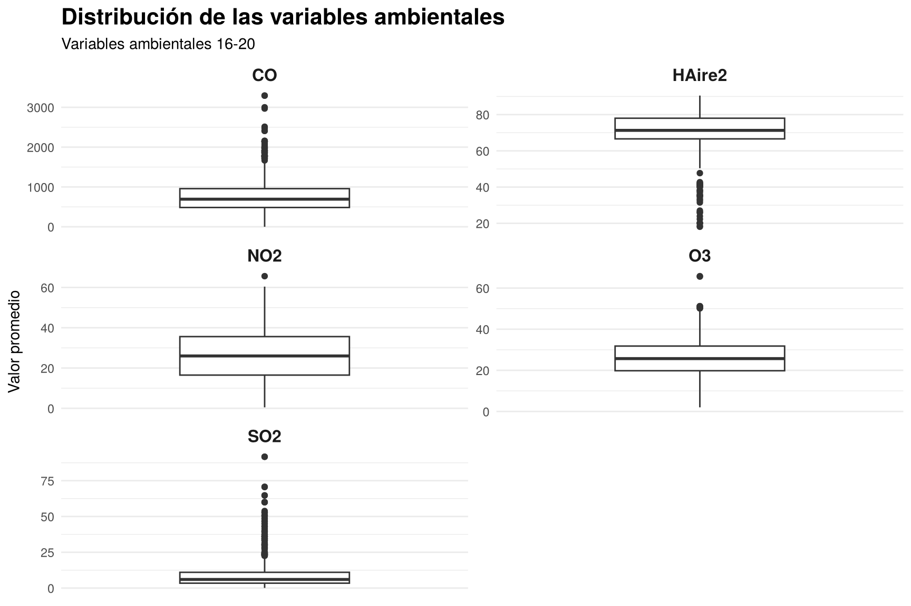
Interpretación. Los diagramas de caja confirman la asimetría: en la mayoría de las variables los puntos aislados aparecen por encima de la caja, no por debajo. RUVb tiene una caja enorme porque mezcla dos escalas de medición distintas (ver la sección de radiación ultravioleta B).
2.4.2 Identificación de valores atípicos
# Identificación de valores atípicos por variable ambiental
outliers_variables <- df %>%
group_by(Variable) %>%
summarise(
Q1 = quantile(Promedio, 0.25, na.rm = TRUE),
Q3 = quantile(Promedio, 0.75, na.rm = TRUE),
.groups = "drop"
) %>%
mutate(
IQR = Q3 - Q1,
Limite_inferior = Q1 - 1.5 * IQR,
Limite_superior = Q3 + 1.5 * IQR
)2.4.3 Resumen de valores atípicos
# Tabla de valores atípicos por variable ambiental
outliers_variables %>% mutate(across(where(is.numeric), ~round(.x, 2))) %>% knitr::kable() %>% kableExtra::kable_styling(full_width = FALSE, position = "left") %>% kableExtra::column_spec(1:5, border_right = TRUE)| Variable | Q1 | Q3 | IQR | Limite_inferior | Limite_superior |
|---|---|---|---|---|---|
| CO | 484.60 | 957.20 | 472.60 | -224.31 | 1666.11 |
| DViento | 83.65 | 248.30 | 164.65 | -163.33 | 495.28 |
| HAire | 62.05 | 76.35 | 14.30 | 40.60 | 97.80 |
| HAire10 | 65.00 | 75.80 | 10.80 | 48.80 | 92.00 |
| HAire2 | 66.60 | 78.00 | 11.40 | 49.50 | 95.10 |
| NO | 11.75 | 34.25 | 22.50 | -22.00 | 68.00 |
| NO2 | 16.50 | 35.60 | 19.10 | -12.15 | 64.25 |
| O3 | 19.80 | 31.80 | 12.00 | 1.80 | 49.80 |
| P | 629.90 | 755.50 | 125.60 | 441.50 | 943.90 |
| PLiquida | 0.20 | 3.40 | 3.20 | -4.60 | 8.20 |
| PM10 | 27.00 | 44.80 | 17.80 | 0.30 | 71.50 |
| PM2.5 | 12.50 | 19.80 | 7.30 | 1.55 | 30.75 |
| PST | 56.30 | 87.40 | 31.10 | 9.65 | 134.05 |
| RGlobal | 156.88 | 206.40 | 49.53 | 82.59 | 280.69 |
| RUVb | 1.90 | 205.85 | 203.95 | -304.03 | 511.78 |
| SO2 | 3.40 | 11.00 | 7.60 | -8.00 | 22.40 |
| TAire | 20.60 | 25.00 | 4.40 | 14.00 | 31.60 |
| TAire10 | 20.60 | 24.05 | 3.45 | 15.42 | 29.23 |
| TAire2 | 14.80 | 25.37 | 10.57 | -1.06 | 41.24 |
| VViento | 0.90 | 1.70 | 0.80 | -0.30 | 2.90 |
Interpretación. Cuando el límite inferior es negativo (CO, NO, NO₂, SO₂, PLiquida) no puede haber atípicos bajos, porque esas variables no toman valores negativos. En esos casos los atípicos son solo valores extremadamente altos.
2.5 Representatividad temporal de los datos
# Representatividad temporal por variable ambiental
representatividad_variables <- df %>% group_by(Variable) %>% summarise(Media = mean(`Representatividad Temporal`, na.rm = TRUE), Mediana = median(`Representatividad Temporal`, na.rm = TRUE), Minimo = min(`Representatividad Temporal`, na.rm = TRUE), Maximo = max(`Representatividad Temporal`, na.rm = TRUE), .groups = "drop") %>% arrange(desc(Media))
representatividad_variables %>% mutate(across(where(is.numeric), ~round(.x, 2))) %>% knitr::kable() %>% kableExtra::kable_styling(full_width = FALSE, position = "left") %>% kableExtra::column_spec(1:4, border_right = TRUE)| Variable | Media | Mediana | Minimo | Maximo |
|---|---|---|---|---|
| P | 75.37 | 90.0 | 0 | 100 |
| TAire10 | 73.99 | 92.0 | 0 | 100 |
| RUVb | 73.74 | 89.5 | 6 | 100 |
| CO | 72.59 | 86.0 | 0 | 100 |
| RGlobal | 71.56 | 87.0 | 0 | 100 |
| PLiquida | 69.80 | 89.0 | 0 | 100 |
| DViento | 68.59 | 86.0 | 0 | 167 |
| HAire10 | 68.13 | 87.0 | 0 | 100 |
| O3 | 67.62 | 80.0 | 0 | 100 |
| NO | 66.92 | 85.0 | 0 | 100 |
| PM2.5 | 66.84 | 81.0 | 0 | 103 |
| PST | 66.59 | 79.0 | 0 | 101 |
| NO2 | 66.13 | 77.0 | 0 | 100 |
| PM10 | 65.97 | 79.0 | 0 | 115 |
| TAire2 | 65.57 | 82.0 | 0 | 100 |
| HAire2 | 64.13 | 79.0 | 0 | 100 |
| SO2 | 63.47 | 72.0 | 1 | 100 |
| VViento | 62.86 | 79.0 | 0 | 100 |
| HAire | 27.49 | 15.0 | 3 | 99 |
| TAire | 23.93 | 14.5 | 3 | 90 |
# Representatividad temporal promedio por variable
ggplot(representatividad_variables, aes(x = reorder(Variable, Media), y = Media)) + geom_col() + geom_text(aes(label = round(Media, 1)), hjust = -0.1, size = 3.5) + coord_flip() + labs(title = "Representatividad temporal promedio por variable", x = "Variable ambiental", y = "Representatividad temporal (%)") + theme_minimal() + expand_limits(y = max(representatividad_variables$Media) * 1.08)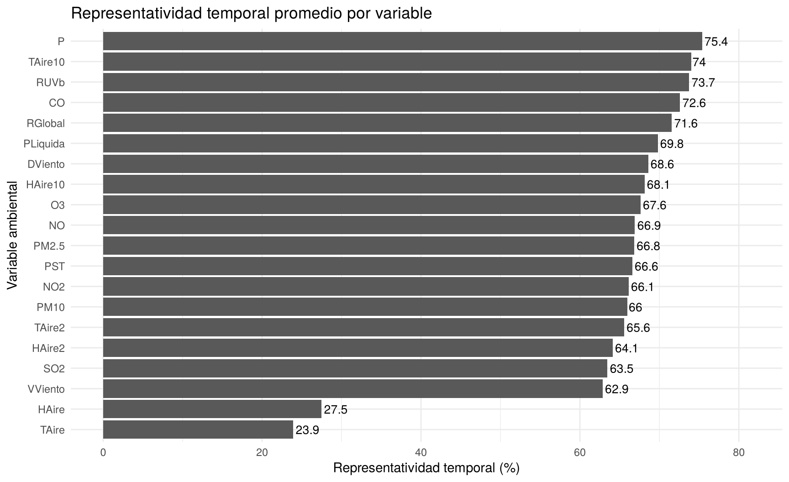
Interpretación. Casi todas las variables promedian entre 63 % y 75 % de representatividad: en un registro típico falta cerca de un tercio del año. TAire y HAire (sin altura) son la excepción, con alrededor de 24 % y 27 %: sus promedios anuales se basan en pocos meses.
Solo el 56,4 % de los registros alcanza el 75 % de cobertura, un umbral comúnmente usado para considerar válido un promedio anual.
# Registros con representatividad imposible (mayor a 100 %)
sum(df$`Representatividad Temporal` > 100, na.rm = TRUE)## [1] 12## [1] 167Precaución. Una representatividad mayor a 100 % es imposible (no se puede cubrir más que el año completo). Son errores de captura en la fuente; se documentan, pero no se corrigen porque no hay forma de saber el valor real.
# Frecuencia de registros por año
frecuencia_años <- df %>% count(Año, sort = FALSE)
frecuencia_años %>% knitr::kable(col.names = c("Año", "Número de registros")) %>% kableExtra::kable_styling(full_width = FALSE, position = "left") %>% kableExtra::column_spec(1:2, border_right = TRUE)| Año | Número de registros |
|---|---|
| 2011 | 647 |
| 2012 | 809 |
| 2013 | 912 |
| 2014 | 864 |
| 2015 | 903 |
| 2016 | 966 |
| 2017 | 1354 |
| 2018 | 1156 |
| 2019 | 932 |
| 2020 | 1598 |
| 2021 | 1860 |
| 2022 | 1941 |
| 2023 | 853 |
| 2024 | 951 |
# Distribución de registros por año
ggplot(frecuencia_años, aes(x = factor(Año), y = n)) + geom_col() + geom_text(aes(label = n), vjust = -0.3, size = 3.5) + labs(title = "Distribución de registros por año", x = "Año", y = "Número de registros") + theme_minimal() + theme(plot.title = element_text(face = "bold", size = 16), axis.text.x = element_text(angle = 45, hjust = 1), panel.grid.major.x = element_blank(), panel.grid.minor = element_blank()) + expand_limits(y = max(frecuencia_años$n) * 1.08)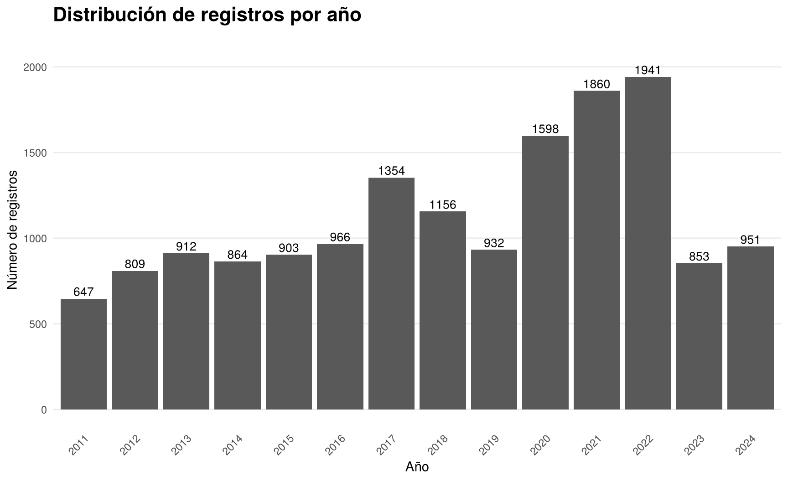
Interpretación. Por año, los registros pasan de 647 en 2011 a 1941 en 2022. Esta expansión de la red es la razón por la que las tendencias anuales deben leerse con cuidado.
2.6 Distribución geográfica de las estaciones
# Distribución geográfica de las estaciones
ubicacion_estaciones <- df %>% distinct(Estación, Latitud, Longitud) %>% arrange(Latitud, Longitud)
ubicacion_estaciones %>% head(20) %>% knitr::kable(col.names = c("Estación", "Latitud", "Longitud")) %>% kableExtra::kable_styling(full_width = FALSE, position = "left") %>% kableExtra::column_spec(1:3, border_right = TRUE)| Estación | Latitud | Longitud |
|---|---|---|
| IDSN | 1.216489 | -77.28294 |
| UNIMAR | 1.223796 | -77.28363 |
| CAMPANARIO | 2.438055 | -76.61305 |
| EDIFICIO EDGAR NEGRET | 2.445161 | -76.60544 |
| VIVERO LA FLORIDA | 2.476861 | -76.56673 |
| VIVERO LA FLORIDA* | 2.476861 | -76.56673 |
| ALCALDIA | 2.928891 | -75.28954 |
| CORHUILA | 2.930588 | -75.26494 |
| CORHUILA | 2.930678 | -75.26511 |
| CAM NORTE | 2.962500 | -75.29747 |
| SENA INDUSTRIAL | 2.962503 | -75.28403 |
| CAM NORTE | 2.962567 | -75.29746 |
| CAM NORTE | 2.962567 | -75.29746 |
| SANTANDER | 3.005131 | -76.48156 |
| MUNICIPIO DE SANTANDER DE QUILICHAO | 3.015761 | -76.48287 |
| MUNICIPIO DE SANTANDER DE QUILICHAO* | 3.015761 | -76.48287 |
| CALOTO | 3.034072 | -76.40849 |
| GUACHENÉ | 3.133001 | -76.39226 |
| VILLA RICA | 3.172729 | -76.45905 |
| PUERTO TEJADA | 3.229900 | -76.41926 |
Interpretación. Las estaciones están en todo el país, desde Pasto (latitud 1,2°) hacia el norte. Algunas aparecen repetidas con coordenadas casi idénticas o con un asterisco en el nombre (VIVERO LA FLORIDA*): son la misma estación reportada de dos formas.
2.6.1 Distribución por tipo de estación
# Preparar información de ubicación de las estaciones
ubicacion_estaciones <- df %>% distinct(Estación, `Nombre del Municipio`, `Nombre del Departamento`, Latitud, Longitud)
# Distribución geográfica de las estaciones
library(plotly)
grafico_estaciones <- ggplot(ubicacion_estaciones, aes(x = Longitud, y = Latitud, text = paste0("<b>Estación:</b> ", Estación, "<br><b>Municipio:</b> ", `Nombre del Municipio`, "<br><b>Departamento:</b> ", `Nombre del Departamento`, "<br><b>Latitud:</b> ", round(Latitud, 4), "<br><b>Longitud:</b> ", round(Longitud, 4)))) + geom_point(size = 2, alpha = 0.7) + labs(title = "Distribución geográfica de las estaciones", x = "Longitud", y = "Latitud") + theme_minimal() + theme(plot.title = element_text(face = "bold", size = 16), panel.grid.minor = element_blank())
ggplotly(grafico_estaciones, tooltip = "text")Interpretación. El mapa muestra que las estaciones se concentran en la región Andina (Bogotá, Valle de Aburrá, Cali, Bucaramanga) y en algunos puntos del Caribe. La Amazonía y la Orinoquía casi no tienen estaciones.
# Frecuencia de registros por tipo de estación
frecuencia_tipo_estacion <- df %>% count(`Tipo de Estación`, sort = TRUE)
frecuencia_tipo_estacion %>% knitr::kable(col.names = c("Tipo de estación", "Número de registros")) %>% kableExtra::kable_styling(full_width = FALSE, position = "left") %>% kableExtra::column_spec(1:2, border_right = TRUE)| Tipo de estación | Número de registros |
|---|---|
| Fija | 14184 |
| Indicativa | 1560 |
| N/A | 1 |
| NA | 1 |
# Distribución de registros por tipo de estación
ggplot(frecuencia_tipo_estacion, aes(x = reorder(`Tipo de Estación`, n), y = n)) + geom_col() + geom_text(aes(label = n), hjust = -0.1, size = 3.5) + coord_flip() + labs(title = "Distribución de registros por tipo de estación", x = "Tipo de estación", y = "Número de registros") + theme_minimal() + theme(plot.title = element_text(face = "bold", size = 16), panel.grid.major.y = element_blank(), panel.grid.minor = element_blank()) + expand_limits(y = max(frecuencia_tipo_estacion$n) * 1.08)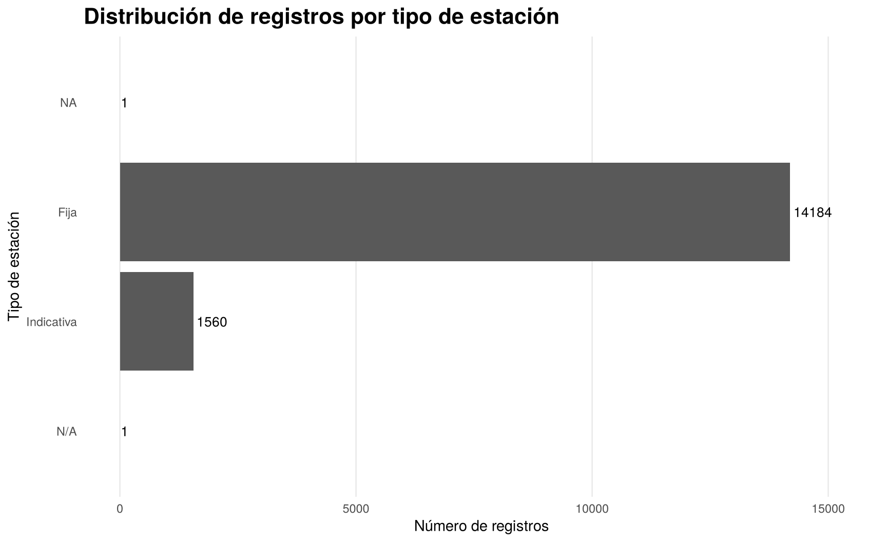
Interpretación. El 90 % de los registros viene de estaciones fijas, que operan de forma continua. Las indicativas son campañas temporales con menos cobertura en el año.
2.6.2 Distribución por departamento
# Frecuencia de registros por departamento
frecuencia_departamentos <- df %>% count(`Nombre del Departamento`, sort = TRUE)
frecuencia_departamentos %>% knitr::kable(col.names = c("Departamento", "Número de registros")) %>% kableExtra::kable_styling(full_width = FALSE, position = "left") %>% kableExtra::column_spec(1:2, border_right = TRUE)| Departamento | Número de registros |
|---|---|
| ANTIOQUIA | 4244 |
| BOGOTÁ, D.C. | 2143 |
| VALLE DEL CAUCA | 1434 |
| SANTANDER | 940 |
| BOGOTA, D.C. | 840 |
| CUNDINAMARCA | 757 |
| CESAR | 524 |
| BOYACÁ | 515 |
| MAGDALENA | 493 |
| Bogotá, D.C. | 410 |
| LA GUAJIRA | 382 |
| Cundinamarca | 367 |
| ATLÁNTICO | 327 |
| Antioquia | 322 |
| BOYACA | 282 |
| META | 244 |
| CAUCA | 145 |
| Valle del Cauca | 145 |
| Boyacá | 125 |
| BOLÍVAR | 114 |
| CALDAS | 92 |
| ATLANTICO | 84 |
| Bolívar | 81 |
| RISARALDA | 81 |
| Santander | 66 |
| CÓRDOBA | 63 |
| Magdalena | 63 |
| NORTE DE SANTANDER | 60 |
| TOLIMA | 52 |
| Cesar | 47 |
| Caldas | 44 |
| Atlántico | 30 |
| CORDOBA | 28 |
| ARAUCA | 25 |
| HUILA | 25 |
| Risaralda | 21 |
| La Guajira | 20 |
| Norte de Santander | 19 |
| Meta | 18 |
| QUINDÍO | 15 |
| Córdoba | 12 |
| CASANARE | 11 |
| NARIÑO | 11 |
| CHOCÓ | 7 |
| Cauca | 5 |
| Huila | 4 |
| QUINDIO | 4 |
| Tolima | 3 |
| Quindío | 2 |
# Primer grupo de departamentos
departamentos_1 <- frecuencia_departamentos %>% slice(1:24) %>% mutate(`Nombre del Departamento` = reorder(`Nombre del Departamento`, n))
ggplot(departamentos_1, aes(x = `Nombre del Departamento`, y = n)) + geom_col() + geom_text(aes(label = n), hjust = -0.1, size = 3) + coord_flip() + labs(title = "Registros por departamento", subtitle = "Departamentos 1–24", x = "Departamento", y = "Número de registros") + theme_minimal() + theme(plot.title = element_text(face = "bold", size = 16), panel.grid.major.y = element_blank(), panel.grid.minor = element_blank()) + expand_limits(y = max(departamentos_1$n) * 1.08)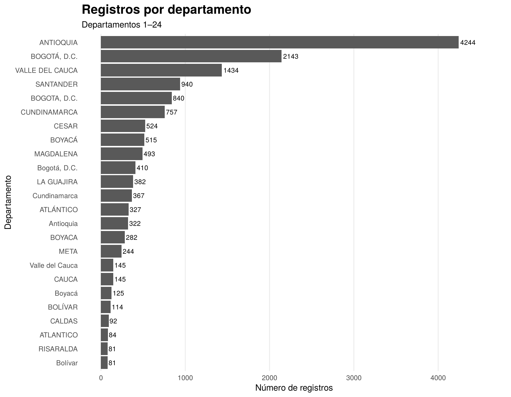
# Segundo grupo de departamentos
departamentos_2 <- frecuencia_departamentos %>% slice(25:49) %>% mutate(`Nombre del Departamento` = reorder(`Nombre del Departamento`, n))
ggplot(departamentos_2, aes(x = `Nombre del Departamento`, y = n)) + geom_col() + geom_text(aes(label = n), hjust = -0.1, size = 3) + coord_flip() + labs(title = "Registros por departamento", subtitle = "Departamentos 25–49", x = "Departamento", y = "Número de registros") + theme_minimal() + theme(plot.title = element_text(face = "bold", size = 16), panel.grid.major.y = element_blank(), panel.grid.minor = element_blank()) + expand_limits(y = max(departamentos_2$n) * 1.08)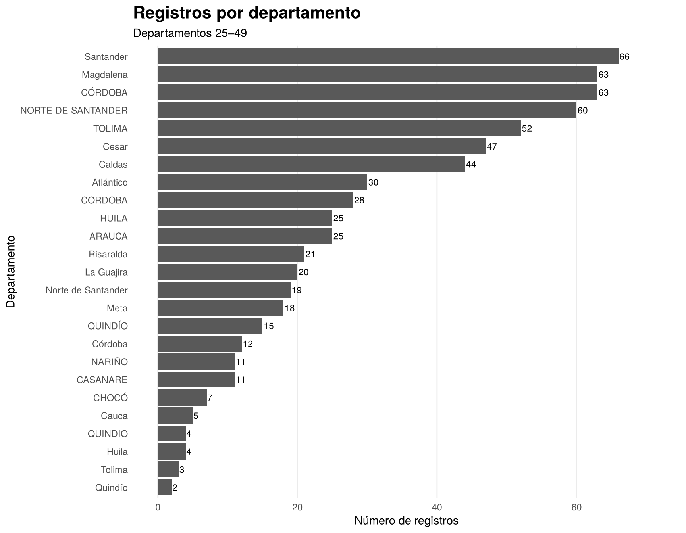
Precaución. En la tabla de departamentos el mismo departamento aparece escrito de varias formas: BOGOTÁ, D.C., BOGOTA, D.C. y Bogotá, D.C.; ANTIOQUIA y Antioquia, etc. Por eso el conteo da 49 “departamentos”. Abajo se normalizan los nombres (sin tildes y en mayúsculas) para obtener el número real.
# Normalizar nombres de departamento y municipio (sin tildes, mayúsculas)
normalizar <- function(x) stringi::stri_trans_general(x, "Latin-ASCII") %>% toupper() %>% trimws()
df <- df %>% mutate(Departamento_norm = normalizar(`Nombre del Departamento`),
Municipio_norm = normalizar(`Nombre del Municipio`))
cat("Departamentos:", n_distinct(df$`Nombre del Departamento`), "nombres ->", n_distinct(df$Departamento_norm), "reales\n")## Departamentos: 49 nombres -> 24 realescat("Municipios:", n_distinct(df$`Nombre del Municipio`), "nombres ->", n_distinct(df$Municipio_norm), "reales\n")## Municipios: 339 nombres -> 193 realesdf %>% count(Departamento_norm, sort = TRUE) %>%
mutate(Departamento_norm = reorder(Departamento_norm, n)) %>%
ggplot(aes(x = Departamento_norm, y = n)) + geom_col() +
geom_text(aes(label = n), hjust = -0.1, size = 3) + coord_flip() +
labs(title = "Registros por departamento", subtitle = "Nombres normalizados",
x = "Departamento", y = "Número de registros") +
theme_minimal() + theme(plot.title = element_text(face = "bold", size = 16)) +
expand_limits(y = max(table(df$Departamento_norm)) * 1.08)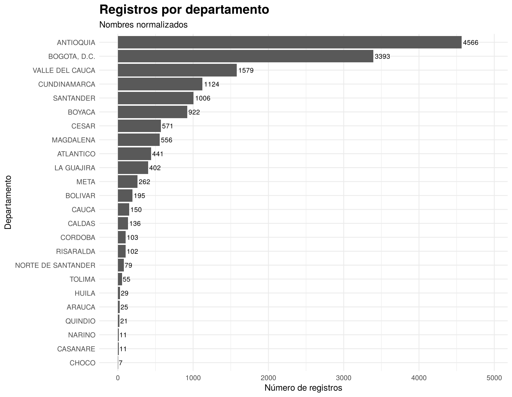
Interpretación. Al normalizar quedan 24 departamentos y 193 municipios. Antioquia y Bogotá concentran la mitad de los registros, seguidos por Valle del Cauca y Cundinamarca. La Amazonía, la Orinoquía y gran parte del Pacífico casi no tienen monitoreo: los resultados nacionales representan sobre todo a las ciudades andinas.
2.6.3 Distribución por municipio
# Frecuencia de registros por municipio
frecuencia_municipios <- df %>% count(`Nombre del Municipio`, sort = TRUE)
frecuencia_municipios %>% knitr::kable(col.names = c("Municipio", "Número de registros")) %>% kableExtra::kable_styling(full_width = FALSE, position = "left") %>% kableExtra::column_spec(1:2, border_right = TRUE)| Municipio | Número de registros |
|---|---|
| BOGOTÁ, D.C. | 2143 |
| CALI | 1028 |
| MEDELLÍN | 931 |
| BOGOTA, D.C. | 840 |
| BUCARAMANGA | 653 |
| SOGAMOSO | 446 |
| MEDELLIN | 428 |
| GIRARDOTA | 414 |
| ITAGÜÍ | 395 |
| SANTA MARTA | 343 |
| BARRANQUILLA | 296 |
| NOBSA | 249 |
| VILLAVICENCIO | 244 |
| Bogotá, D.C. | 234 |
| SABANETA | 229 |
| BELLO | 224 |
| CALDAS | 193 |
| Bogota, D.C. | 180 |
| FLORIDABLANCA | 177 |
| LA JAGUA DE IBIRICO | 170 |
| YUMBO | 161 |
| BARBOSA | 155 |
| EL PASO | 146 |
| PALMIRA | 133 |
| BARRANCAS | 122 |
| ENVIGADO | 122 |
| MOSQUERA | 111 |
| SOACHA | 106 |
| SOLEDAD | 99 |
| RIONEGRO | 93 |
| CHIRIGUANÁ | 91 |
| CIÉNAGA | 84 |
| MANIZALES | 84 |
| CARTAGENA DE INDIAS | 73 |
| CAUCASIA | 73 |
| Medellín | 72 |
| ITAGUI | 71 |
| ALBANIA | 70 |
| CIENAGA | 66 |
| COPACABANA | 63 |
| Medellin | 57 |
| FUNZA | 51 |
| POPAYAN | 51 |
| AGUSTÍN CODAZZI | 50 |
| COGUA | 49 |
| GUARNE | 49 |
| HATO NUEVO | 49 |
| PIEDECUESTA | 48 |
| SONSON | 48 |
| Cartagena De Indias | 44 |
| FONSECA | 44 |
| IBAGUÉ | 44 |
| Soacha | 44 |
| Bucaramanga | 43 |
| LA CALERA | 43 |
| Sogamoso | 43 |
| PAIPA | 42 |
| RIOHACHA | 42 |
| Santa Marta | 42 |
| CANDELARIA | 41 |
| MONTERIA | 40 |
| PEREIRA | 40 |
| YONDO | 40 |
| SAN JUAN DEL CESAR | 39 |
| SOPÓ | 39 |
| MONTERÍA | 37 |
| TURBACO | 37 |
| ZIPAQUIRÁ | 37 |
| RÁQUIRA | 36 |
| Girardota | 35 |
| MARINILLA | 35 |
| NEMOCON | 35 |
| Yumbo | 35 |
| AMAGA | 34 |
| CAJICA | 33 |
| CUCUTA | 33 |
| SIBATÉ | 33 |
| JAMUNDI | 30 |
| LA ESTRELLA | 30 |
| LA PINTADA | 30 |
| Manizales | 30 |
| Nobsa | 30 |
| TOCANCIPÁ | 30 |
| GIRON | 29 |
| MADRID | 29 |
| SANTANDER DE QUILICHAO | 29 |
| YARUMAL | 29 |
| Barranquilla | 28 |
| AMAGÁ | 27 |
| CAJICÁ | 27 |
| CÚCUTA | 27 |
| VALLEDUPAR | 27 |
| COTA | 26 |
| NEIVA | 25 |
| Palmira | 24 |
| RAQUIRA | 24 |
| Mosquera | 23 |
| PUERTO BERRÍO | 23 |
| Piedecuesta | 23 |
| TULUA | 23 |
| EL BAGRE | 22 |
| SONSÓN | 22 |
| TAUSA | 22 |
| ARMENIA | 21 |
| La Calera | 21 |
| Rionegro | 21 |
| Turbana | 21 |
| YOPAL | 21 |
| JARDIN | 20 |
| PUERTO NARE | 20 |
| BECERRIL | 19 |
| Buga | 19 |
| POPAYÁN | 19 |
| Floridablanca | 18 |
| NEMOCÓN | 18 |
| Paipa | 18 |
| SANTA FE DE ANTIOQUIA | 18 |
| SOPETRÁN | 18 |
| Villavicencio | 18 |
| DOSQUEBRADAS | 17 |
| Cartago | 16 |
| FREDONIA | 16 |
| Itagüí | 16 |
| LA VIRGINIA | 16 |
| SAN JOSE DE LA MONTAÑA | 16 |
| San José de Cúcuta | 16 |
| Turbaco | 16 |
| URIBIA | 16 |
| ARAUCA | 15 |
| El Paso | 15 |
| GIRÓN | 15 |
| Madrid | 15 |
| Cogua | 14 |
| Funza | 14 |
| La Jagua De Ibirico | 14 |
| SEGOVIA | 14 |
| SIBATE | 14 |
| SOPO | 14 |
| TOCANCIPA | 14 |
| ZIPAQUIRA | 14 |
| BURITICÁ | 13 |
| CALOTO | 13 |
| GÓMEZ PLATA | 13 |
| Itagui | 13 |
| Tocancipa | 13 |
| Tocancipá | 13 |
| Bello | 12 |
| Lenguazaque | 12 |
| Raquira | 12 |
| Ráquira | 12 |
| Tausa | 12 |
| Barrancas | 11 |
| Ciénaga | 11 |
| MIRANDA | 11 |
| PASTO | 11 |
| Zipaquirá | 11 |
| Cienaga | 10 |
| ENTRERRÍOS | 10 |
| Envigado | 10 |
| Facatativá | 10 |
| Fusagasugá | 10 |
| GUACHENÉ | 10 |
| LIBORINA | 10 |
| OLAYA | 10 |
| SANTA FÉ DE ANTIOQUIA | 10 |
| Suesca | 10 |
| Tunja | 10 |
| ZARAGOZA | 10 |
| Zipaquira | 10 |
| CHIRIGUANA | 9 |
| Cajica | 9 |
| Facatativa | 9 |
| Pereira | 9 |
| SAN PEDRO DE LOS MILAGROS | 9 |
| SANTA ROSA DE OSOS | 9 |
| Sopo | 9 |
| ANDES | 8 |
| Barbosa | 8 |
| CISNEROS | 8 |
| Cali | 8 |
| Candelaria | 8 |
| Cota | 8 |
| GOMEZ PLATA | 8 |
| Girardot | 8 |
| JAMUNDÍ | 8 |
| LA PAZ | 8 |
| La Estrella | 8 |
| MALAMBO | 8 |
| MONTELÍBANO | 8 |
| PUERTO BERRIO | 8 |
| PUERTO COLOMBIA | 8 |
| SAN JERÓNIMO | 8 |
| SANTA ROSA DE CABAL | 8 |
| Sonsón | 8 |
| Sopó | 8 |
| Tuluá | 8 |
| TÁMESIS | 8 |
| Zarzal | 8 |
| QUIBDÓ | 7 |
| Sibate | 7 |
| Sibaté | 7 |
| Tulua | 7 |
| Ubate | 7 |
| Ubaté | 7 |
| BURITICA | 6 |
| CIUDAD BOLÍVAR | 6 |
| Caldas | 6 |
| Copacabana | 6 |
| Cucunuba | 6 |
| Cucunubá | 6 |
| DON MATÍAS | 6 |
| Dosquebradas | 6 |
| Guachetá | 6 |
| Guarne | 6 |
| IBAGUE | 6 |
| NECHÍ | 6 |
| Nemocon | 6 |
| Nemocón | 6 |
| PUERTO TEJADA | 6 |
| PUERTO TRIUNFO | 6 |
| REMEDIOS | 6 |
| Santa Rosa De Cabal | 6 |
| TARSO | 6 |
| TITIRIBÍ | 6 |
| VALDIVIA | 6 |
| VILLA RICA | 6 |
| ANGOSTURA | 5 |
| ANZÁ | 5 |
| BRICEÑO | 5 |
| CAICEDO | 5 |
| CAMPAMENTO | 5 |
| Cajicá | 5 |
| CÁCERES | 5 |
| Fusagasuga | 5 |
| GUADALUPE | 5 |
| HISPANIA | 5 |
| JERICÓ | 5 |
| SABANALARGA | 5 |
| SAN ANDRÉS DE CUERQUÍA | 5 |
| SAN JOSÉ DE LA MONTAÑA | 5 |
| TOLEDO | 5 |
| VEGACHÍ | 5 |
| YALÍ | 5 |
| AGUSTIN CODAZZI | 4 |
| BELMIRA | 4 |
| CHÍA | 4 |
| Caucasia | 4 |
| Chia | 4 |
| Chinchina | 4 |
| Chiriguana | 4 |
| Chiriguaná | 4 |
| Chía | 4 |
| GIRARDOT | 4 |
| Guacheta | 4 |
| Guatapé | 4 |
| Jamundi | 4 |
| Jamundí | 4 |
| LA DORADA | 4 |
| Maceo | 4 |
| Marinilla | 4 |
| Neiva | 4 |
| Puerto Libertador | 4 |
| Puerto Nare | 4 |
| SANTA BÁRBARA | 4 |
| SUTATAUSA | 4 |
| Sabaneta | 4 |
| Santiago de Cali | 4 |
| Sonson | 4 |
| TULUÁ | 4 |
| Uribia | 4 |
| Valledupar | 4 |
| AMALFI | 3 |
| ANGELÓPOLIS | 3 |
| Albania | 3 |
| BETANIA | 3 |
| BETULIA | 3 |
| BUENAVENTURA | 3 |
| CARACOLÍ | 3 |
| CAROLINA | 3 |
| CONCORDIA | 3 |
| Cucuta | 3 |
| DONMATÍAS | 3 |
| EBÉJICO | 3 |
| HELICONIA | 3 |
| ITUANGO | 3 |
| JARDÍN | 3 |
| La Dorada | 3 |
| MONTEBELLO | 3 |
| PUEBLORRICO | 3 |
| Popayan | 3 |
| TARAZÁ | 3 |
| VALPARAÍSO | 3 |
| YOLOMBÓ | 3 |
| YONDÓ | 3 |
| ARJONA | 2 |
| Agustin Codazzi | 2 |
| Agustín Codazzi | 2 |
| Amaga | 2 |
| Amagá | 2 |
| Andes | 2 |
| Armenia | 2 |
| Becerril | 2 |
| CHINCHINA | 2 |
| Chinchiná | 2 |
| GUADALAJARA DE BUGA | 2 |
| Ibagué | 2 |
| La Ceja | 2 |
| MACEO | 2 |
| Marmato | 2 |
| Montelibano | 2 |
| Montelíbano | 2 |
| PUERTO LIBERTADOR | 2 |
| Puerto Berrio | 2 |
| SAN JOSE DE URE | 2 |
| SAN JOSÉ DE URÉ | 2 |
| SANTUARIO | 2 |
| San Jose De Ure | 2 |
| San José De Uré | 2 |
| Santa Rosa De Osos | 2 |
| Santander De Quilichao | 2 |
| TURBANA | 2 |
| Yondo | 2 |
| Yondó | 2 |
| ANORÍ | 1 |
| Anserma | 1 |
| BELALCÁZAR | 1 |
| BUGA | 1 |
| Fonseca | 1 |
| Hato Nuevo | 1 |
| Ibague | 1 |
| LÍBANO | 1 |
| Malambo | 1 |
| Palestina | 1 |
| SALGAR | 1 |
| SAN JOSÉ | 1 |
| SAN LUIS | 1 |
| Soledad | 1 |
| VENECIA | 1 |
| Villamaria | 1 |
# 24 municipios con mayor número de registros
top_municipios <- frecuencia_municipios %>%
slice_max(n, n = 24) %>%
mutate(`Nombre del Municipio` = reorder(`Nombre del Municipio`, n))
ggplot(top_municipios, aes(x = `Nombre del Municipio`, y = n)) +
geom_col() +
geom_text(aes(label = n), hjust = -0.1, size = 3) +
coord_flip() +
labs(
title = "Municipios con mayor número de registros",
subtitle = "24 municipios con mayor representación en la base de datos",
x = "Municipio",
y = "Número de registros"
) +
theme_minimal() +
theme(
plot.title = element_text(face = "bold", size = 16),
plot.subtitle = element_text(size = 11),
panel.grid.major.y = element_blank(),
panel.grid.minor = element_blank()
) +
expand_limits(y = max(top_municipios$n) * 1.08)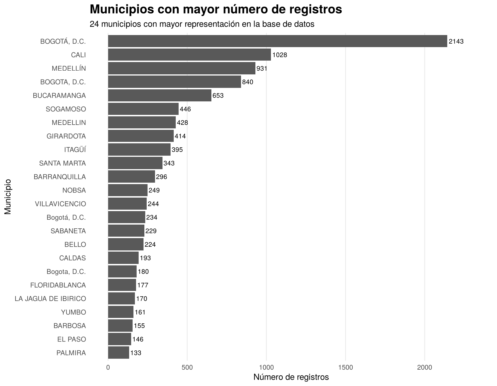
Interpretación. Los municipios con más registros son las capitales con redes de monitoreo grandes: Bogotá, Cali, Medellín y Bucaramanga. Aparecen también municipios industriales o mineros como Sogamoso, Nobsa (cementeras y siderurgia) y La Jagua de Ibirico (carbón), donde la vigilancia responde a fuentes de emisión específicas.
2.7 Análisis específico de contaminantes
Objetivo específico 1 · evolución de los contaminantes.
2.7.1 PM10
# Estadística descriptiva de PM10
estadistica_pm10 <- data.frame(Estadistico = c("Mínimo", "Primer cuartil", "Mediana", "Media", "Tercer cuartil", "Máximo"), Valor = c(min(pm10$Promedio, na.rm = TRUE), quantile(pm10$Promedio, 0.25, na.rm = TRUE), median(pm10$Promedio, na.rm = TRUE), mean(pm10$Promedio, na.rm = TRUE), quantile(pm10$Promedio, 0.75, na.rm = TRUE), max(pm10$Promedio, na.rm = TRUE)))
estadistica_pm10 %>% mutate(Valor = round(Valor, 2)) %>% knitr::kable(col.names = c("Estadístico", "Valor")) %>% kableExtra::kable_styling(full_width = FALSE, position = "left") %>% kableExtra::column_spec(1:2, border_right = TRUE)| Estadístico | Valor |
|---|---|
| Mínimo | 4.60 |
| Primer cuartil | 27.00 |
| Mediana | 34.60 |
| Media | 37.12 |
| Tercer cuartil | 44.80 |
| Máximo | 162.30 |
Interpretación. PM10 tiene 2.985 registros. La media (37,1 µg/m³) es algo mayor que la mediana (34,6 µg/m³), lo que indica asimetría positiva: algunas estaciones con valores altos, como el máximo de 162,3 µg/m³, elevan el promedio.
# PM10: promedio y número de registros por año
pm10_anual <- pm10 %>% group_by(Año) %>% summarise(Promedio_PM10 = mean(Promedio, na.rm = TRUE), Registros = n(), .groups = "drop")
pm10_anual %>% mutate(Promedio_PM10 = round(Promedio_PM10, 2)) %>% knitr::kable(col.names = c("Año", "Promedio PM10", "Número de registros")) %>% kableExtra::kable_styling(full_width = FALSE, position = "left") %>% kableExtra::column_spec(1:3, border_right = TRUE)| Año | Promedio PM10 | Número de registros |
|---|---|---|
| 2011 | 42.66 | 143 |
| 2012 | 44.60 | 162 |
| 2013 | 42.07 | 161 |
| 2014 | 43.64 | 164 |
| 2015 | 44.40 | 182 |
| 2016 | 43.65 | 177 |
| 2017 | 37.70 | 227 |
| 2018 | 36.99 | 222 |
| 2019 | 35.78 | 211 |
| 2020 | 35.90 | 267 |
| 2021 | 33.20 | 251 |
| 2022 | 31.88 | 263 |
| 2023 | 30.89 | 280 |
| 2024 | 30.83 | 275 |
# Evolución del promedio anual de PM10
ggplot(pm10_anual, aes(x = Año, y = Promedio_PM10)) + geom_line(linewidth = 1) + geom_point(size = 2.5) + geom_text(aes(label = round(Promedio_PM10, 1)), vjust = -0.8, size = 3.5) + scale_x_continuous(breaks = 2011:2024) + labs(title = "Evolución del promedio anual de PM10", subtitle = "Periodo 2011–2024", x = "Año", y = "Promedio de PM10") + theme_minimal() + theme(plot.title = element_text(face = "bold", size = 16), plot.subtitle = element_text(size = 11), axis.text.x = element_text(angle = 45, hjust = 1), panel.grid.minor = element_blank()) + expand_limits(y = max(pm10_anual$Promedio_PM10) * 1.08)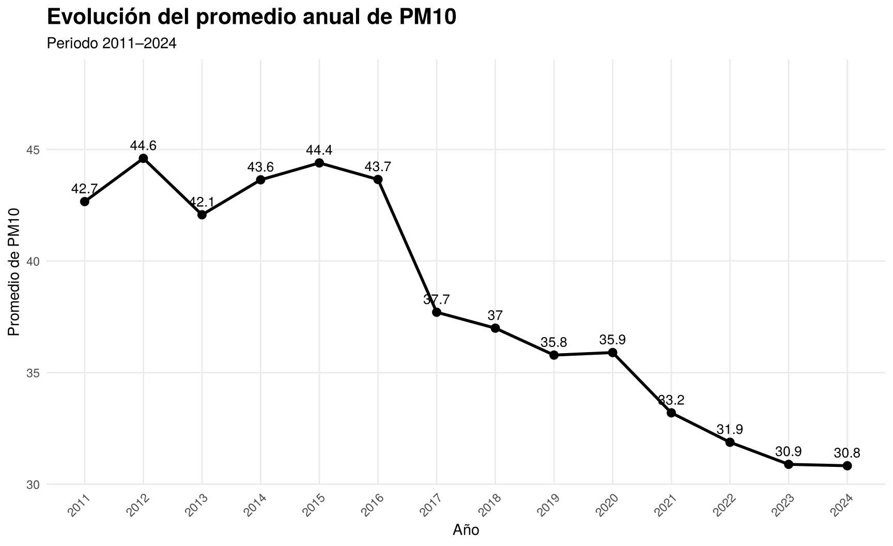
Interpretación. El PM10 se mantuvo cerca de 43–44 µg/m³ entre 2011 y 2016 y desde 2017 baja de forma sostenida hasta 30,8 µg/m³ en 2024. Es la tendencia más estable de todos los contaminantes.
Como referencia, la Resolución 2254 de 2017 fija un nivel anual de 50 µg/m³ y una meta de 30 µg/m³ a 2030: el promedio nacional estuvo por debajo del nivel vigente todos los años y en 2024 quedó muy cerca de la meta futura. Es solo una referencia, porque el promedio mezcla registros de 1 y 24 horas de exposición.
# Filtrar los registros de PM10
pm10 <- df %>%
filter(Variable == "PM10")
# Promedio anual de PM10
pm10_anual <- pm10 %>%
group_by(Año) %>%
summarise(
Promedio_PM10 = mean(Promedio, na.rm = TRUE),
Registros = n(),
.groups = "drop"
) %>%
arrange(Año)
# Mostrar tabla
pm10_anual %>%
mutate(
Promedio_PM10 = round(Promedio_PM10, 2)
) %>%
knitr::kable(
col.names = c("Año", "Promedio PM10", "Número de registros")
) %>%
kableExtra::kable_styling(
full_width = FALSE,
position = "left"
) %>%
kableExtra::column_spec(
1:3,
border_right = TRUE
)| Año | Promedio PM10 | Número de registros |
|---|---|---|
| 2011 | 42.66 | 143 |
| 2012 | 44.60 | 162 |
| 2013 | 42.07 | 161 |
| 2014 | 43.64 | 164 |
| 2015 | 44.40 | 182 |
| 2016 | 43.65 | 177 |
| 2017 | 37.70 | 227 |
| 2018 | 36.99 | 222 |
| 2019 | 35.78 | 211 |
| 2020 | 35.90 | 267 |
| 2021 | 33.20 | 251 |
| 2022 | 31.88 | 263 |
| 2023 | 30.89 | 280 |
| 2024 | 30.83 | 275 |
# Cambio porcentual de PM10 entre 2011 y 2024
PM10_2011 <- pm10_anual$Promedio_PM10[pm10_anual$Año == 2011]
PM10_2024 <- pm10_anual$Promedio_PM10[pm10_anual$Año == 2024]
cambio_porcentual <- ((PM10_2024 - PM10_2011) / PM10_2011) * 100
tabla_cambio_pm10 <- data.frame(
Periodo = "2011-2024",
Promedio_2011 = PM10_2011,
Promedio_2024 = PM10_2024,
Cambio_porcentual = cambio_porcentual
)
tabla_cambio_pm10 %>%
mutate(
Promedio_2011 = round(Promedio_2011, 2),
Promedio_2024 = round(Promedio_2024, 2),
Cambio_porcentual = round(Cambio_porcentual, 2)
) %>%
knitr::kable(
col.names = c(
"Periodo",
"Promedio 2011",
"Promedio 2024",
"Cambio (%)"
)
) %>%
kableExtra::kable_styling(
full_width = FALSE,
position = "left"
) %>%
kableExtra::column_spec(
1:4,
border_right = TRUE
)| Periodo | Promedio 2011 | Promedio 2024 | Cambio (%) |
|---|---|---|---|
| 2011-2024 | 42.66 | 30.83 | -27.75 |
Interpretación. Entre 2011 y 2024 el PM10 bajó 27,75 %.
2.7.2 PM2.5
# Estadística descriptiva de PM2.5
pm25 <- df %>%
filter(Variable == "PM2.5")
estadistica_pm25 <- data.frame(
Estadistico = c(
"Mínimo",
"Primer cuartil",
"Mediana",
"Media",
"Tercer cuartil",
"Máximo"
),
Valor = c(
min(pm25$Promedio, na.rm = TRUE),
quantile(pm25$Promedio, 0.25, na.rm = TRUE),
median(pm25$Promedio, na.rm = TRUE),
mean(pm25$Promedio, na.rm = TRUE),
quantile(pm25$Promedio, 0.75, na.rm = TRUE),
max(pm25$Promedio, na.rm = TRUE)
)
)
estadistica_pm25 %>%
mutate(Valor = round(Valor, 2)) %>%
knitr::kable(
col.names = c("Estadístico", "Valor")
) %>%
kableExtra::kable_styling(
full_width = FALSE,
position = "left"
) %>%
kableExtra::column_spec(
1:2,
border_right = TRUE
)| Estadístico | Valor |
|---|---|
| Mínimo | 2.70 |
| Primer cuartil | 12.50 |
| Mediana | 15.70 |
| Media | 16.84 |
| Tercer cuartil | 19.80 |
| Máximo | 68.60 |
Interpretación. El PM2.5 tiene menos registros que el PM10 y valores más bajos, lo esperable porque es la fracción fina del material particulado. La media (16,8 µg/m³) y la mediana (15,7 µg/m³) son cercanas.
# PM2.5: promedio y número de registros por año
pm25_anual <- pm25 %>% group_by(Año) %>% summarise(Promedio_PM25 = mean(Promedio, na.rm = TRUE), Registros = n(), .groups = "drop")
pm25_anual %>% mutate(Promedio_PM25 = round(Promedio_PM25, 2)) %>% knitr::kable(col.names = c("Año", "Promedio PM2.5", "Número de registros")) %>% kableExtra::kable_styling(full_width = FALSE, position = "left") %>% kableExtra::column_spec(1:3, border_right = TRUE)| Año | Promedio PM2.5 | Número de registros |
|---|---|---|
| 2011 | 21.46 | 19 |
| 2012 | 23.88 | 33 |
| 2013 | 22.16 | 40 |
| 2014 | 21.48 | 55 |
| 2015 | 22.39 | 59 |
| 2016 | 23.68 | 65 |
| 2017 | 18.58 | 142 |
| 2018 | 16.53 | 162 |
| 2019 | 18.51 | 139 |
| 2020 | 16.98 | 233 |
| 2021 | 15.49 | 240 |
| 2022 | 15.39 | 258 |
| 2023 | 14.00 | 268 |
| 2024 | 14.73 | 271 |
# Evolución del promedio anual de PM2.5
ggplot(pm25_anual, aes(x = Año, y = Promedio_PM25)) + geom_line(linewidth = 1) + geom_point(size = 2.5) + geom_text(aes(label = round(Promedio_PM25, 1)), vjust = -0.8, size = 3.5) + scale_x_continuous(breaks = 2011:2024) + labs(title = "Evolución del promedio anual de PM2.5", subtitle = "Periodo 2011–2024", x = "Año", y = "Promedio de PM2.5") + theme_minimal() + theme(plot.title = element_text(face = "bold", size = 16), plot.subtitle = element_text(size = 11), axis.text.x = element_text(angle = 45, hjust = 1), panel.grid.minor = element_blank()) + expand_limits(y = max(pm25_anual$Promedio_PM25) * 1.08)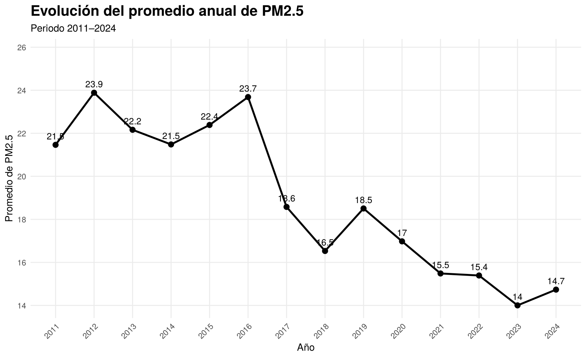
Interpretación. El PM2.5 cae con fuerza en 2017, de 23,7 a 18,6 µg/m³. Ese salto coincide con que el número de registros se duplicó (de 65 a 142): al entrar estaciones nuevas, posiblemente en zonas menos contaminadas, el promedio puede bajar sin que el aire haya mejorado en las estaciones existentes. Es un efecto de composición de la red que este EDA no puede descartar.
En 2023 y 2024 el promedio nacional (14,0 y 14,7 µg/m³) está por debajo de la meta a 2030 de la Res. 2254/2017 (15 µg/m³).
# Cambio porcentual de PM2.5 entre 2011 y 2024
tabla_cambio_pm25 <- data.frame(Periodo = "2011–2024", PM25_2011 = pm25_anual$Promedio_PM25[pm25_anual$Año == 2011], PM25_2024 = pm25_anual$Promedio_PM25[pm25_anual$Año == 2024], Cambio_porcentual = ((pm25_anual$Promedio_PM25[pm25_anual$Año == 2024] - pm25_anual$Promedio_PM25[pm25_anual$Año == 2011]) / pm25_anual$Promedio_PM25[pm25_anual$Año == 2011]) * 100)
tabla_cambio_pm25 %>% mutate(across(where(is.numeric), ~round(.x, 2))) %>% knitr::kable(col.names = c("Periodo", "Promedio 2011", "Promedio 2024", "Cambio (%)")) %>% kableExtra::kable_styling(full_width = FALSE, position = "left") %>% kableExtra::column_spec(1:4, border_right = TRUE)| Periodo | Promedio 2011 | Promedio 2024 | Cambio (%) |
|---|---|---|---|
| 2011–2024 | 21.46 | 14.73 | -31.35 |
Interpretación. Entre 2011 y 2024 el PM2.5 bajó 31,35 %.
2.7.3 NO₂
# Estadística descriptiva de NO2
no2 <- df %>% filter(Variable == "NO2")
estadistica_no2 <- data.frame(Estadistico = c("Mínimo", "Primer cuartil", "Mediana", "Media", "Tercer cuartil", "Máximo"), Valor = c(min(no2$Promedio, na.rm = TRUE), quantile(no2$Promedio, 0.25, na.rm = TRUE), median(no2$Promedio, na.rm = TRUE), mean(no2$Promedio, na.rm = TRUE), quantile(no2$Promedio, 0.75, na.rm = TRUE), max(no2$Promedio, na.rm = TRUE)))
estadistica_no2 %>% mutate(Valor = round(Valor, 2)) %>% knitr::kable(col.names = c("Estadístico", "Valor")) %>% kableExtra::kable_styling(full_width = FALSE, position = "left") %>% kableExtra::column_spec(1:2, border_right = TRUE)| Estadístico | Valor |
|---|---|
| Mínimo | 0.50 |
| Primer cuartil | 16.50 |
| Mediana | 26.00 |
| Media | 26.46 |
| Tercer cuartil | 35.60 |
| Máximo | 65.60 |
Interpretación. El NO₂ tiene solo 644 registros, entre 20 y 59 por año. La media y la mediana son prácticamente iguales (26,5 y 26,0 µg/m³), una distribución bastante simétrica.
# NO2: promedio y número de registros por año
no2_anual <- no2 %>% group_by(Año) %>% summarise(Promedio_NO2 = mean(Promedio, na.rm = TRUE), Registros = n(), .groups = "drop")
no2_anual %>% mutate(Promedio_NO2 = round(Promedio_NO2, 2)) %>% knitr::kable(col.names = c("Año", "Promedio NO2", "Número de registros")) %>% kableExtra::kable_styling(full_width = FALSE, position = "left") %>% kableExtra::column_spec(1:3, border_right = TRUE)| Año | Promedio NO2 | Número de registros |
|---|---|---|
| 2011 | 36.28 | 40 |
| 2012 | 31.77 | 48 |
| 2013 | 30.52 | 43 |
| 2014 | 24.85 | 49 |
| 2015 | 24.36 | 53 |
| 2016 | 28.28 | 48 |
| 2017 | 21.32 | 59 |
| 2018 | 24.27 | 30 |
| 2019 | 23.32 | 20 |
| 2020 | 24.39 | 49 |
| 2021 | 24.31 | 57 |
| 2022 | 26.13 | 50 |
| 2023 | 25.05 | 48 |
| 2024 | 26.88 | 50 |
# Evolución del promedio anual de NO2
ggplot(no2_anual, aes(x = Año, y = Promedio_NO2)) + geom_line(linewidth = 1) + geom_point(size = 2.5) + geom_text(aes(label = round(Promedio_NO2, 1)), vjust = -0.8, size = 3.5) + scale_x_continuous(breaks = 2011:2024) + labs(title = "Evolución del promedio anual de NO2", subtitle = "Periodo 2011–2024", x = "Año", y = "Promedio de NO2") + theme_minimal() + theme(plot.title = element_text(face = "bold", size = 16), plot.subtitle = element_text(size = 11), axis.text.x = element_text(angle = 45, hjust = 1), panel.grid.minor = element_blank()) + expand_limits(y = max(no2_anual$Promedio_NO2) * 1.08)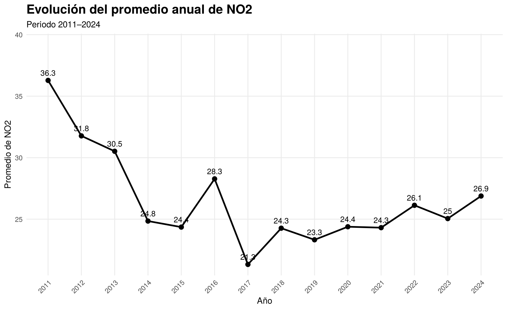
Interpretación. El NO₂ bajó con fuerza entre 2011 y 2017 (de 36,3 a 21,3 µg/m³), pero desde entonces sube lentamente hasta 26,9 µg/m³ en 2024. El cambio total esconde ese repunte. El NO₂ proviene sobre todo de la combustión vehicular, así que el repunte podría reflejar el aumento del parque automotor. Todos los valores están muy por debajo del nivel anual vigente (60 µg/m³) y de la meta 2030 (40 µg/m³).
tabla_cambio_no2 <- data.frame(Periodo = "2011–2024", NO2_2011 = no2_anual$Promedio_NO2[no2_anual$Año == 2011], NO2_2024 = no2_anual$Promedio_NO2[no2_anual$Año == 2024], Cambio_porcentual = ((no2_anual$Promedio_NO2[no2_anual$Año == 2024] - no2_anual$Promedio_NO2[no2_anual$Año == 2011]) / no2_anual$Promedio_NO2[no2_anual$Año == 2011]) * 100)
tabla_cambio_no2 %>% mutate(across(where(is.numeric), ~round(.x, 2))) %>% knitr::kable(col.names = c("Periodo", "Promedio 2011", "Promedio 2024", "Cambio (%)")) %>% kableExtra::kable_styling(full_width = FALSE, position = "left") %>% kableExtra::column_spec(1:4, border_right = TRUE)| Periodo | Promedio 2011 | Promedio 2024 | Cambio (%) |
|---|---|---|---|
| 2011–2024 | 36.28 | 26.88 | -25.9 |
Interpretación. Entre 2011 y 2024 el NO₂ bajó 25,90 %, pero con el repunte desde 2017 descrito arriba.
2.7.4 O₃
# Estadística descriptiva de O3
o3 <- df %>% filter(Variable == "O3")
estadistica_o3 <- data.frame(Estadistico = c("Mínimo", "Primer cuartil", "Mediana", "Media", "Tercer cuartil", "Máximo"), Valor = c(min(o3$Promedio, na.rm = TRUE), quantile(o3$Promedio, 0.25, na.rm = TRUE), median(o3$Promedio, na.rm = TRUE), mean(o3$Promedio, na.rm = TRUE), quantile(o3$Promedio, 0.75, na.rm = TRUE), max(o3$Promedio, na.rm = TRUE)))
estadistica_o3 %>% mutate(Valor = round(Valor, 2)) %>% knitr::kable(col.names = c("Estadístico", "Valor")) %>% kableExtra::kable_styling(full_width = FALSE, position = "left") %>% kableExtra::column_spec(1:2, border_right = TRUE)| Estadístico | Valor |
|---|---|
| Mínimo | 2.00 |
| Primer cuartil | 19.80 |
| Mediana | 25.70 |
| Media | 26.15 |
| Tercer cuartil | 31.80 |
| Máximo | 65.80 |
# O3: promedio y número de registros por año
o3_anual <- o3 %>% group_by(Año) %>% summarise(Promedio_O3 = mean(Promedio, na.rm = TRUE), Registros = n(), .groups = "drop")
o3_anual %>% mutate(Promedio_O3 = round(Promedio_O3, 2)) %>% knitr::kable(col.names = c("Año", "Promedio O3", "Número de registros")) %>% kableExtra::kable_styling(full_width = FALSE, position = "left") %>% kableExtra::column_spec(1:3, border_right = TRUE)| Año | Promedio O3 | Número de registros |
|---|---|---|
| 2011 | 23.94 | 40 |
| 2012 | 27.55 | 58 |
| 2013 | 27.86 | 54 |
| 2014 | 29.01 | 58 |
| 2015 | 32.64 | 66 |
| 2016 | 26.74 | 70 |
| 2017 | 24.23 | 107 |
| 2018 | 23.94 | 48 |
| 2019 | 25.00 | 35 |
| 2020 | 25.92 | 55 |
| 2021 | 22.68 | 57 |
| 2022 | 24.93 | 65 |
| 2023 | 23.53 | 55 |
| 2024 | 27.29 | 59 |
# Evolución del promedio anual de O3
ggplot(o3_anual, aes(x = Año, y = Promedio_O3)) + geom_line(linewidth = 1) + geom_point(size = 2.5) + geom_text(aes(label = round(Promedio_O3, 1)), vjust = -0.8, size = 3.5) + scale_x_continuous(breaks = 2011:2024) + labs(title = "Evolución del promedio anual de O3", subtitle = "Periodo 2011–2024", x = "Año", y = "Promedio de O3") + theme_minimal() + theme(plot.title = element_text(face = "bold", size = 16), plot.subtitle = element_text(size = 11), axis.text.x = element_text(angle = 45, hjust = 1), panel.grid.minor = element_blank()) + expand_limits(y = max(o3_anual$Promedio_O3) * 1.08)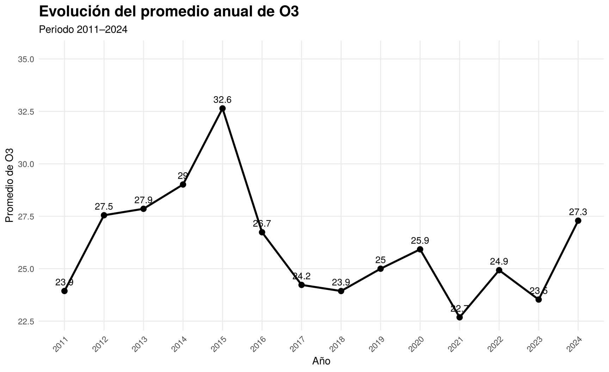
Interpretación. El ozono no muestra una tendencia clara: sube hasta 32,6 µg/m³ en 2015, baja hasta 22,7 µg/m³ en 2021 y vuelve a subir en 2024. El O₃ no se emite directamente: se forma en la atmósfera a partir de óxidos de nitrógeno y compuestos orgánicos con la radiación solar. Por eso puede subir aunque bajen otros contaminantes.
# Cambio porcentual de O3 entre 2011 y 2024
cambio_o3 <- ((o3_anual$Promedio_O3[o3_anual$Año == 2024] - o3_anual$Promedio_O3[o3_anual$Año == 2011]) / o3_anual$Promedio_O3[o3_anual$Año == 2011]) * 100
# Tabla de cambio porcentual de O3
tabla_cambio_o3 <- data.frame(Periodo = "2011–2024", O3_2011 = o3_anual$Promedio_O3[o3_anual$Año == 2011], O3_2024 = o3_anual$Promedio_O3[o3_anual$Año == 2024], Cambio_porcentual = cambio_o3)
tabla_cambio_o3 %>% mutate(across(where(is.numeric), ~round(.x, 2))) %>% knitr::kable(col.names = c("Periodo", "Promedio 2011", "Promedio 2024", "Cambio (%)")) %>% kableExtra::kable_styling(full_width = FALSE, position = "left") %>% kableExtra::column_spec(1:4, border_right = TRUE)| Periodo | Promedio 2011 | Promedio 2024 | Cambio (%) |
|---|---|---|---|
| 2011–2024 | 23.94 | 27.29 | 14 |
Interpretación. El ozono es el único contaminante que aumentó entre 2011 y 2024 (+14,0 %).
2.7.5 SO₂
# Estadística descriptiva de SO2
so2 <- df %>% filter(Variable == "SO2")
estadistica_so2 <- data.frame(Estadistico = c("Mínimo", "Primer cuartil", "Mediana", "Media", "Tercer cuartil", "Máximo"), Valor = c(min(so2$Promedio, na.rm = TRUE), quantile(so2$Promedio, 0.25, na.rm = TRUE), median(so2$Promedio, na.rm = TRUE), mean(so2$Promedio, na.rm = TRUE), quantile(so2$Promedio, 0.75, na.rm = TRUE), max(so2$Promedio, na.rm = TRUE)))
estadistica_so2 %>% mutate(Valor = round(Valor, 2)) %>% knitr::kable(col.names = c("Estadístico", "Valor")) %>% kableExtra::kable_styling(full_width = FALSE, position = "left") %>% kableExtra::column_spec(1:2, border_right = TRUE)| Estadístico | Valor |
|---|---|
| Mínimo | 0.10 |
| Primer cuartil | 3.40 |
| Mediana | 6.00 |
| Media | 9.43 |
| Tercer cuartil | 11.00 |
| Máximo | 91.71 |
Interpretación. El SO₂ es muy asimétrico: la media (9,4 µg/m³) es mucho mayor que la mediana (6,0 µg/m³) y el máximo llega a 91,7 µg/m³. Unas pocas estaciones cercanas a fuentes industriales concentran los valores altos.
# SO2: promedio y número de registros por año
so2_anual <- so2 %>% group_by(Año) %>% summarise(Promedio_SO2 = mean(Promedio, na.rm = TRUE), Registros = n(), .groups = "drop")
so2_anual %>% mutate(Promedio_SO2 = round(Promedio_SO2, 2)) %>% knitr::kable(col.names = c("Año", "Promedio SO2", "Número de registros")) %>% kableExtra::kable_styling(full_width = FALSE, position = "left") %>% kableExtra::column_spec(1:3, border_right = TRUE)| Año | Promedio SO2 | Número de registros |
|---|---|---|
| 2011 | 15.14 | 43 |
| 2012 | 11.26 | 39 |
| 2013 | 6.84 | 39 |
| 2014 | 5.92 | 33 |
| 2015 | 7.26 | 36 |
| 2016 | 15.92 | 52 |
| 2017 | 10.35 | 96 |
| 2018 | 8.34 | 60 |
| 2019 | 9.80 | 70 |
| 2020 | 8.71 | 113 |
| 2021 | 7.81 | 122 |
| 2022 | 7.14 | 116 |
| 2023 | 10.08 | 122 |
| 2024 | 9.86 | 125 |
# Evolución del promedio anual de SO2
ggplot(so2_anual, aes(x = Año, y = Promedio_SO2)) + geom_line(linewidth = 1) + geom_point(size = 2.5) + geom_text(aes(label = round(Promedio_SO2, 1)), vjust = -0.8, size = 3.5) + scale_x_continuous(breaks = 2011:2024) + labs(title = "Evolución del promedio anual de SO2", subtitle = "Periodo 2011–2024", x = "Año", y = "Promedio de SO2") + theme_minimal() + theme(plot.title = element_text(face = "bold", size = 16), plot.subtitle = element_text(size = 11), axis.text.x = element_text(angle = 45, hjust = 1), panel.grid.minor = element_blank()) + expand_limits(y = max(so2_anual$Promedio_SO2) * 1.08)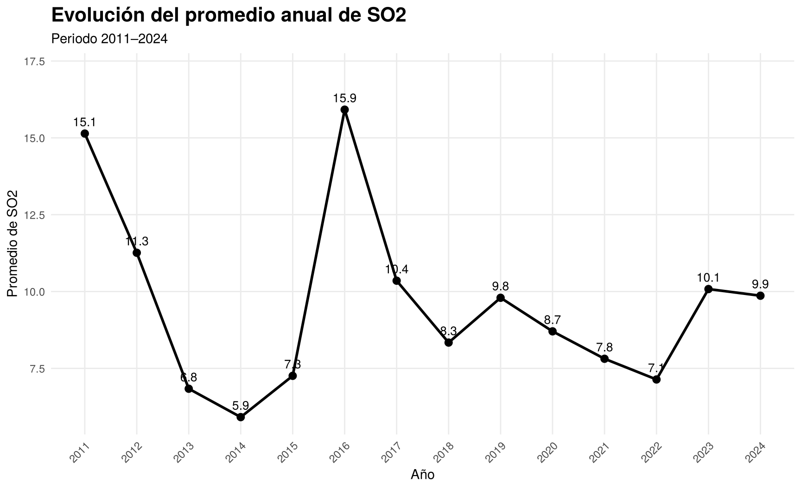
Interpretación. La serie del SO₂ es muy irregular: baja a 5,9 µg/m³ en 2014 y sube a 15,9 µg/m³ en 2016. Ese comportamiento de sierra sugiere que el promedio depende de pocas estaciones industriales que entran y salen de la red.
# Porcentaje de cambio de SO2 entre 2011 y 2024
cambio_so2 <- ((so2_anual$Promedio_SO2[so2_anual$Año == 2024] - so2_anual$Promedio_SO2[so2_anual$Año == 2011]) / so2_anual$Promedio_SO2[so2_anual$Año == 2011]) * 100
# Tabla de cambio porcentual de SO2
tabla_cambio_so2 <- data.frame(Periodo = "2011–2024", SO2_2011 = so2_anual$Promedio_SO2[so2_anual$Año == 2011], SO2_2024 = so2_anual$Promedio_SO2[so2_anual$Año == 2024], Cambio_porcentual = cambio_so2)
tabla_cambio_so2 %>% mutate(across(where(is.numeric), ~round(.x, 2))) %>% knitr::kable(col.names = c("Periodo", "Promedio 2011", "Promedio 2024", "Cambio (%)")) %>% kableExtra::kable_styling(full_width = FALSE, position = "left") %>% kableExtra::column_spec(1:4, border_right = TRUE)| Periodo | Promedio 2011 | Promedio 2024 | Cambio (%) |
|---|---|---|---|
| 2011–2024 | 15.14 | 9.86 | -34.84 |
Interpretación. La caída de 34,84 % es la mayor de los cinco contaminantes, pero por la irregularidad de la serie no debe leerse como una mejora clara y sostenida.
2.7.6 Comparación del cambio porcentual de los contaminantes
comparacion_contaminantes <- data.frame(Contaminante = c("PM10", "PM2.5", "NO2", "O3", "SO2"), Promedio_2011 = c(pm10_anual$Promedio_PM10[pm10_anual$Año == 2011], pm25_anual$Promedio_PM25[pm25_anual$Año == 2011], no2_anual$Promedio_NO2[no2_anual$Año == 2011], o3_anual$Promedio_O3[o3_anual$Año == 2011], so2_anual$Promedio_SO2[so2_anual$Año == 2011]), Promedio_2024 = c(pm10_anual$Promedio_PM10[pm10_anual$Año == 2024], pm25_anual$Promedio_PM25[pm25_anual$Año == 2024], no2_anual$Promedio_NO2[no2_anual$Año == 2024], o3_anual$Promedio_O3[o3_anual$Año == 2024], so2_anual$Promedio_SO2[so2_anual$Año == 2024]))
comparacion_contaminantes <- comparacion_contaminantes %>% mutate(Cambio_porcentual = ((Promedio_2024 - Promedio_2011) / Promedio_2011) * 100)
comparacion_contaminantes %>% mutate(across(where(is.numeric), ~round(.x, 2))) %>% knitr::kable(col.names = c("Contaminante", "Promedio 2011", "Promedio 2024", "Cambio (%)")) %>% kableExtra::kable_styling(full_width = FALSE, position = "left") %>% kableExtra::column_spec(1:4, border_right = TRUE)| Contaminante | Promedio 2011 | Promedio 2024 | Cambio (%) |
|---|---|---|---|
| PM10 | 42.66 | 30.83 | -27.75 |
| PM2.5 | 21.46 | 14.73 | -31.35 |
| NO2 | 36.28 | 26.88 | -25.90 |
| O3 | 23.94 | 27.29 | 14.00 |
| SO2 | 15.14 | 9.86 | -34.84 |
# Comparación del cambio porcentual de los principales contaminantes
ggplot(comparacion_contaminantes, aes(x = reorder(Contaminante, Cambio_porcentual), y = Cambio_porcentual)) + geom_col() + geom_text(aes(label = paste0(round(Cambio_porcentual, 1), "%")), hjust = ifelse(comparacion_contaminantes$Cambio_porcentual < 0, 1.1, -0.1), size = 3.5) + coord_flip() + labs(title = "Cambio porcentual de los principales contaminantes", subtitle = "Variación del promedio entre 2011 y 2024", x = "Contaminante", y = "Cambio porcentual (%)") + theme_minimal() + theme(plot.title = element_text(face = "bold", size = 16), plot.subtitle = element_text(size = 11), panel.grid.major.y = element_blank(), panel.grid.minor = element_blank()) + expand_limits(y = range(comparacion_contaminantes$Cambio_porcentual) * 1.15)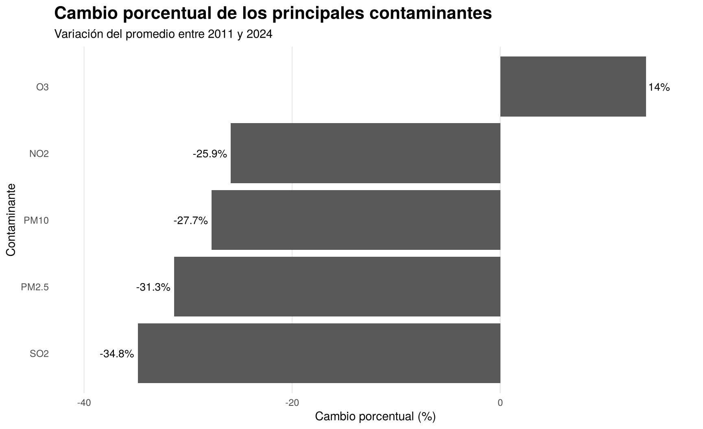
Interpretación. Cuatro de los cinco contaminantes bajaron entre 2011 y 2024, y el material particulado, el más relevante para la salud, se redujo cerca de 30 %. El ozono es la excepción.
El tamaño del cambio no indica qué tan confiable es: el SO₂ tiene la mayor caída pero la serie más irregular, y el PM10 una caída menor pero la tendencia más estable.
2.8 Análisis de variables meteorológicas
Objetivo específico 1 · variables meteorológicas.
2.8.1 Temperatura del aire (TAire)
# Estadística descriptiva de TAire
taire <- df %>% filter(Variable == "TAire")
estadistica_taire <- data.frame(Estadistico = c("Mínimo", "Primer cuartil", "Mediana", "Media", "Tercer cuartil", "Máximo"), Valor = c(min(taire$Promedio, na.rm = TRUE), quantile(taire$Promedio, 0.25, na.rm = TRUE), median(taire$Promedio, na.rm = TRUE), mean(taire$Promedio, na.rm = TRUE), quantile(taire$Promedio, 0.75, na.rm = TRUE), max(taire$Promedio, na.rm = TRUE)))
estadistica_taire %>% mutate(Valor = round(Valor, 2)) %>% knitr::kable(col.names = c("Estadístico", "Valor")) %>% kableExtra::kable_styling(full_width = FALSE, position = "left") %>% kableExtra::column_spec(1:2, border_right = TRUE)| Estadístico | Valor |
|---|---|
| Mínimo | 13.40 |
| Primer cuartil | 20.60 |
| Mediana | 22.30 |
| Media | 22.62 |
| Tercer cuartil | 25.00 |
| Máximo | 33.50 |
# TAire: promedio y número de registros por año
taire_anual <- taire %>% group_by(Año) %>% summarise(Promedio_TAire = mean(Promedio, na.rm = TRUE), Registros = n(), .groups = "drop")
taire_anual %>% mutate(Promedio_TAire = round(Promedio_TAire, 2)) %>% knitr::kable(col.names = c("Año", "Promedio TAire", "Número de registros")) %>% kableExtra::kable_styling(full_width = FALSE, position = "left") %>% kableExtra::column_spec(1:3, border_right = TRUE)| Año | Promedio TAire | Número de registros |
|---|---|---|
| 2011 | 20.90 | 2 |
| 2012 | 21.97 | 6 |
| 2013 | 22.08 | 8 |
| 2017 | 22.31 | 34 |
| 2018 | 23.12 | 17 |
| 2019 | 24.88 | 6 |
Interpretación. TAire solo tiene datos en 6 años y 73 registros; algunos años tienen apenas 2.
# Evolución del promedio anual de TAire
ggplot(taire_anual, aes(x = Año, y = Promedio_TAire)) + geom_line(linewidth = 1) + geom_point(size = 2.5) + geom_text(aes(label = round(Promedio_TAire, 1)), vjust = -0.8, size = 3.5) + scale_x_continuous(breaks = 2011:2019) + labs(title = "Evolución del promedio anual de temperatura del aire", subtitle = "Periodo 2011–2019", x = "Año", y = "Promedio de temperatura del aire (°C)") + theme_minimal() + theme(plot.title = element_text(face = "bold", size = 16), plot.subtitle = element_text(size = 11), axis.text.x = element_text(angle = 45, hjust = 1), panel.grid.minor = element_blank()) + expand_limits(y = max(taire_anual$Promedio_TAire) * 1.08)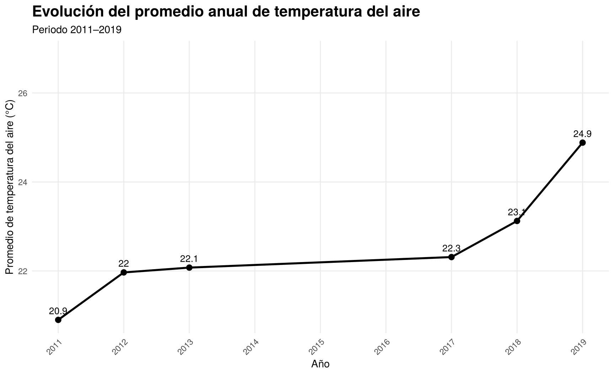
Interpretación. La subida de 20,9 °C a 24,9 °C no es un cambio climático plausible en 8 años: refleja que cambiaron las estaciones que reportan (una estación en tierra caliente sube el promedio). TAire2 y TAire10 tienen muchos más registros y son mejores variables para estudiar la temperatura.
2.8.2 Humedad relativa del aire (HAire)
# Estadística descriptiva de HAire
haire <- df %>% filter(Variable == "HAire")
estadistica_haire <- data.frame(Estadistico = c("Mínimo", "Primer cuartil", "Mediana", "Media", "Tercer cuartil", "Máximo"), Valor = c(min(haire$Promedio, na.rm = TRUE), quantile(haire$Promedio, 0.25, na.rm = TRUE), median(haire$Promedio, na.rm = TRUE), mean(haire$Promedio, na.rm = TRUE), quantile(haire$Promedio, 0.75, na.rm = TRUE), max(haire$Promedio, na.rm = TRUE)))
estadistica_haire %>% mutate(Valor = round(Valor, 2)) %>% knitr::kable(col.names = c("Estadístico", "Valor")) %>% kableExtra::kable_styling(full_width = FALSE, position = "left") %>% kableExtra::column_spec(1:2, border_right = TRUE)| Estadístico | Valor |
|---|---|
| Mínimo | 33.10 |
| Primer cuartil | 62.05 |
| Mediana | 71.80 |
| Media | 66.09 |
| Tercer cuartil | 76.35 |
| Máximo | 92.00 |
# HAire: promedio y número de registros por año
haire_anual <- haire %>% group_by(Año) %>% summarise(Promedio_HAire = mean(Promedio, na.rm = TRUE), Registros = n(), .groups = "drop")
haire_anual %>% mutate(Promedio_HAire = round(Promedio_HAire, 2)) %>% knitr::kable(col.names = c("Año", "Promedio HAire", "Número de registros")) %>% kableExtra::kable_styling(full_width = FALSE, position = "left") %>% kableExtra::column_spec(1:3, border_right = TRUE)| Año | Promedio HAire | Número de registros |
|---|---|---|
| 2011 | 71.90 | 4 |
| 2012 | 70.70 | 2 |
| 2013 | 72.55 | 2 |
| 2014 | 68.34 | 5 |
| 2017 | 65.51 | 36 |
| 2018 | 62.38 | 20 |
| 2019 | 72.53 | 6 |
# Evolución del promedio anual de HAire
ggplot(haire_anual, aes(x = Año, y = Promedio_HAire)) + geom_line(linewidth = 1) + geom_point(size = 2.5) + geom_text(aes(label = round(Promedio_HAire, 1)), vjust = -0.8, size = 3.5) + scale_x_continuous(breaks = sort(unique(haire_anual$Año))) + labs(title = "Evolución del promedio anual de humedad del aire", subtitle = "Años con registros disponibles", x = "Año", y = "Promedio de humedad del aire") + theme_minimal() + theme(plot.title = element_text(face = "bold", size = 16), plot.subtitle = element_text(size = 11), axis.text.x = element_text(angle = 45, hjust = 1), panel.grid.minor = element_blank()) + expand_limits(y = max(haire_anual$Promedio_HAire) * 1.08)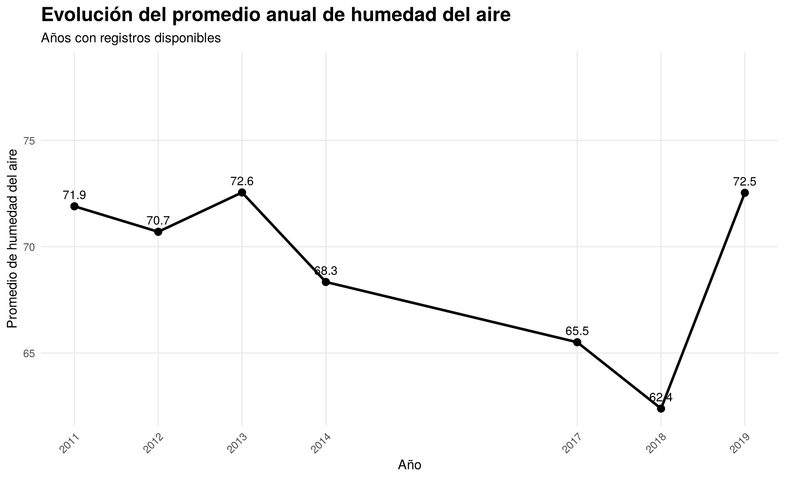
Interpretación. La humedad relativa oscila entre 62 % y 73 % sin una tendencia clara. Con solo 7 años y 75 registros, y baja representatividad, sus promedios anuales son poco confiables.
2.8.3 Velocidad del viento (VViento)
# Estadística descriptiva de VViento
vviento <- df %>% filter(Variable == "VViento")
estadistica_vviento <- data.frame(Estadistico = c("Mínimo", "Primer cuartil", "Mediana", "Media", "Tercer cuartil", "Máximo"), Valor = c(min(vviento$Promedio, na.rm = TRUE), quantile(vviento$Promedio, 0.25, na.rm = TRUE), median(vviento$Promedio, na.rm = TRUE), mean(vviento$Promedio, na.rm = TRUE), quantile(vviento$Promedio, 0.75, na.rm = TRUE), max(vviento$Promedio, na.rm = TRUE)))
estadistica_vviento %>% mutate(Valor = round(Valor, 2)) %>% knitr::kable(col.names = c("Estadístico", "Valor")) %>% kableExtra::kable_styling(full_width = FALSE, position = "left") %>% kableExtra::column_spec(1:2, border_right = TRUE)| Estadístico | Valor |
|---|---|
| Mínimo | 0.10 |
| Primer cuartil | 0.90 |
| Mediana | 1.20 |
| Media | 1.37 |
| Tercer cuartil | 1.70 |
| Máximo | 10.20 |
# VViento: promedio y número de registros por año
vviento_anual <- vviento %>% group_by(Año) %>% summarise(Promedio_VViento = mean(Promedio, na.rm = TRUE), Registros = n(), .groups = "drop")
vviento_anual %>% mutate(Promedio_VViento = round(Promedio_VViento, 2)) %>% knitr::kable(col.names = c("Año", "Promedio VViento", "Número de registros")) %>% kableExtra::kable_styling(full_width = FALSE, position = "left") %>% kableExtra::column_spec(1:3, border_right = TRUE)| Año | Promedio VViento | Número de registros |
|---|---|---|
| 2011 | 1.41 | 52 |
| 2012 | 1.56 | 61 |
| 2013 | 1.69 | 89 |
| 2014 | 1.60 | 89 |
| 2015 | 1.45 | 91 |
| 2016 | 1.23 | 100 |
| 2017 | 1.26 | 115 |
| 2018 | 1.47 | 89 |
| 2019 | 1.39 | 74 |
| 2020 | 1.31 | 136 |
| 2021 | 1.23 | 174 |
| 2022 | 1.26 | 184 |
# Evolución del promedio anual de VViento
ggplot(vviento_anual, aes(x = Año, y = Promedio_VViento)) + geom_line(linewidth = 1) + geom_point(size = 2.5) + geom_text(aes(label = round(Promedio_VViento, 1)), vjust = -0.8, size = 3.5) + scale_x_continuous(breaks = sort(unique(vviento_anual$Año))) + labs(title = "Evolución del promedio anual de velocidad del viento", subtitle = "Años con registros disponibles", x = "Año", y = "Velocidad del viento (m/s)") + theme_minimal() + theme(plot.title = element_text(face = "bold", size = 16), plot.subtitle = element_text(size = 11), axis.text.x = element_text(angle = 45, hjust = 1), panel.grid.minor = element_blank()) + expand_limits(y = max(vviento_anual$Promedio_VViento, na.rm = TRUE) * 1.08)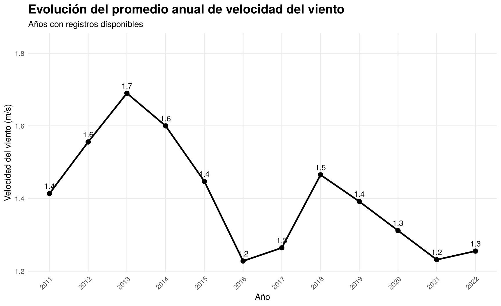
Interpretación. La velocidad del viento es baja en todo el periodo (1,2–1,7 m/s), en el rango de vientos débiles. Con poco viento los contaminantes se dispersan menos, sobre todo en valles cerrados como el Aburrá, donde está buena parte de las estaciones.
2.8.4 Dirección del viento (DViento)
# Estadística descriptiva de DViento
dviento <- df %>% filter(Variable == "DViento")
estadistica_dviento <- data.frame(Estadistico = c("Mínimo", "Primer cuartil", "Mediana", "Máximo"), Valor = c(min(dviento$Promedio, na.rm = TRUE), quantile(dviento$Promedio, 0.25, na.rm = TRUE), median(dviento$Promedio, na.rm = TRUE), max(dviento$Promedio, na.rm = TRUE)))
estadistica_dviento %>% mutate(Valor = round(Valor, 2)) %>% knitr::kable(col.names = c("Estadístico", "Valor")) %>% kableExtra::kable_styling(full_width = FALSE, position = "left") %>% kableExtra::column_spec(1:2, border_right = TRUE)| Estadístico | Valor |
|---|---|
| Mínimo | 0.40 |
| Primer cuartil | 83.65 |
| Mediana | 168.80 |
| Máximo | 359.40 |
Interpretación. La dirección del viento se mide en grados (0°–360°) y es una variable circular: el promedio aritmético de 350° y 10° da 180° (sur), cuando ambos vientos vienen del norte. Por eso sus estadísticos descriptivos no tienen sentido físico y debería analizarse con estadística circular o una rosa de los vientos.
2.8.5 Presión atmosférica (P)
# Estadística descriptiva de P
presion <- df %>% filter(Variable == "P")
estadistica_presion <- data.frame(Estadistico = c("Mínimo", "Primer cuartil", "Mediana", "Media", "Tercer cuartil", "Máximo"), Valor = c(min(presion$Promedio, na.rm = TRUE), quantile(presion$Promedio, 0.25, na.rm = TRUE), median(presion$Promedio, na.rm = TRUE), mean(presion$Promedio, na.rm = TRUE), quantile(presion$Promedio, 0.75, na.rm = TRUE), max(presion$Promedio, na.rm = TRUE)))
estadistica_presion %>% mutate(Valor = round(Valor, 2)) %>% knitr::kable(col.names = c("Estadístico", "Valor")) %>% kableExtra::kable_styling(full_width = FALSE, position = "left") %>% kableExtra::column_spec(1:2, border_right = TRUE)| Estadístico | Valor |
|---|---|
| Mínimo | 399.10 |
| Primer cuartil | 629.90 |
| Mediana | 677.60 |
| Media | 701.68 |
| Tercer cuartil | 755.50 |
| Máximo | 1010.40 |
# P: promedio y número de registros por año
presion_anual <- presion %>% group_by(Año) %>% summarise(Promedio_P = mean(Promedio, na.rm = TRUE), Registros = n(), .groups = "drop")
presion_anual %>% mutate(Promedio_P = round(Promedio_P, 2)) %>% knitr::kable(col.names = c("Año", "Promedio de presión", "Número de registros")) %>% kableExtra::kable_styling(full_width = FALSE, position = "left") %>% kableExtra::column_spec(1:3, border_right = TRUE)| Año | Promedio de presión | Número de registros |
|---|---|---|
| 2011 | 634.88 | 23 |
| 2012 | 636.12 | 31 |
| 2013 | 631.59 | 30 |
| 2014 | 639.32 | 32 |
| 2015 | 651.30 | 41 |
| 2016 | 726.74 | 40 |
| 2017 | 753.81 | 54 |
| 2018 | 851.04 | 50 |
| 2019 | 843.07 | 31 |
| 2020 | 719.27 | 95 |
| 2021 | 664.45 | 120 |
| 2022 | 676.77 | 126 |
# Evolución del promedio anual de presión atmosférica
ggplot(presion_anual, aes(x = Año, y = Promedio_P)) + geom_line(linewidth = 1) + geom_point(size = 2.5) + geom_text(aes(label = round(Promedio_P, 1)), vjust = -0.8, size = 3.5) + scale_x_continuous(breaks = sort(unique(presion_anual$Año))) + labs(title = "Evolución del promedio anual de presión atmosférica", subtitle = "Años con registros disponibles", x = "Año", y = "Presión atmosférica (hPa)") + theme_minimal() + theme(plot.title = element_text(face = "bold", size = 16), plot.subtitle = element_text(size = 11), axis.text.x = element_text(angle = 45, hjust = 1), panel.grid.minor = element_blank()) + expand_limits(y = max(presion_anual$Promedio_P, na.rm = TRUE) * 1.08)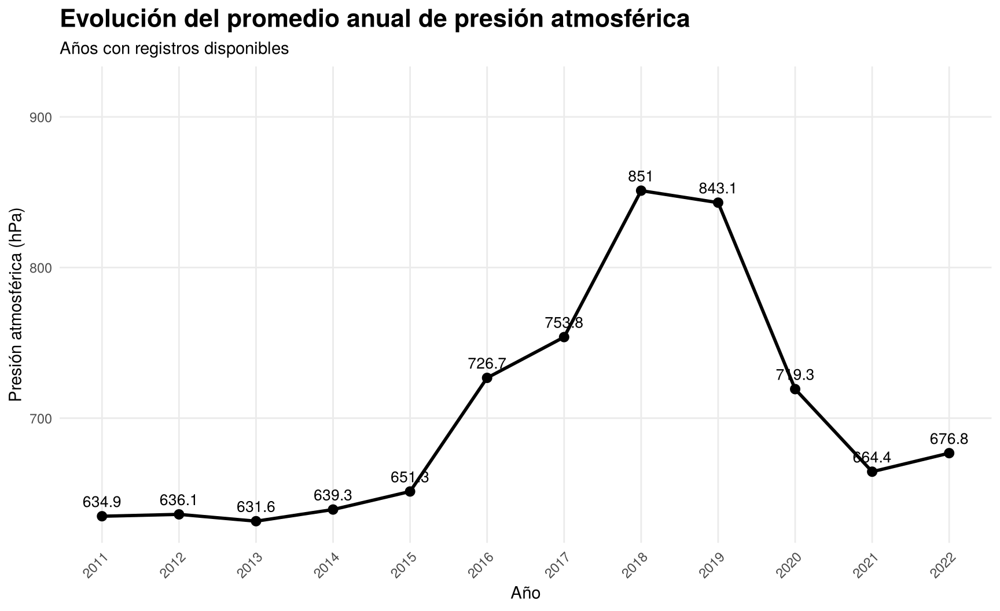
Interpretación. La presión salta de unos 635 mmHg (2011–2014) a 851,0 mmHg en 2018. La presión a nivel del mar es 760 mmHg y en Bogotá cerca de 560 mmHg, así que un promedio superior a 800 mmHg es físicamente imposible. El siguiente chunk revela la causa.
# Registros de presión por encima de 800 mmHg
sospechosos <- presion %>% filter(Promedio > 800)
cat("Registros > 800 mmHg:", nrow(sospechosos), "de", nrow(presion), "\n")## Registros > 800 mmHg: 108 de 673## # A tibble: 6 × 2
## `Nombre del Municipio` n
## <chr> <int>
## 1 CALI 22
## 2 BARRANQUILLA 18
## 3 VILLAVICENCIO 18
## 4 MEDELLÍN 8
## 5 SANTA MARTA 8
## 6 GIRARDOTA 6Precaución. Hay registros de más de 800 mmHg en Cali y Medellín, ciudades a 1.000–1.500 m de altitud, donde la presión real ronda 640–680 mmHg. Los valores cercanos a 1.010 corresponden a hectopascales (hPa) etiquetados como mmHg. Es un error de unidades: esta variable no se puede interpretar ni correlacionar sin corregirlo.
2.8.6 Precipitación líquida (PLiquida)
# Estadística descriptiva de PLiquida
pliquida <- df %>% filter(Variable == "PLiquida")
estadistica_pliquida <- data.frame(Estadistico = c("Mínimo", "Primer cuartil", "Mediana", "Media", "Tercer cuartil", "Máximo"), Valor = c(min(pliquida$Promedio, na.rm = TRUE), quantile(pliquida$Promedio, 0.25, na.rm = TRUE), median(pliquida$Promedio, na.rm = TRUE), mean(pliquida$Promedio, na.rm = TRUE), quantile(pliquida$Promedio, 0.75, na.rm = TRUE), max(pliquida$Promedio, na.rm = TRUE)))
estadistica_pliquida %>% mutate(Valor = round(Valor, 2)) %>% knitr::kable(col.names = c("Estadístico", "Valor")) %>% kableExtra::kable_styling(full_width = FALSE, position = "left") %>% kableExtra::column_spec(1:2, border_right = TRUE)| Estadístico | Valor |
|---|---|
| Mínimo | 0.10 |
| Primer cuartil | 0.20 |
| Mediana | 1.40 |
| Media | 9.77 |
| Tercer cuartil | 3.40 |
| Máximo | 3236.70 |
# PLiquida: promedio y número de registros por año
pliquida_anual <- pliquida %>% group_by(Año) %>% summarise(Promedio_PLiquida = mean(Promedio, na.rm = TRUE), Registros = n(), .groups = "drop")
pliquida_anual %>% mutate(Promedio_PLiquida = round(Promedio_PLiquida, 2)) %>% knitr::kable(col.names = c("Año", "Promedio de precipitación", "Número de registros")) %>% kableExtra::kable_styling(full_width = FALSE, position = "left") %>% kableExtra::column_spec(1:3, border_right = TRUE)| Año | Promedio de precipitación | Número de registros |
|---|---|---|
| 2011 | 3.29 | 58 |
| 2012 | 1.95 | 66 |
| 2013 | 2.58 | 77 |
| 2014 | 3.06 | 61 |
| 2015 | 2.13 | 70 |
| 2016 | 4.56 | 84 |
| 2017 | 56.53 | 63 |
| 2018 | 2.97 | 60 |
| 2019 | 34.79 | 45 |
| 2020 | 16.46 | 89 |
| 2021 | 6.54 | 123 |
| 2022 | 1.88 | 131 |
# Evolución del promedio anual de PLiquida
ggplot(pliquida_anual, aes(x = Año, y = Promedio_PLiquida)) + geom_line(linewidth = 1) + geom_point(size = 2.5) + geom_text(aes(label = round(Promedio_PLiquida, 1)), vjust = -0.8, size = 3.5) + scale_x_continuous(breaks = sort(unique(pliquida_anual$Año))) + labs(title = "Evolución del promedio anual de precipitación líquida", subtitle = "Años con registros disponibles", x = "Año", y = "Precipitación líquida (mm)") + theme_minimal() + theme(plot.title = element_text(face = "bold", size = 16), plot.subtitle = element_text(size = 11), axis.text.x = element_text(angle = 45, hjust = 1), panel.grid.minor = element_blank()) + expand_limits(y = max(pliquida_anual$Promedio_PLiquida, na.rm = TRUE) * 1.08)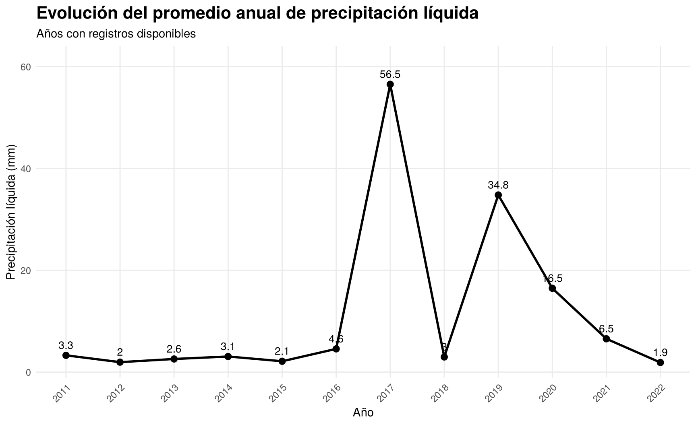
Interpretación. La precipitación promedio está entre 2 y 7 mm en casi todos los años, pero 2017 (56,5 mm) y 2019 (34,8 mm) se disparan por unos pocos valores extremos. Probablemente son acumulados reportados como promedios. Para esta variable, la mediana es más representativa que la media.
2.8.7 Radiación global (RGlobal)
# Estadística descriptiva de RGlobal
rglobal <- df %>% filter(Variable == "RGlobal")
estadistica_rglobal <- data.frame(Estadistico = c("Mínimo", "Primer cuartil", "Mediana", "Media", "Tercer cuartil", "Máximo"), Valor = c(min(rglobal$Promedio, na.rm = TRUE), quantile(rglobal$Promedio, 0.25, na.rm = TRUE), median(rglobal$Promedio, na.rm = TRUE), mean(rglobal$Promedio, na.rm = TRUE), quantile(rglobal$Promedio, 0.75, na.rm = TRUE), max(rglobal$Promedio, na.rm = TRUE)))
estadistica_rglobal %>% mutate(Valor = round(Valor, 2)) %>% knitr::kable(col.names = c("Estadístico", "Valor")) %>% kableExtra::kable_styling(full_width = FALSE, position = "left") %>% kableExtra::column_spec(1:2, border_right = TRUE)| Estadístico | Valor |
|---|---|
| Mínimo | 48.30 |
| Primer cuartil | 156.88 |
| Mediana | 178.45 |
| Media | 185.64 |
| Tercer cuartil | 206.40 |
| Máximo | 431.30 |
# RGlobal: promedio y número de registros por año
rglobal_anual <- rglobal %>% group_by(Año) %>% summarise(Promedio_RGlobal = mean(Promedio, na.rm = TRUE), Registros = n(), .groups = "drop")
rglobal_anual %>% mutate(Promedio_RGlobal = round(Promedio_RGlobal, 2)) %>% knitr::kable(col.names = c("Año", "Promedio RGlobal", "Número de registros")) %>% kableExtra::kable_styling(full_width = FALSE, position = "left") %>% kableExtra::column_spec(1:3, border_right = TRUE)| Año | Promedio RGlobal | Número de registros |
|---|---|---|
| 2011 | 165.15 | 19 |
| 2012 | 177.64 | 41 |
| 2013 | 178.48 | 43 |
| 2014 | 177.21 | 42 |
| 2015 | 195.78 | 38 |
| 2016 | 194.61 | 34 |
| 2017 | 192.43 | 71 |
| 2018 | 185.83 | 61 |
| 2019 | 190.72 | 43 |
| 2020 | 199.21 | 53 |
| 2021 | 183.37 | 74 |
| 2022 | 178.58 | 81 |
# Evolución del promedio anual de RGlobal
ggplot(rglobal_anual, aes(x = Año, y = Promedio_RGlobal)) + geom_line(linewidth = 1) + geom_point(size = 2.5) + geom_text(aes(label = round(Promedio_RGlobal, 1)), vjust = -0.8, size = 3.5) + scale_x_continuous(breaks = sort(unique(rglobal_anual$Año))) + labs(title = "Evolución del promedio anual de radiación global", subtitle = "Años con registros disponibles", x = "Año", y = "Radiación global (W/m²)") + theme_minimal() + theme(plot.title = element_text(face = "bold", size = 16), plot.subtitle = element_text(size = 11), axis.text.x = element_text(angle = 45, hjust = 1), panel.grid.minor = element_blank()) + expand_limits(y = max(rglobal_anual$Promedio_RGlobal, na.rm = TRUE) * 1.08)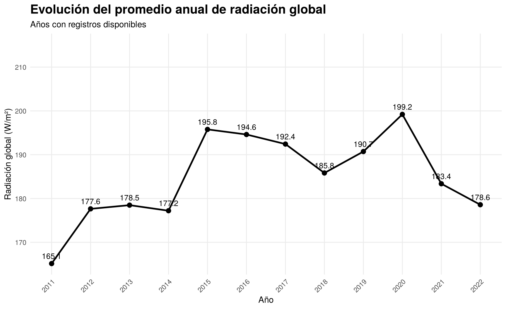
Interpretación. La radiación global es estable, entre 165 y 199 W/m², con un leve aumento hasta 2020. Es coherente con la ubicación ecuatorial del país, donde la radiación varía poco a lo largo del año.
2.8.8 Radiación ultravioleta B (RUVb)
# Estadística descriptiva de RUVb
ruvb <- df %>% filter(Variable == "RUVb")
estadistica_ruvb <- data.frame(Estadistico = c("Mínimo", "Primer cuartil", "Mediana", "Media", "Tercer cuartil", "Máximo"), Valor = c(min(ruvb$Promedio, na.rm = TRUE), quantile(ruvb$Promedio, 0.25, na.rm = TRUE), median(ruvb$Promedio, na.rm = TRUE), mean(ruvb$Promedio, na.rm = TRUE), quantile(ruvb$Promedio, 0.75, na.rm = TRUE), max(ruvb$Promedio, na.rm = TRUE)))
estadistica_ruvb %>% mutate(Valor = round(Valor, 2)) %>% knitr::kable(col.names = c("Estadístico", "Valor")) %>% kableExtra::kable_styling(full_width = FALSE, position = "left") %>% kableExtra::column_spec(1:2, border_right = TRUE)| Estadístico | Valor |
|---|---|
| Mínimo | 0.60 |
| Primer cuartil | 1.90 |
| Mediana | 46.10 |
| Media | 112.40 |
| Tercer cuartil | 205.85 |
| Máximo | 303.80 |
# RUVb: promedio y número de registros por año
ruvb_anual <- ruvb %>% group_by(Año) %>% summarise(Promedio_RUVb = mean(Promedio, na.rm = TRUE), Registros = n(), .groups = "drop")
ruvb_anual %>% mutate(Promedio_RUVb = round(Promedio_RUVb, 2)) %>% knitr::kable(col.names = c("Año", "Promedio RUVb", "Número de registros")) %>% kableExtra::kable_styling(full_width = FALSE, position = "left") %>% kableExtra::column_spec(1:3, border_right = TRUE)| Año | Promedio RUVb | Número de registros |
|---|---|---|
| 2011 | 0.60 | 2 |
| 2012 | 0.60 | 2 |
| 2013 | 0.60 | 2 |
| 2014 | 0.60 | 2 |
| 2017 | 1.70 | 4 |
| 2018 | 1.75 | 4 |
| 2019 | 153.12 | 12 |
| 2020 | 135.39 | 14 |
| 2021 | 132.16 | 14 |
| 2022 | 181.63 | 10 |
# Evolución del promedio anual de RUVb
ggplot(ruvb_anual, aes(x = Año, y = Promedio_RUVb)) + geom_line(linewidth = 1) + geom_point(size = 2.5) + geom_text(aes(label = round(Promedio_RUVb, 1)), vjust = -0.8, size = 3.5) + scale_x_continuous(breaks = sort(unique(ruvb_anual$Año))) + labs(title = "Evolución del promedio anual de radiación UV-B", subtitle = "Años con registros disponibles", x = "Año", y = "Radiación UV-B") + theme_minimal() + theme(plot.title = element_text(face = "bold", size = 16), plot.subtitle = element_text(size = 11), axis.text.x = element_text(angle = 45, hjust = 1), panel.grid.minor = element_blank()) + expand_limits(y = max(ruvb_anual$Promedio_RUVb, na.rm = TRUE) * 1.08)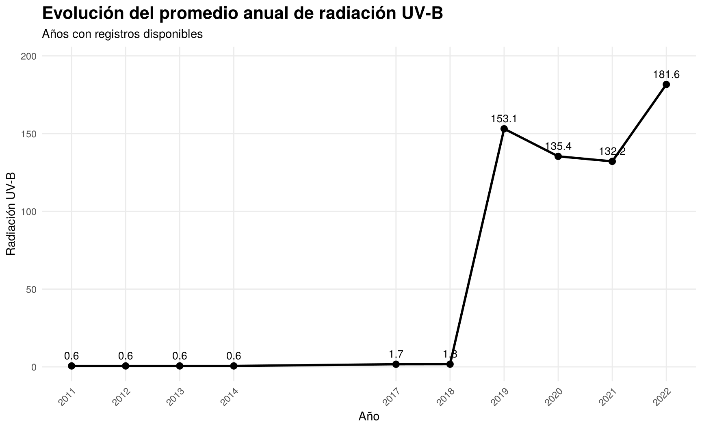
Interpretación. La radiación UV-B pasa de 0,6 (2011–2014) a valores entre 130 y 180 desde 2019. Un cambio así no es atmosférico; el siguiente chunk muestra la causa.
# Autoridades que reportan RUVb cada año
ruvb %>% group_by(Año) %>% summarise(Autoridades = paste(unique(`Autoridad Ambiental`), collapse = ", "))## # A tibble: 10 × 2
## Año Autoridades
## <dbl> <chr>
## 1 2011 SDA
## 2 2012 SDA
## 3 2013 SDA
## 4 2014 SDA
## 5 2017 CDMB
## 6 2018 CDMB
## 7 2019 CDMB, CORPOBOYACA, EPA BARRANQUILLA
## 8 2020 CDMB, CORPOBOYACA, CRC
## 9 2021 CDMB, CORPOBOYACA, CRC
## 10 2022 CORPOBOYACA, CRCPrecaución. Hasta 2014 la RUVb solo la reportaba la SDA (Bogotá); desde 2017 la reportan otras autoridades (CDMB, Corpoboyacá, CRC) con otra escala. La serie no es comparable entre los dos periodos, y cualquier correlación con RUVb será un artefacto de este cambio.
2.9 Análisis de correlaciones
Objetivo específico 1 · asociaciones entre variables.
2.9.1 Preparación de los datos
# Preparar datos para análisis de correlación
datos_correlacion <- df %>% group_by(Año, Variable) %>% summarise(Promedio = mean(Promedio, na.rm = TRUE), .groups = "drop") %>% tidyr::pivot_wider(names_from = Variable, values_from = Promedio)Interpretación. Para correlacionar variables que se miden en estaciones distintas, se calcula el promedio anual nacional de cada una. Cada variable queda reducida a máximo 14 puntos (uno por año), y algunas tienen menos (TAire 6, HAire 7). Con tan pocos puntos, un solo año atípico puede cambiar mucho el coeficiente.
2.9.2 Matriz de correlaciones
# Matriz de correlación entre contaminantes y variables meteorológicas
variables_eda <- c("PM10", "PM2.5", "NO2", "SO2", "O3", "TAire", "HAire", "VViento", "P", "PLiquida", "RGlobal", "RUVb")
matriz_correlacion <- datos_correlacion %>% select(any_of(variables_eda)) %>% cor(use = "pairwise.complete.obs")
round(matriz_correlacion, 2)## PM10 PM2.5 NO2 SO2 O3 TAire HAire VViento P PLiquida
## PM10 1.00 0.97 0.44 0.23 0.59 -0.79 0.39 0.58 -0.44 -0.31
## PM2.5 0.97 1.00 0.49 0.31 0.59 -0.58 0.66 0.51 -0.44 -0.25
## NO2 0.44 0.49 1.00 0.52 0.05 -0.73 0.57 0.35 -0.55 -0.53
## SO2 0.23 0.31 0.52 1.00 -0.27 -0.48 0.25 -0.34 0.08 0.08
## O3 0.59 0.59 0.05 -0.27 1.00 -0.12 0.35 0.51 -0.42 -0.32
## TAire -0.79 -0.58 -0.73 -0.48 -0.12 1.00 -0.07 -0.20 0.82 0.40
## HAire 0.39 0.66 0.57 0.25 0.35 -0.07 1.00 0.34 -0.50 -0.17
## VViento 0.58 0.51 0.35 -0.34 0.51 -0.20 0.34 1.00 -0.31 -0.35
## P -0.44 -0.44 -0.55 0.08 -0.42 0.82 -0.50 -0.31 1.00 0.51
## PLiquida -0.31 -0.25 -0.53 0.08 -0.32 0.40 -0.17 -0.35 0.51 1.00
## RGlobal -0.17 -0.15 -0.71 -0.08 0.21 0.76 -0.43 -0.42 0.49 0.42
## RUVb -0.83 -0.70 -0.39 -0.26 -0.35 0.85 0.37 -0.65 0.21 0.07
## RGlobal RUVb
## PM10 -0.17 -0.83
## PM2.5 -0.15 -0.70
## NO2 -0.71 -0.39
## SO2 -0.08 -0.26
## O3 0.21 -0.35
## TAire 0.76 0.85
## HAire -0.43 0.37
## VViento -0.42 -0.65
## P 0.49 0.21
## PLiquida 0.42 0.07
## RGlobal 1.00 0.40
## RUVb 0.40 1.00# Mapa de calor de correlaciones por Pearsonn
matriz_correlacion %>% corrplot::corrplot(method = "color", type = "upper", order = "hclust", addCoef.col = "black", tl.col = "black", tl.srt = 45, number.cex = 0.7, diag = FALSE)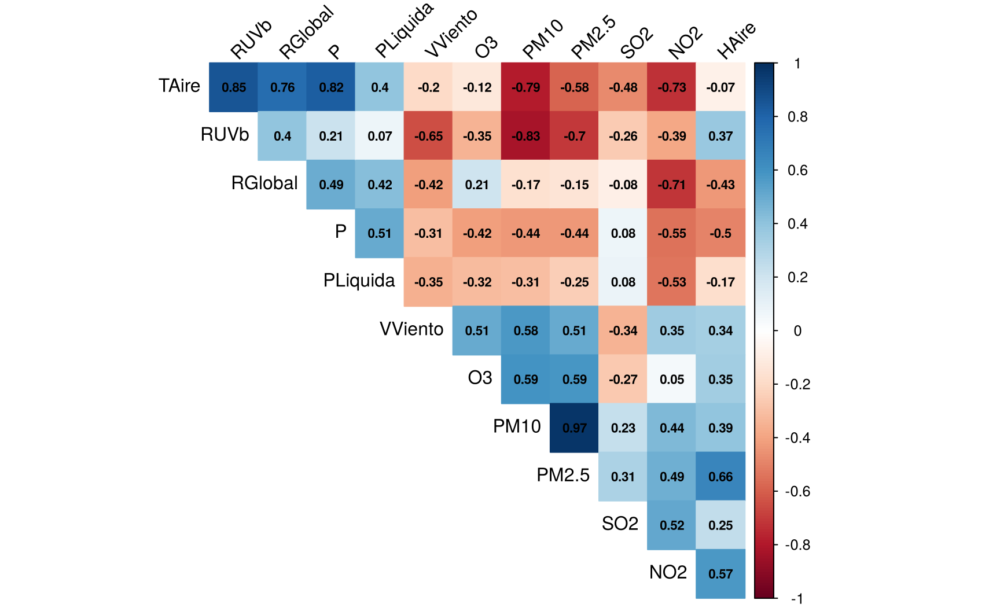
Interpretación. El mapa de calor ordena las variables por agrupamiento jerárquico. Los contaminantes (PM10, PM2.5, O₃, NO₂) tienden a correlacionarse positivamente entre sí y con la velocidad del viento y la humedad, mientras que la temperatura, la radiación y la presión se relacionan en general de forma negativa con ellos.
- Relación robusta: PM10–PM2.5 (r = 0,97, 14 años). El PM2.5 es una fracción del PM10 y ambos comparten fuentes (tráfico, industria, polvo resuspendido). Es la única relación fuerte sustentada por la serie completa y sin problemas de datos.
- Plausibles pero frágiles: TAire con PM10 (-0,79) y con NO₂ (-0,73). Más temperatura favorece la mezcla vertical y la dispersión, pero estos valores se basan en solo 6 años y en una variable con baja representatividad.
- Espurias: las de RUVb (con PM10 -0,83, con TAire 0,85) y las de P, por el cambio de escala y el error de unidades.
- Con interés físico: NO₂–RGlobal (-0,71, 12 años). La radiación solar descompone el NO₂ (fotólisis) y genera ozono, lo que es coherente con la relación negativa.
Una correlación alta no implica causalidad.
2.9.3 Tabla de correlaciones y fuerza de asociación
correlaciones_todas <- datos_correlacion %>%
select(where(is.numeric)) %>%
cor(use = "complete.obs") %>%
as.data.frame() %>%
tibble::rownames_to_column("Variable1") %>%
tidyr::pivot_longer(
cols = -Variable1,
names_to = "Variable2",
values_to = "Correlacion"
) %>%
filter(Variable1 != Variable2) %>%
mutate(
Relacion = paste(Variable1, "vs.", Variable2),
Fuerza = case_when(
abs(Correlacion) >= 0.80 ~ "Muy fuerte",
abs(Correlacion) >= 0.60 ~ "Fuerte",
abs(Correlacion) >= 0.40 ~ "Moderada",
abs(Correlacion) >= 0.20 ~ "Débil",
TRUE ~ "Muy débil"
)
) %>%
select(Relacion, Correlacion, Fuerza) %>%
distinct(Relacion, .keep_all = TRUE)# Tabla completa de correlaciones con fuerza y color
correlaciones_todas %>%
mutate(Correlacion = round(Correlacion, 2)) %>%
knitr::kable(
col.names = c("Relación", "Coeficiente de correlación", "Fuerza")
) %>%
kableExtra::kable_styling(
full_width = FALSE,
position = "left"
) %>%
kableExtra::column_spec(
2,
background = sapply(correlaciones_todas$Correlacion, function(x) {
if (x >= 0.80) "#81C784"
else if (x >= 0.60) "#A5D6A7"
else if (x >= 0.40) "#FFF59D"
else if (x >= 0.20) "#FFE0B2"
else if (x <= -0.80) "#E57373"
else if (x <= -0.60) "#EF9A9A"
else if (x <= -0.40) "#FFCC80"
else if (x <= -0.20) "#FFE0B2"
else "#E0E0E0"
}),
color = "black"
) %>%
kableExtra::column_spec(
3,
background = sapply(correlaciones_todas$Correlacion, function(x) {
if (x >= 0.80) "#81C784"
else if (x >= 0.60) "#A5D6A7"
else if (x >= 0.40) "#FFF59D"
else if (x >= 0.20) "#FFE0B2"
else if (x <= -0.80) "#E57373"
else if (x <= -0.60) "#EF9A9A"
else if (x <= -0.40) "#FFCC80"
else if (x <= -0.20) "#FFE0B2"
else "#E0E0E0"
}),
color = "black"
) %>%
kableExtra::column_spec(
1:3,
border_right = TRUE
)| Relación | Coeficiente de correlación | Fuerza |
|---|---|---|
| Año vs. CO | -0.90 | Muy fuerte |
| Año vs. DViento | 0.41 | Moderada |
| Año vs. HAire | -0.50 | Moderada |
| Año vs. HAire10 | -0.37 | Débil |
| Año vs. HAire2 | -0.85 | Muy fuerte |
| Año vs. NO | -0.80 | Fuerte |
| Año vs. NO2 | -0.94 | Muy fuerte |
| Año vs. O3 | -0.45 | Moderada |
| Año vs. P | 0.96 | Muy fuerte |
| Año vs. PLiquida | 0.60 | Moderada |
| Año vs. PM10 | -0.96 | Muy fuerte |
| Año vs. PM2.5 | -0.87 | Muy fuerte |
| Año vs. PST | -0.71 | Fuerte |
| Año vs. RGlobal | 0.90 | Muy fuerte |
| Año vs. RUVb | 0.58 | Moderada |
| Año vs. SO2 | -0.48 | Moderada |
| Año vs. TAire | 0.86 | Muy fuerte |
| Año vs. TAire10 | -0.46 | Moderada |
| Año vs. TAire2 | 0.89 | Muy fuerte |
| Año vs. VViento | -0.49 | Moderada |
| CO vs. Año | -0.90 | Muy fuerte |
| CO vs. DViento | -0.48 | Moderada |
| CO vs. HAire | 0.78 | Fuerte |
| CO vs. HAire10 | 0.10 | Muy débil |
| CO vs. HAire2 | 0.54 | Moderada |
| CO vs. NO | 0.64 | Fuerte |
| CO vs. NO2 | 0.90 | Muy fuerte |
| CO vs. O3 | 0.66 | Fuerte |
| CO vs. P | -0.90 | Muy fuerte |
| CO vs. PLiquida | -0.62 | Fuerte |
| CO vs. PM10 | 0.89 | Muy fuerte |
| CO vs. PM2.5 | 0.93 | Muy fuerte |
| CO vs. PST | 0.40 | Débil |
| CO vs. RGlobal | -0.81 | Muy fuerte |
| CO vs. RUVb | -0.25 | Débil |
| CO vs. SO2 | 0.28 | Débil |
| CO vs. TAire | -0.58 | Moderada |
| CO vs. TAire10 | 0.53 | Moderada |
| CO vs. TAire2 | -0.64 | Fuerte |
| CO vs. VViento | 0.68 | Fuerte |
| DViento vs. Año | 0.41 | Moderada |
| DViento vs. CO | -0.48 | Moderada |
| DViento vs. HAire | -0.25 | Débil |
| DViento vs. HAire10 | 0.14 | Muy débil |
| DViento vs. HAire2 | -0.30 | Débil |
| DViento vs. NO | -0.19 | Muy débil |
| DViento vs. NO2 | -0.22 | Débil |
| DViento vs. O3 | -0.72 | Fuerte |
| DViento vs. P | 0.58 | Moderada |
| DViento vs. PLiquida | 0.23 | Débil |
| DViento vs. PM10 | -0.45 | Moderada |
| DViento vs. PM2.5 | -0.48 | Moderada |
| DViento vs. PST | -0.45 | Moderada |
| DViento vs. RGlobal | 0.14 | Muy débil |
| DViento vs. RUVb | 0.46 | Moderada |
| DViento vs. SO2 | 0.53 | Moderada |
| DViento vs. TAire | 0.38 | Débil |
| DViento vs. TAire10 | 0.47 | Moderada |
| DViento vs. TAire2 | 0.30 | Débil |
| DViento vs. VViento | -0.69 | Fuerte |
| HAire vs. Año | -0.50 | Moderada |
| HAire vs. CO | 0.78 | Fuerte |
| HAire vs. DViento | -0.25 | Débil |
| HAire vs. HAire10 | -0.31 | Débil |
| HAire vs. HAire2 | 0.05 | Muy débil |
| HAire vs. NO | 0.12 | Muy débil |
| HAire vs. NO2 | 0.57 | Moderada |
| HAire vs. O3 | 0.53 | Moderada |
| HAire vs. P | -0.56 | Moderada |
| HAire vs. PLiquida | -0.20 | Muy débil |
| HAire vs. PM10 | 0.47 | Moderada |
| HAire vs. PM2.5 | 0.69 | Fuerte |
| HAire vs. PST | -0.23 | Débil |
| HAire vs. RGlobal | -0.46 | Moderada |
| HAire vs. RUVb | 0.37 | Débil |
| HAire vs. SO2 | 0.24 | Débil |
| HAire vs. TAire | -0.07 | Muy débil |
| HAire vs. TAire10 | 0.54 | Moderada |
| HAire vs. TAire2 | -0.26 | Débil |
| HAire vs. VViento | 0.40 | Débil |
| HAire10 vs. Año | -0.37 | Débil |
| HAire10 vs. CO | 0.10 | Muy débil |
| HAire10 vs. DViento | 0.14 | Muy débil |
| HAire10 vs. HAire | -0.31 | Débil |
| HAire10 vs. HAire2 | 0.54 | Moderada |
| HAire10 vs. NO | 0.78 | Fuerte |
| HAire10 vs. NO2 | 0.49 | Moderada |
| HAire10 vs. O3 | -0.47 | Moderada |
| HAire10 vs. P | -0.16 | Muy débil |
| HAire10 vs. PLiquida | -0.54 | Moderada |
| HAire10 vs. PM10 | 0.21 | Débil |
| HAire10 vs. PM2.5 | -0.11 | Muy débil |
| HAire10 vs. PST | 0.55 | Moderada |
| HAire10 vs. RGlobal | -0.64 | Fuerte |
| HAire10 vs. RUVb | -0.57 | Moderada |
| HAire10 vs. SO2 | 0.40 | Moderada |
| HAire10 vs. TAire | -0.58 | Moderada |
| HAire10 vs. TAire10 | 0.21 | Débil |
| HAire10 vs. TAire2 | -0.42 | Moderada |
| HAire10 vs. VViento | 0.02 | Muy débil |
| HAire2 vs. Año | -0.85 | Muy fuerte |
| HAire2 vs. CO | 0.54 | Moderada |
| HAire2 vs. DViento | -0.30 | Débil |
| HAire2 vs. HAire | 0.05 | Muy débil |
| HAire2 vs. HAire10 | 0.54 | Moderada |
| HAire2 vs. NO | 0.72 | Fuerte |
| HAire2 vs. NO2 | 0.70 | Fuerte |
| HAire2 vs. O3 | 0.10 | Muy débil |
| HAire2 vs. P | -0.81 | Muy fuerte |
| HAire2 vs. PLiquida | -0.34 | Débil |
| HAire2 vs. PM10 | 0.79 | Fuerte |
| HAire2 vs. PM2.5 | 0.59 | Moderada |
| HAire2 vs. PST | 0.89 | Muy fuerte |
| HAire2 vs. RGlobal | -0.73 | Fuerte |
| HAire2 vs. RUVb | -0.84 | Muy fuerte |
| HAire2 vs. SO2 | 0.54 | Moderada |
| HAire2 vs. TAire | -0.99 | Muy fuerte |
| HAire2 vs. TAire10 | 0.16 | Muy débil |
| HAire2 vs. TAire2 | -0.97 | Muy fuerte |
| HAire2 vs. VViento | 0.12 | Muy débil |
| NO vs. Año | -0.80 | Fuerte |
| NO vs. CO | 0.64 | Fuerte |
| NO vs. DViento | -0.19 | Muy débil |
| NO vs. HAire | 0.12 | Muy débil |
| NO vs. HAire10 | 0.78 | Fuerte |
| NO vs. HAire2 | 0.72 | Fuerte |
| NO vs. NO2 | 0.87 | Muy fuerte |
| NO vs. O3 | 0.14 | Muy débil |
| NO vs. P | -0.63 | Fuerte |
| NO vs. PLiquida | -0.87 | Muy fuerte |
| NO vs. PM10 | 0.74 | Fuerte |
| NO vs. PM2.5 | 0.49 | Moderada |
| NO vs. PST | 0.73 | Fuerte |
| NO vs. RGlobal | -0.91 | Muy fuerte |
| NO vs. RUVb | -0.65 | Fuerte |
| NO vs. SO2 | 0.38 | Débil |
| NO vs. TAire | -0.76 | Fuerte |
| NO vs. TAire10 | 0.47 | Moderada |
| NO vs. TAire2 | -0.64 | Fuerte |
| NO vs. VViento | 0.51 | Moderada |
| NO2 vs. Año | -0.94 | Muy fuerte |
| NO2 vs. CO | 0.90 | Muy fuerte |
| NO2 vs. DViento | -0.22 | Débil |
| NO2 vs. HAire | 0.57 | Moderada |
| NO2 vs. HAire10 | 0.49 | Moderada |
| NO2 vs. HAire2 | 0.70 | Fuerte |
| NO2 vs. NO | 0.87 | Muy fuerte |
| NO2 vs. O3 | 0.33 | Débil |
| NO2 vs. P | -0.83 | Muy fuerte |
| NO2 vs. PLiquida | -0.74 | Fuerte |
| NO2 vs. PM10 | 0.87 | Muy fuerte |
| NO2 vs. PM2.5 | 0.77 | Fuerte |
| NO2 vs. PST | 0.53 | Moderada |
| NO2 vs. RGlobal | -0.98 | Muy fuerte |
| NO2 vs. RUVb | -0.39 | Débil |
| NO2 vs. SO2 | 0.54 | Moderada |
| NO2 vs. TAire | -0.73 | Fuerte |
| NO2 vs. TAire10 | 0.67 | Fuerte |
| NO2 vs. TAire2 | -0.74 | Fuerte |
| NO2 vs. VViento | 0.51 | Moderada |
| O3 vs. Año | -0.45 | Moderada |
| O3 vs. CO | 0.66 | Fuerte |
| O3 vs. DViento | -0.72 | Fuerte |
| O3 vs. HAire | 0.53 | Moderada |
| O3 vs. HAire10 | -0.47 | Moderada |
| O3 vs. HAire2 | 0.10 | Muy débil |
| O3 vs. NO | 0.14 | Muy débil |
| O3 vs. NO2 | 0.33 | Débil |
| O3 vs. P | -0.58 | Moderada |
| O3 vs. PLiquida | -0.38 | Débil |
| O3 vs. PM10 | 0.61 | Fuerte |
| O3 vs. PM2.5 | 0.75 | Fuerte |
| O3 vs. PST | 0.22 | Débil |
| O3 vs. RGlobal | -0.16 | Muy débil |
| O3 vs. RUVb | -0.12 | Muy débil |
| O3 vs. SO2 | -0.41 | Moderada |
| O3 vs. TAire | -0.12 | Muy débil |
| O3 vs. TAire10 | 0.04 | Muy débil |
| O3 vs. TAire2 | -0.14 | Muy débil |
| O3 vs. VViento | 0.82 | Muy fuerte |
| P vs. Año | 0.96 | Muy fuerte |
| P vs. CO | -0.90 | Muy fuerte |
| P vs. DViento | 0.58 | Moderada |
| P vs. HAire | -0.56 | Moderada |
| P vs. HAire10 | -0.16 | Muy débil |
| P vs. HAire2 | -0.81 | Muy fuerte |
| P vs. NO | -0.63 | Fuerte |
| P vs. NO2 | -0.83 | Muy fuerte |
| P vs. O3 | -0.58 | Moderada |
| P vs. PLiquida | 0.44 | Moderada |
| P vs. PM10 | -0.94 | Muy fuerte |
| P vs. PM2.5 | -0.92 | Muy fuerte |
| P vs. PST | -0.67 | Fuerte |
| P vs. RGlobal | 0.76 | Fuerte |
| P vs. RUVb | 0.56 | Moderada |
| P vs. SO2 | -0.34 | Débil |
| P vs. TAire | 0.82 | Muy fuerte |
| P vs. TAire10 | -0.28 | Débil |
| P vs. TAire2 | 0.87 | Muy fuerte |
| P vs. VViento | -0.50 | Moderada |
| PLiquida vs. Año | 0.60 | Moderada |
| PLiquida vs. CO | -0.62 | Fuerte |
| PLiquida vs. DViento | 0.23 | Débil |
| PLiquida vs. HAire | -0.20 | Muy débil |
| PLiquida vs. HAire10 | -0.54 | Moderada |
| PLiquida vs. HAire2 | -0.34 | Débil |
| PLiquida vs. NO | -0.87 | Muy fuerte |
| PLiquida vs. NO2 | -0.74 | Fuerte |
| PLiquida vs. O3 | -0.38 | Débil |
| PLiquida vs. P | 0.44 | Moderada |
| PLiquida vs. PM10 | -0.62 | Fuerte |
| PLiquida vs. PM2.5 | -0.45 | Moderada |
| PLiquida vs. PST | -0.48 | Moderada |
| PLiquida vs. RGlobal | 0.73 | Fuerte |
| PLiquida vs. RUVb | 0.38 | Débil |
| PLiquida vs. SO2 | -0.03 | Muy débil |
| PLiquida vs. TAire | 0.40 | Débil |
| PLiquida vs. TAire10 | -0.50 | Moderada |
| PLiquida vs. TAire2 | 0.25 | Débil |
| PLiquida vs. VViento | -0.77 | Fuerte |
| PM10 vs. Año | -0.96 | Muy fuerte |
| PM10 vs. CO | 0.89 | Muy fuerte |
| PM10 vs. DViento | -0.45 | Moderada |
| PM10 vs. HAire | 0.47 | Moderada |
| PM10 vs. HAire10 | 0.21 | Débil |
| PM10 vs. HAire2 | 0.79 | Fuerte |
| PM10 vs. NO | 0.74 | Fuerte |
| PM10 vs. NO2 | 0.87 | Muy fuerte |
| PM10 vs. O3 | 0.61 | Fuerte |
| PM10 vs. P | -0.94 | Muy fuerte |
| PM10 vs. PLiquida | -0.62 | Fuerte |
| PM10 vs. PM2.5 | 0.93 | Muy fuerte |
| PM10 vs. PST | 0.72 | Fuerte |
| PM10 vs. RGlobal | -0.79 | Fuerte |
| PM10 vs. RUVb | -0.58 | Moderada |
| PM10 vs. SO2 | 0.35 | Débil |
| PM10 vs. TAire | -0.79 | Fuerte |
| PM10 vs. TAire10 | 0.44 | Moderada |
| PM10 vs. TAire2 | -0.80 | Muy fuerte |
| PM10 vs. VViento | 0.58 | Moderada |
| PM2.5 vs. Año | -0.87 | Muy fuerte |
| PM2.5 vs. CO | 0.93 | Muy fuerte |
| PM2.5 vs. DViento | -0.48 | Moderada |
| PM2.5 vs. HAire | 0.69 | Fuerte |
| PM2.5 vs. HAire10 | -0.11 | Muy débil |
| PM2.5 vs. HAire2 | 0.59 | Moderada |
| PM2.5 vs. NO | 0.49 | Moderada |
| PM2.5 vs. NO2 | 0.77 | Fuerte |
| PM2.5 vs. O3 | 0.75 | Fuerte |
| PM2.5 vs. P | -0.92 | Muy fuerte |
| PM2.5 vs. PLiquida | -0.45 | Moderada |
| PM2.5 vs. PM10 | 0.93 | Muy fuerte |
| PM2.5 vs. PST | 0.46 | Moderada |
| PM2.5 vs. RGlobal | -0.64 | Fuerte |
| PM2.5 vs. RUVb | -0.31 | Débil |
| PM2.5 vs. SO2 | 0.28 | Débil |
| PM2.5 vs. TAire | -0.58 | Moderada |
| PM2.5 vs. TAire10 | 0.44 | Moderada |
| PM2.5 vs. TAire2 | -0.68 | Fuerte |
| PM2.5 vs. VViento | 0.57 | Moderada |
| PST vs. Año | -0.71 | Fuerte |
| PST vs. CO | 0.40 | Débil |
| PST vs. DViento | -0.45 | Moderada |
| PST vs. HAire | -0.23 | Débil |
| PST vs. HAire10 | 0.55 | Moderada |
| PST vs. HAire2 | 0.89 | Muy fuerte |
| PST vs. NO | 0.73 | Fuerte |
| PST vs. NO2 | 0.53 | Moderada |
| PST vs. O3 | 0.22 | Débil |
| PST vs. P | -0.67 | Fuerte |
| PST vs. PLiquida | -0.48 | Moderada |
| PST vs. PM10 | 0.72 | Fuerte |
| PST vs. PM2.5 | 0.46 | Moderada |
| PST vs. RGlobal | -0.56 | Moderada |
| PST vs. RUVb | -0.98 | Muy fuerte |
| PST vs. SO2 | 0.17 | Muy débil |
| PST vs. TAire | -0.90 | Muy fuerte |
| PST vs. TAire10 | -0.08 | Muy débil |
| PST vs. TAire2 | -0.77 | Fuerte |
| PST vs. VViento | 0.33 | Débil |
| RGlobal vs. Año | 0.90 | Muy fuerte |
| RGlobal vs. CO | -0.81 | Muy fuerte |
| RGlobal vs. DViento | 0.14 | Muy débil |
| RGlobal vs. HAire | -0.46 | Moderada |
| RGlobal vs. HAire10 | -0.64 | Fuerte |
| RGlobal vs. HAire2 | -0.73 | Fuerte |
| RGlobal vs. NO | -0.91 | Muy fuerte |
| RGlobal vs. NO2 | -0.98 | Muy fuerte |
| RGlobal vs. O3 | -0.16 | Muy débil |
| RGlobal vs. P | 0.76 | Fuerte |
| RGlobal vs. PLiquida | 0.73 | Fuerte |
| RGlobal vs. PM10 | -0.79 | Fuerte |
| RGlobal vs. PM2.5 | -0.64 | Fuerte |
| RGlobal vs. PST | -0.56 | Moderada |
| RGlobal vs. RUVb | 0.44 | Moderada |
| RGlobal vs. SO2 | -0.59 | Moderada |
| RGlobal vs. TAire | 0.76 | Fuerte |
| RGlobal vs. TAire10 | -0.64 | Fuerte |
| RGlobal vs. TAire2 | 0.75 | Fuerte |
| RGlobal vs. VViento | -0.41 | Moderada |
| RUVb vs. Año | 0.58 | Moderada |
| RUVb vs. CO | -0.25 | Débil |
| RUVb vs. DViento | 0.46 | Moderada |
| RUVb vs. HAire | 0.37 | Débil |
| RUVb vs. HAire10 | -0.57 | Moderada |
| RUVb vs. HAire2 | -0.84 | Muy fuerte |
| RUVb vs. NO | -0.65 | Fuerte |
| RUVb vs. NO2 | -0.39 | Débil |
| RUVb vs. O3 | -0.12 | Muy débil |
| RUVb vs. P | 0.56 | Moderada |
| RUVb vs. PLiquida | 0.38 | Débil |
| RUVb vs. PM10 | -0.58 | Moderada |
| RUVb vs. PM2.5 | -0.31 | Débil |
| RUVb vs. PST | -0.98 | Muy fuerte |
| RUVb vs. RGlobal | 0.44 | Moderada |
| RUVb vs. SO2 | -0.09 | Muy débil |
| RUVb vs. TAire | 0.85 | Muy fuerte |
| RUVb vs. TAire10 | 0.24 | Débil |
| RUVb vs. TAire2 | 0.70 | Fuerte |
| RUVb vs. VViento | -0.24 | Débil |
| SO2 vs. Año | -0.48 | Moderada |
| SO2 vs. CO | 0.28 | Débil |
| SO2 vs. DViento | 0.53 | Moderada |
| SO2 vs. HAire | 0.24 | Débil |
| SO2 vs. HAire10 | 0.40 | Moderada |
| SO2 vs. HAire2 | 0.54 | Moderada |
| SO2 vs. NO | 0.38 | Débil |
| SO2 vs. NO2 | 0.54 | Moderada |
| SO2 vs. O3 | -0.41 | Moderada |
| SO2 vs. P | -0.34 | Débil |
| SO2 vs. PLiquida | -0.03 | Muy débil |
| SO2 vs. PM10 | 0.35 | Débil |
| SO2 vs. PM2.5 | 0.28 | Débil |
| SO2 vs. PST | 0.17 | Muy débil |
| SO2 vs. RGlobal | -0.59 | Moderada |
| SO2 vs. RUVb | -0.09 | Muy débil |
| SO2 vs. TAire | -0.48 | Moderada |
| SO2 vs. TAire10 | 0.68 | Fuerte |
| SO2 vs. TAire2 | -0.62 | Fuerte |
| SO2 vs. VViento | -0.44 | Moderada |
| TAire vs. Año | 0.86 | Muy fuerte |
| TAire vs. CO | -0.58 | Moderada |
| TAire vs. DViento | 0.38 | Débil |
| TAire vs. HAire | -0.07 | Muy débil |
| TAire vs. HAire10 | -0.58 | Moderada |
| TAire vs. HAire2 | -0.99 | Muy fuerte |
| TAire vs. NO | -0.76 | Fuerte |
| TAire vs. NO2 | -0.73 | Fuerte |
| TAire vs. O3 | -0.12 | Muy débil |
| TAire vs. P | 0.82 | Muy fuerte |
| TAire vs. PLiquida | 0.40 | Débil |
| TAire vs. PM10 | -0.79 | Fuerte |
| TAire vs. PM2.5 | -0.58 | Moderada |
| TAire vs. PST | -0.90 | Muy fuerte |
| TAire vs. RGlobal | 0.76 | Fuerte |
| TAire vs. RUVb | 0.85 | Muy fuerte |
| TAire vs. SO2 | -0.48 | Moderada |
| TAire vs. TAire10 | -0.12 | Muy débil |
| TAire vs. TAire2 | 0.96 | Muy fuerte |
| TAire vs. VViento | -0.20 | Muy débil |
| TAire10 vs. Año | -0.46 | Moderada |
| TAire10 vs. CO | 0.53 | Moderada |
| TAire10 vs. DViento | 0.47 | Moderada |
| TAire10 vs. HAire | 0.54 | Moderada |
| TAire10 vs. HAire10 | 0.21 | Débil |
| TAire10 vs. HAire2 | 0.16 | Muy débil |
| TAire10 vs. NO | 0.47 | Moderada |
| TAire10 vs. NO2 | 0.67 | Fuerte |
| TAire10 vs. O3 | 0.04 | Muy débil |
| TAire10 vs. P | -0.28 | Débil |
| TAire10 vs. PLiquida | -0.50 | Moderada |
| TAire10 vs. PM10 | 0.44 | Moderada |
| TAire10 vs. PM2.5 | 0.44 | Moderada |
| TAire10 vs. PST | -0.08 | Muy débil |
| TAire10 vs. RGlobal | -0.64 | Fuerte |
| TAire10 vs. RUVb | 0.24 | Débil |
| TAire10 vs. SO2 | 0.68 | Fuerte |
| TAire10 vs. TAire | -0.12 | Muy débil |
| TAire10 vs. TAire2 | -0.23 | Débil |
| TAire10 vs. VViento | 0.12 | Muy débil |
| TAire2 vs. Año | 0.89 | Muy fuerte |
| TAire2 vs. CO | -0.64 | Fuerte |
| TAire2 vs. DViento | 0.30 | Débil |
| TAire2 vs. HAire | -0.26 | Débil |
| TAire2 vs. HAire10 | -0.42 | Moderada |
| TAire2 vs. HAire2 | -0.97 | Muy fuerte |
| TAire2 vs. NO | -0.64 | Fuerte |
| TAire2 vs. NO2 | -0.74 | Fuerte |
| TAire2 vs. O3 | -0.14 | Muy débil |
| TAire2 vs. P | 0.87 | Muy fuerte |
| TAire2 vs. PLiquida | 0.25 | Débil |
| TAire2 vs. PM10 | -0.80 | Muy fuerte |
| TAire2 vs. PM2.5 | -0.68 | Fuerte |
| TAire2 vs. PST | -0.77 | Fuerte |
| TAire2 vs. RGlobal | 0.75 | Fuerte |
| TAire2 vs. RUVb | 0.70 | Fuerte |
| TAire2 vs. SO2 | -0.62 | Fuerte |
| TAire2 vs. TAire | 0.96 | Muy fuerte |
| TAire2 vs. TAire10 | -0.23 | Débil |
| TAire2 vs. VViento | -0.09 | Muy débil |
| VViento vs. Año | -0.49 | Moderada |
| VViento vs. CO | 0.68 | Fuerte |
| VViento vs. DViento | -0.69 | Fuerte |
| VViento vs. HAire | 0.40 | Débil |
| VViento vs. HAire10 | 0.02 | Muy débil |
| VViento vs. HAire2 | 0.12 | Muy débil |
| VViento vs. NO | 0.51 | Moderada |
| VViento vs. NO2 | 0.51 | Moderada |
| VViento vs. O3 | 0.82 | Muy fuerte |
| VViento vs. P | -0.50 | Moderada |
| VViento vs. PLiquida | -0.77 | Fuerte |
| VViento vs. PM10 | 0.58 | Moderada |
| VViento vs. PM2.5 | 0.57 | Moderada |
| VViento vs. PST | 0.33 | Débil |
| VViento vs. RGlobal | -0.41 | Moderada |
| VViento vs. RUVb | -0.24 | Débil |
| VViento vs. SO2 | -0.44 | Moderada |
| VViento vs. TAire | -0.20 | Muy débil |
| VViento vs. TAire10 | 0.12 | Muy débil |
| VViento vs. TAire2 | -0.09 | Muy débil |
Interpretación. Esta tabla usa cor(use = "complete.obs") sobre todas las variables a la vez, así que solo conserva los años con dato en todas: 2011, 2012, 2013, 2017, 2018, 2019. Por eso sus valores difieren de la matriz anterior, que usa pares completos. Con tan pocos puntos, una correlación de 0,8 puede aparecer por azar.
Las filas con Año miden tendencia: los contaminantes como PM10 y NO₂ tienen correlaciones negativas con el año (bajan con el tiempo), mientras que P y RGlobal tienen correlaciones positivas. En el caso de P es otra vez el error de unidades.
2.10 Análisis de valores atípicos
Objetivo específico 1 · valores atípicos.
# Detección de valores atípicos de PM10 y PM2.5
outliers_pm <- data.frame(
Variable = c("PM10", "PM2.5"),
Q1 = c(
quantile(pm10$Promedio, 0.25, na.rm = TRUE),
quantile(pm25$Promedio, 0.25, na.rm = TRUE)
),
Q3 = c(
quantile(pm10$Promedio, 0.75, na.rm = TRUE),
quantile(pm25$Promedio, 0.75, na.rm = TRUE)
)
) %>%
mutate(
Rango_IQR = Q3 - Q1,
Limite_inferior = Q1 - 1.5 * Rango_IQR,
Limite_superior = Q3 + 1.5 * Rango_IQR
) %>%
mutate(
Q1 = round(Q1, 2),
Q3 = round(Q3, 2),
Rango_IQR = round(Rango_IQR, 2),
Limite_inferior = round(Limite_inferior, 2),
Limite_superior = round(Limite_superior, 2)
)
outliers_pm %>%
knitr::kable(
col.names = c(
"Variable",
"Primer cuartil",
"Tercer cuartil",
"Rango IQR",
"Límite inferior",
"Límite superior"
)
) %>%
kableExtra::kable_styling(
full_width = FALSE,
position = "left"
) %>%
kableExtra::column_spec(
1:6,
border_right = TRUE
)| Variable | Primer cuartil | Tercer cuartil | Rango IQR | Límite inferior | Límite superior |
|---|---|---|---|---|---|
| PM10 | 27.0 | 44.8 | 17.8 | 0.30 | 71.50 |
| PM2.5 | 12.5 | 19.8 | 7.3 | 1.55 | 30.75 |
Interpretación. Para PM10 son atípicos los valores por encima de 71.5 µg/m³, y para PM2.5 los que superan 30.75 µg/m³. Los límites inferiores son prácticamente cero, así que no hay atípicos bajos.
2.10.1 Valores atípicos de PM10
# Boxplot de PM10
ggplot(pm10, aes(y = Promedio)) +
geom_boxplot() +
labs(
title = "Distribución y valores atípicos de PM10",
y = "Concentración de PM10",
x = NULL
) +
theme_minimal() +
theme(
plot.title = element_text(face = "bold", size = 16),
axis.text = element_text(size = 11)
)Interpretación. PM10 tiene 91 registros atípicos, todos por encima de la caja. Los más altos están en Bogotá (estación Bolivia, 2012) y en zonas industriales como Yumbo y Ráquira.
2.10.2 Valores atípicos de PM2.5
# Boxplot de PM2.5
ggplot(pm25, aes(y = Promedio)) +
geom_boxplot() +
labs(
title = "Distribución y valores atípicos de PM2.5",
y = "Concentración de PM2.5",
x = NULL
) +
theme_minimal() +
theme(
plot.title = element_text(face = "bold", size = 16),
axis.text = element_text(size = 11)
)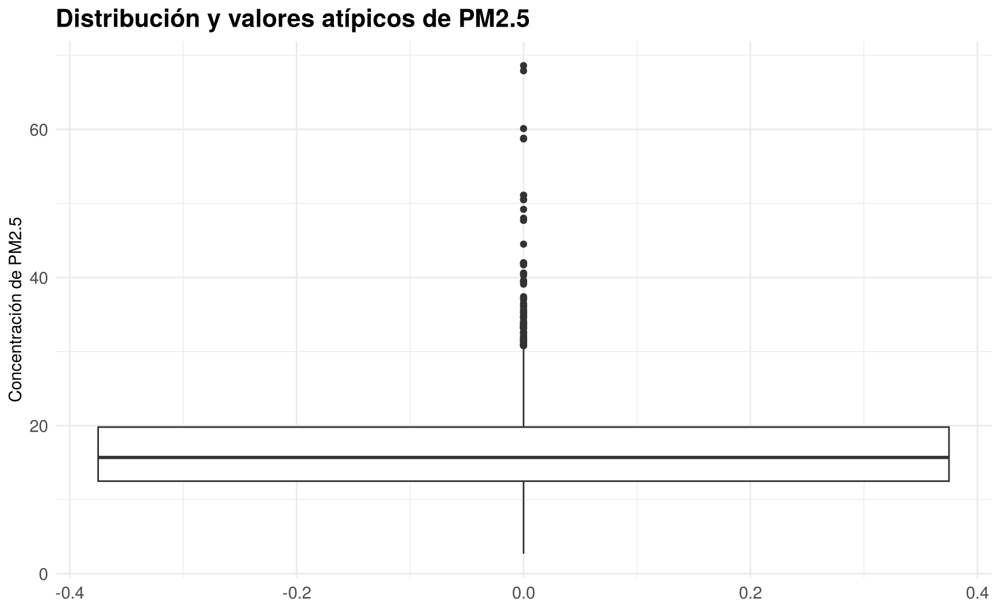
Interpretación. PM2.5 tiene 74 atípicos, también solo valores altos. Que se concentren en pocas estaciones apunta a fuentes locales y no a un problema generalizado.
2.10.3 Valores atípicos de variables meteorológicas
# Detección de valores atípicos en variables meteorológicas
meteorologicas <- df %>% filter(Variable %in% c("TAire", "HAire", "VViento", "P", "PLiquida", "RGlobal", "RUVb"))
outliers_meteorologicas <- meteorologicas %>% group_by(Variable) %>% summarise(Q1 = quantile(Promedio, 0.25, na.rm = TRUE), Q3 = quantile(Promedio, 0.75, na.rm = TRUE), .groups = "drop") %>% mutate(IQR = Q3 - Q1, Limite_inferior = Q1 - 1.5 * IQR, Limite_superior = Q3 + 1.5 * IQR) %>% mutate(across(where(is.numeric), ~ round(.x, 2)))
outliers_meteorologicas %>% knitr::kable(col.names = c("Variable", "Primer cuartil", "Tercer cuartil", "Rango IQR", "Límite inferior", "Límite superior")) %>% kableExtra::kable_styling(full_width = FALSE, position = "left") %>% kableExtra::column_spec(1:6, border_right = TRUE)| Variable | Primer cuartil | Tercer cuartil | Rango IQR | Límite inferior | Límite superior |
|---|---|---|---|---|---|
| HAire | 62.05 | 76.35 | 14.30 | 40.60 | 97.80 |
| P | 629.90 | 755.50 | 125.60 | 441.50 | 943.90 |
| PLiquida | 0.20 | 3.40 | 3.20 | -4.60 | 8.20 |
| RGlobal | 156.88 | 206.40 | 49.53 | 82.59 | 280.69 |
| RUVb | 1.90 | 205.85 | 203.95 | -304.03 | 511.78 |
| TAire | 20.60 | 25.00 | 4.40 | 14.00 | 31.60 |
| VViento | 0.90 | 1.70 | 0.80 | -0.30 | 2.90 |
# Boxplots de las variables meteorológicas
ggplot(meteorologicas, aes(x = Variable, y = Promedio)) +
geom_boxplot() +
labs(
title = "Distribución y valores atípicos de las variables meteorológicas",
x = "Variable meteorológica",
y = "Valor registrado"
) +
theme_minimal() +
theme(
plot.title = element_text(face = "bold", size = 16),
axis.text.x = element_text(angle = 45, hjust = 1)
)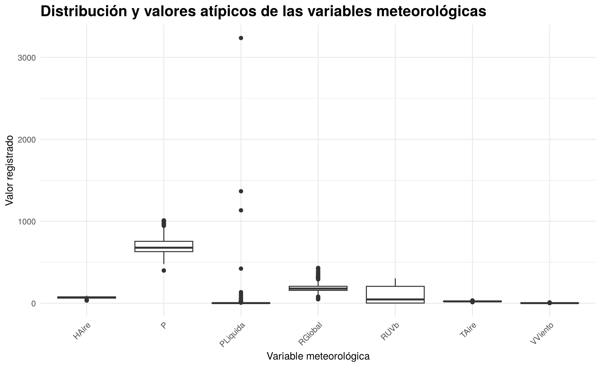
Interpretación. La presión tiene atípicos altos, que son los registros en hPa. La precipitación tiene valores extremos muy lejanos de la caja (acumulados). El viento tiene pocos atípicos.
Los atípicos no se eliminan: pueden ser episodios reales de contaminación. Las excepciones son los errores demostrables (presión en hPa, representatividad mayor a 100 %), que deben corregirse en la fuente.
2.11 Resumen estadístico general
# Resumen estadístico general de las variables
variables_resumen <- df %>%
filter(Variable %in% c(
"PM10", "PM2.5", "SO2", "NO2", "O3",
"TAire", "HAire", "VViento", "P",
"PLiquida", "RGlobal", "RUVb"
)) %>%
group_by(Variable) %>%
summarise(
N = sum(!is.na(Promedio)),
Mínimo = min(Promedio, na.rm = TRUE),
Q1 = quantile(Promedio, 0.25, na.rm = TRUE),
Mediana = median(Promedio, na.rm = TRUE),
Media = mean(Promedio, na.rm = TRUE),
Q3 = quantile(Promedio, 0.75, na.rm = TRUE),
Máximo = max(Promedio, na.rm = TRUE),
.groups = "drop"
) %>%
mutate(
across(where(is.numeric), ~ round(.x, 2))
)
variables_resumen %>%
knitr::kable(
col.names = c(
"Variable", "N", "Mínimo", "Q1",
"Mediana", "Media", "Q3", "Máximo"
)
) %>%
kableExtra::kable_styling(
full_width = FALSE,
position = "left"
) %>%
kableExtra::column_spec(
1:8,
border_right = TRUE
)| Variable | N | Mínimo | Q1 | Mediana | Media | Q3 | Máximo |
|---|---|---|---|---|---|---|---|
| HAire | 75 | 33.1 | 62.05 | 71.80 | 66.09 | 76.35 | 92.00 |
| NO2 | 644 | 0.5 | 16.50 | 26.00 | 26.46 | 35.60 | 65.60 |
| O3 | 827 | 2.0 | 19.80 | 25.70 | 26.15 | 31.80 | 65.80 |
| P | 673 | 399.1 | 629.90 | 677.60 | 701.68 | 755.50 | 1010.40 |
| PLiquida | 927 | 0.1 | 0.20 | 1.40 | 9.77 | 3.40 | 3236.70 |
| PM10 | 2985 | 4.6 | 27.00 | 34.60 | 37.12 | 44.80 | 162.30 |
| PM2.5 | 1984 | 2.7 | 12.50 | 15.70 | 16.84 | 19.80 | 68.60 |
| RGlobal | 600 | 48.3 | 156.88 | 178.45 | 185.64 | 206.40 | 431.30 |
| RUVb | 66 | 0.6 | 1.90 | 46.10 | 112.40 | 205.85 | 303.80 |
| SO2 | 1066 | 0.1 | 3.40 | 6.00 | 9.43 | 11.00 | 91.71 |
| TAire | 73 | 13.4 | 20.60 | 22.30 | 22.62 | 25.00 | 33.50 |
| VViento | 1254 | 0.1 | 0.90 | 1.20 | 1.37 | 1.70 | 10.20 |
Interpretación. Esta tabla resume las variables principales en un solo lugar y cierra el análisis descriptivo.
2.12 Variable objetivo: excedencia diaria de PM2.5
Objetivo específico 2: caracterizar la variable que predecirá el modelo.
El modelo del proyecto responderá: ¿una estación registrará en el año al menos un día con PM2.5 por encima del límite diario de la Resolución 2254 de 2017? Antes de definirla hay que verificar qué mide exactamente la columna Excedencias limite actual en cada tiempo de exposición.
# Verificar la columna de excedencias según el tiempo de exposición
pm25 <- pm25 %>% mutate(Excede = `Excedencias limite actual` > 0)
pm25 %>%
group_by(`Tiempo de exposición (horas)`) %>%
summarise(
Registros = n(),
Porcentaje_que_excede = round(mean(Excede) * 100, 1),
Maximo_sin_excedencia = max(Máximo[!Excede]),
.groups = "drop"
) %>%
knitr::kable(col.names = c("Exposición (h)", "Registros", "% que excede", "Máximo sin excedencia (µg/m³)")) %>%
kableExtra::kable_styling(full_width = FALSE, position = "left")| Exposición (h) | Registros | % que excede | Máximo sin excedencia (µg/m³) |
|---|---|---|---|
| 1 | 840 | 77.7 | 3608.5 |
| 24 | 1144 | 47.9 | 50.2 |
Interpretación. En los registros de 24 horas ninguna estación sin excedencias supera 50,2 µg/m³, lo que coincide con el límite diario de la norma. En los de 1 hora, en cambio, hay estaciones con máximos de 3.608,5 µg/m³ que figuran sin excedencias: la norma no define un límite horario para PM2.5 y esa columna no es confiable en esos registros.
Decisión: la variable objetivo se construye solo con los registros de 24 horas.
# Construir la variable objetivo con los registros de 24 horas
pm25_24h <- pm25 %>%
filter(`Tiempo de exposición (horas)` == 24) %>%
mutate(Excede = as.integer(Excede))
cat("Registros:", nrow(pm25_24h), "| Estaciones:", n_distinct(pm25_24h$Estación), "\n")## Registros: 1144 | Estaciones: 383pm25_24h %>%
count(Excede, name = "Registros") %>%
mutate(Porcentaje = round(Registros / sum(Registros) * 100, 1)) %>%
knitr::kable(col.names = c("Excede (1 = sí)", "Registros", "Porcentaje")) %>%
kableExtra::kable_styling(full_width = FALSE, position = "left")| Excede (1 = sí) | Registros | Porcentaje |
|---|---|---|
| 0 | 596 | 52.1 |
| 1 | 548 | 47.9 |
Interpretación. La variable objetivo tiene 1.144 registros de 383 estaciones, y el 47,9 % excede el límite. Las clases están balanceadas, así que el modelo no necesitará técnicas de sobremuestreo y la exactitud será una métrica razonable (junto con el AUC y el recall).
# Máximo diario de PM2.5 frente al límite de la norma
limite <- data.frame(Año = c(2010.5, 2018.5, 2024.5), Limite = c(50, 37, 37))
ggplot(pm25_24h, aes(x = Año, y = Máximo, color = factor(Excede, labels = c("No excede", "Excede")))) +
geom_jitter(width = 0.25, height = 0, size = 1.2, alpha = 0.6) +
geom_step(data = limite, aes(x = Año, y = Limite), inherit.aes = FALSE, linewidth = 0.8) +
scale_color_manual(values = c("No excede" = "grey60", "Excede" = "#c62828"), name = NULL) +
scale_x_continuous(breaks = 2011:2024) +
coord_cartesian(ylim = c(0, 150)) +
labs(title = "Máximo diario de PM2.5 y límite de la norma",
subtitle = "La línea negra es el límite diario de la Resolución 2254 de 2017",
x = "Año", y = "Máximo diario de PM2.5 (µg/m³)") +
theme_minimal() +
theme(plot.title = element_text(face = "bold", size = 16), legend.position = "top",
axis.text.x = element_text(angle = 45, hjust = 1), panel.grid.minor = element_blank())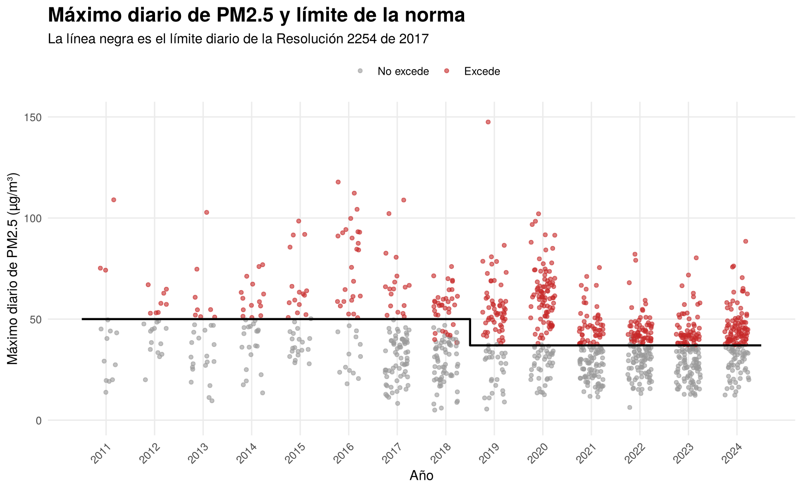
Interpretación. El gráfico confirma la definición: los registros que exceden (rojo) están por encima de la línea del límite y los que no exceden (gris) por debajo. El límite bajó de 50 a 37 µg/m³ a mediados de 2018, cuando entró en vigor el nivel más estricto de la norma. Por eso una misma concentración puede ser excedencia después de 2018 y no antes.
# Porcentaje de estaciones que exceden el límite por año
excedencia_anual <- pm25_24h %>%
group_by(Año) %>%
summarise(Tasa = mean(Excede) * 100, Registros = n(), .groups = "drop")
ggplot(excedencia_anual, aes(x = factor(Año), y = Tasa)) +
geom_col() +
geom_text(aes(label = paste0(round(Tasa), "%\n(n=", Registros, ")")), vjust = -0.2, size = 3) +
coord_cartesian(ylim = c(0, 100)) +
labs(title = "Porcentaje de estaciones que exceden el límite por año",
x = "Año", y = "Estaciones que exceden (%)") +
theme_minimal() +
theme(plot.title = element_text(face = "bold", size = 16),
axis.text.x = element_text(angle = 45, hjust = 1), panel.grid.minor = element_blank())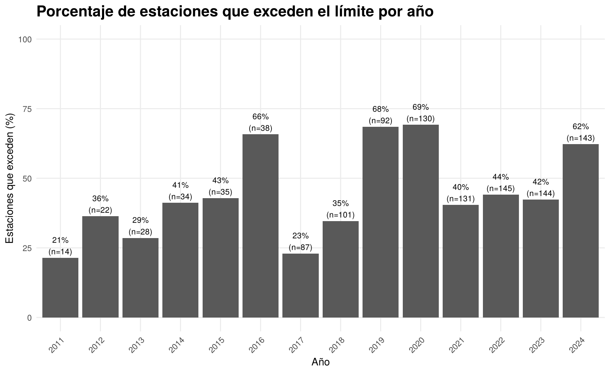
Interpretación. La tasa de excedencia no tiene una tendencia clara: oscila entre 21 % (2011) y 69 % (2020). Los picos de 2016, 2019–2020 y 2024 sugieren años con episodios de contaminación más frecuentes, que podrían relacionarse con condiciones meteorológicas o incendios; el dataset no permite confirmarlo.
Dos efectos complican la lectura: entre 2011 y 2016 hay pocas estaciones, y en 2018 el límite se volvió más estricto. A pesar de que el promedio de PM2.5 bajó, los días con excedencias siguen siendo frecuentes: mejorar el promedio no elimina los episodios críticos.
# Excedencia según el tipo de estación
excedencia_tipo <- pm25_24h %>%
group_by(`Tipo de Estación`) %>%
summarise(Tasa = round(mean(Excede) * 100, 1), Registros = n(), .groups = "drop")
excedencia_tipo %>%
knitr::kable(col.names = c("Tipo de estación", "% que excede", "Registros")) %>%
kableExtra::kable_styling(full_width = FALSE, position = "left")| Tipo de estación | % que excede | Registros |
|---|---|---|
| Fija | 52.4 | 987 |
| Indicativa | 19.7 | 157 |
Interpretación. Las estaciones fijas exceden con mucha más frecuencia (52 %) que las indicativas (20 %). Las fijas miden todo el año y suelen estar en zonas urbanas críticas; las indicativas son campañas cortas, con menos días para registrar una excedencia.
# Excedencia por departamento (nombres normalizados, al menos 20 registros)
excedencia_depto <- pm25_24h %>%
group_by(Departamento_norm) %>%
summarise(Tasa = mean(Excede) * 100, Registros = n(), .groups = "drop") %>%
filter(Registros >= 20) %>%
mutate(Departamento_norm = reorder(Departamento_norm, Tasa))
ggplot(excedencia_depto, aes(x = Departamento_norm, y = Tasa)) +
geom_col() +
geom_text(aes(label = paste0(round(Tasa), "%")), hjust = -0.15, size = 3.5) +
coord_flip() +
expand_limits(y = 100) +
labs(title = "Porcentaje de registros que exceden el límite de PM2.5",
subtitle = "Departamentos con al menos 20 registros",
x = "Departamento", y = "Registros que exceden (%)") +
theme_minimal() +
theme(plot.title = element_text(face = "bold", size = 16), panel.grid.minor = element_blank())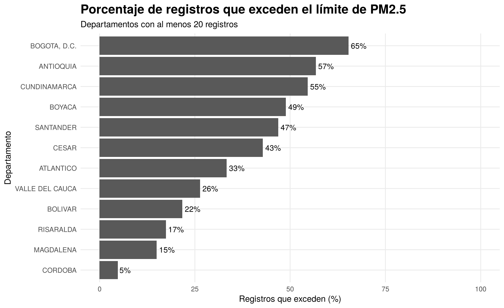
Interpretación. Hay un contraste geográfico claro. Bogotá, Antioquia y Cundinamarca exceden con frecuencia, mientras que Córdoba, Magdalena y Bolívar casi no lo hacen.
Una explicación física plausible: las ciudades andinas están en valles o altiplanos donde las inversiones térmicas y el poco viento atrapan los contaminantes, mientras que en la costa Caribe los vientos alisios favorecen la dispersión. La ubicación será uno de los predictores más importantes del modelo.
# Estaciones de PM2.5 según la frecuencia de excedencia
estaciones_pm25 <- pm25_24h %>%
group_by(Estación) %>%
summarise(Latitud = mean(Latitud), Longitud = mean(Longitud),
Tasa = mean(Excede) * 100, Años = n(), .groups = "drop")
ggplot(estaciones_pm25, aes(x = Longitud, y = Latitud, color = Tasa, size = Años)) +
geom_point(alpha = 0.85) +
scale_color_gradient(low = "#fde0dd", high = "#a50f15", name = "Años con\nexcedencia (%)") +
scale_size(range = c(1, 5)) +
coord_equal() +
labs(title = "Estaciones de PM2.5 según frecuencia de excedencia", x = "Longitud", y = "Latitud") +
theme_minimal() +
theme(plot.title = element_text(face = "bold", size = 16))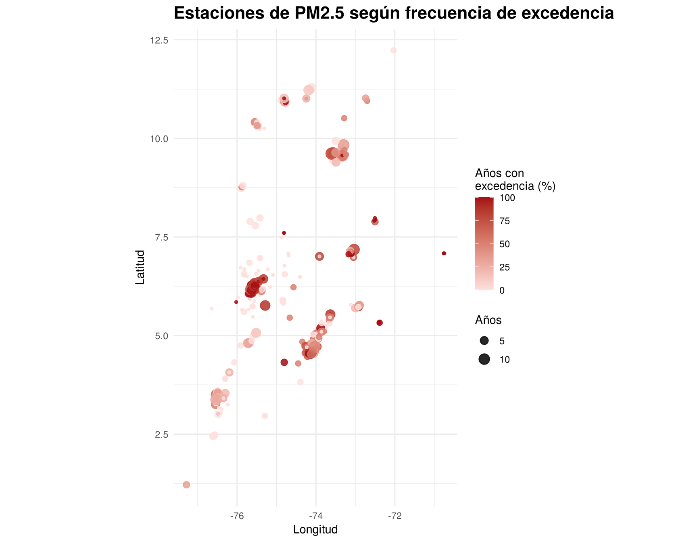
Interpretación. El mapa muestra el mismo patrón: los puntos rojos intensos se concentran en el centro andino (Bogotá, Valle de Aburrá) y los claros en el norte (Caribe) y el suroccidente. El tamaño del punto indica cuántos años reportó la estación.
# Excedencia según los días medidos en el año (esfuerzo de medición)
esfuerzo <- pm25_24h %>%
mutate(Cuartil_datos = ntile(`No. de datos`, 4)) %>%
group_by(Cuartil_datos) %>%
summarise(Dias_medidos = median(`No. de datos`), Tasa = round(mean(Excede) * 100, 1),
Registros = n(), .groups = "drop")
esfuerzo %>%
knitr::kable(col.names = c("Cuartil de días medidos", "Mediana de días medidos", "% que excede", "Registros")) %>%
kableExtra::kable_styling(full_width = FALSE, position = "left")| Cuartil de días medidos | Mediana de días medidos | % que excede | Registros |
|---|---|---|---|
| 1 | 41 | 21.0 | 286 |
| 2 | 121 | 38.1 | 286 |
| 3 | 304 | 53.5 | 286 |
| 4 | 355 | 79.0 | 286 |
Interpretación. Este es el hallazgo más importante para el modelo. Las estaciones que midieron pocos días (cuartil 1, mediana de 41 días) exceden en el 21 % de los casos, y las que midieron casi todo el año (cuartil 4) en el 79 %. Mientras más días se mide, más probable es captar al menos un día malo.
Precaución. La variable objetivo depende del esfuerzo de medición y no solo de la calidad del aire. El modelo debe incluir No. de datos (o la representatividad) como predictor de control. Si no, confundirá «estación que mide mucho» con «estación contaminada».
# Promedio anual de PM2.5 según excedencia
ggplot(pm25_24h, aes(x = factor(Excede, labels = c("No excede", "Excede")), y = Promedio)) +
geom_boxplot(width = 0.5) +
labs(title = "Promedio anual de PM2.5 según excedencia", x = NULL, y = "Promedio anual de PM2.5 (µg/m³)") +
theme_minimal() +
theme(plot.title = element_text(face = "bold", size = 16))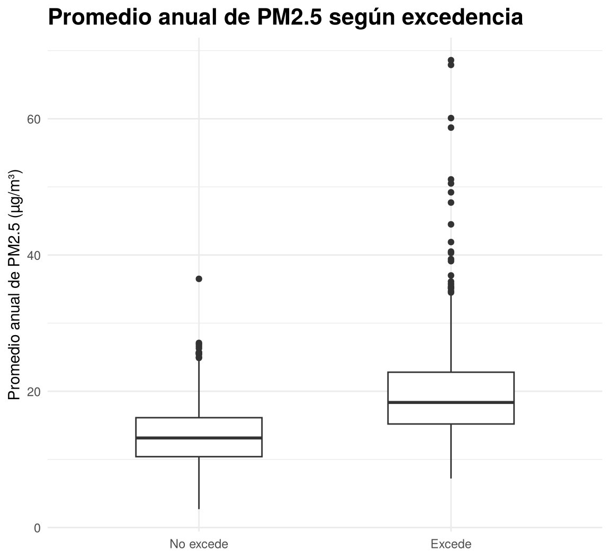
Interpretación. Las estaciones que exceden tienen un promedio anual mayor (mediana de 18,4 frente a 13,1 µg/m³), pero las cajas se solapan: hay estaciones con promedio bajo que igual tienen días críticos. El promedio anual por sí solo no basta para anticipar las excedencias.
Precaución. Promedio, Mediana, Percentil 98, Máximo, Días de excedencias y Porcentaje excedencias limite actual de PM2.5 se calculan con las mismas mediciones que definen la excedencia. Usarlas como predictores sería fuga de información (data leakage): el modelo acertaría en el EDA pero sería inútil en la práctica.
Predictores candidatos para el modelo
| Variable | Uso | Razón |
|---|---|---|
| Latitud, Longitud, Departamento | ✅ Incluir | Fuerte contraste andino–Caribe |
| Tipo de estación | ✅ Incluir | Fijas mucho más que indicativas |
| No. de datos, Representatividad | ✅ Incluir (control) | Controlan el esfuerzo de medición |
| Año | ✅ Incluir | Captura el cambio de límite (2018) y la evolución de la red |
| Autoridad ambiental | ⚠️ Evaluar | Puede repetir la información de ubicación |
| Promedio, Mediana, P98, Máximo, Días de excedencias de PM2.5 | ❌ Excluir | Fuga de información |
| Meteorología de la misma estación | ⚠️ Evaluar | Aporta física, pero solo ~30 % de las estaciones la mide |
Interpretación. Con estos predictores, una prueba rápida con un bosque aleatorio y validación por estación (las estaciones de entrenamiento y de prueba son distintas) alcanzó un AUC de 0,81. El problema es viable; la etapa de modelado deberá comparar algoritmos, ajustar hiperparámetros y evaluar qué aporta la meteorología.